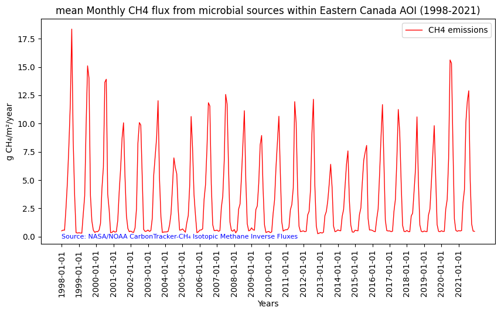

# Import the following libraries
import requests
import folium
import folium.plugins
from folium import Map, TileLayer
from pystac_client import Client
import branca
import pandas as pd
import matplotlib.pyplot as plt
from IPython.display import JSON
from stats_module import generate_stats, clean_stats, display_statsCarbonTracker-CH₄ Isotopic Methane Inverse Fluxes
Global, monthly 1 degree resolution methane emission estimates from microbial, fossil and pyrogenic sources derived using inverse modeling, version 2023.
Access this Notebook
You can launch this notebook in the US GHG Center JupyterHub by clicking the link below. If you are a new user, you should first sign up for the hub by filling out this request form and providing the required information.
Access the CarbonTracker-CH₄ Isotopic Methane Inverse Fluxes notebook in the US GHG Center JupyterHub.
Table of Contents
Data Summary and Application
- Spatial coverage: Global
- Spatial resolution: 1° x 1°
- Temporal extent: January 1998 - December 2021
- Temporal resolution: Monthly
- Unit: Grams of methane per square meter per year
- Utility: Climate Research
For more, visit the CarbonTracker-CH₄ Isotopic Methane Inverse Fluxes data overview page.
Approach
- Identify available dates and temporal frequency of observations for the given collection using the GHGC API
/stacendpoint. The collection processed in this notebook is the CarbonTracker-CH₄ Isotopic Methane Inverse Fluxes Data product. - Pass the STAC item into the raster API
/collections/{collection_id}/items/{item_id}/tilejson.jsonendpoint. - Using
folium.plugins.DualMap, we will visualize two tiles (side-by-side), allowing us to compare time points. - After the visualization, we will perform zonal statistics for a given polygon.
About the Data
CarbonTracker-CH₄ Isotopic Methane Inverse Fluxes
Surface methane (CH₄) emissions are derived from atmospheric measurements of methane and its ¹³C carbon isotope content. Different sources of methane contain different ratios of the two stable isotopologues, ¹²CH₄ and ¹³CH₄. This makes normally indistinguishable collocated sources of methane, say from agriculture and oil and gas exploration, distinguishable. The National Oceanic and Atmospheric Administration (NOAA) collects whole air samples from its global cooperative network of flasks (https://gml.noaa.gov/ccgg/about.html), which are then analyzed for methane and other trace gasses. A subset of those flasks are also analyzed for ¹³C of methane in collaboration with the Institute of Arctic and Alpine Research at the University of Colorado Boulder. Scientists at the National Aeronautics and Space Administration (NASA) and NOAA used those measurements of methane and ¹³C of methane in conjunction with a model of atmospheric circulation to estimate emissions of methane separated by three source types, microbial, fossil and pyrogenic.
For more information regarding this dataset, please visit the CarbonTracker-CH₄ Isotopic Methane Inverse Fluxes data overview page.
Terminology
Navigating data via the GHGC API, you will encounter terminology that is different from browsing in a typical filesystem. We’ll define some terms here which are used throughout this notebook. - catalog: All datasets available at the /stac endpoint - collection: A specific dataset, e.g. CarbonTracker-CH₄ Isotopic Methane Inverse Fluxes - item: One granule in the dataset, e.g. one monthly file of methane inverse fluxes - asset: A variable available within the granule, e.g. microbial, fossil, or pyrogenic methane fluxes - STAC API: SpatioTemporal Asset Catalogs - Endpoint for fetching the data itself - Raster API: Endpoint for fetching data imagery
Install the Required Libraries
Required libraries are pre-installed on the GHG Center Hub. If you need to run this notebook elsewhere, please install them with this line in a code cell:
%pip install requests folium rasterstats pystac_client pandas matplotlib –quiet
Query the STAC API
STAC API Collection Names
Now, you must fetch the dataset from the STAC API by defining its associated STAC API collection ID as a variable. The collection ID, also known as the collection name, for theCarbonTracker-CH₄ Isotopic Methane Inverse Fluxes dataset is ct-ch4-monthgrid-v2023.*
**You can find the collection name of any dataset on the GHGC data portal by navigating to the dataset landing page within the data catalog. The collection name is the last portion of the dataset landing page’s URL, and is also listed in the pop-up box after clicking “ACCESS DATA.”*
# Provide the STAC and RASTER API endpoints
# The endpoint is referring to a location within the API that executes a request on a data collection nesting on the server.
# The STAC API is a catalog of all the existing data collections that are stored in the GHG Center.
STAC_API_URL = "https://earth.gov/ghgcenter/api/stac"
# The RASTER API is used to fetch collections for visualization
RASTER_API_URL = "https://earth.gov/ghgcenter/api/raster"
# The collection name is used to fetch the dataset from the STAC API. First, we define the collection name as a variable
# Name of the collection for CarbonTracker-CH₄ Isotopic Methane Inverse Fluxes
collection_name = "ct-ch4-monthgrid-v2023"# Fetch the collection from the STAC API using the appropriate endpoint
# The 'pystac_client' library allows a HTTP request possible
catalog = Client.open(STAC_API_URL)
collection = catalog.get_collection(collection_name)
# Print the properties of the collection to the console
collection- type "Collection"
- id "ct-ch4-monthgrid-v2023"
- stac_version "1.0.0"
- description "Surface methane (CH₄) emissions are derived from atmospheric measurements of methane and its ¹³C carbon isotope content. Different sources of methane contain different ratios of the two stable isotopologues, ¹²CH₄ and ¹³CH₄. This makes normally indistinguishable collocated sources of methane, say from agriculture and oil and gas exploration, distinguishable. The National Oceanic and Atmospheric Administration (NOAA) collects whole air samples from its global cooperative network of flasks (https://gml.noaa.gov/ccgg/about.html), which are then analyzed for methane and other trace gases. A subset of those flasks are also analyzed for ¹³C of methane in collaboration with the Institute of Arctic and Alpine Research at the University of Colorado Boulder. Scientists at NOAA and the National Aeronautics and Space Administration (NASA) used those measurements of methane and ¹³C of methane in conjunction with a model of atmospheric circulation to estimate emissions of methane separated by three source types: microbial, fossil and pyrogenic. This dataset presents monthly methane emissions in units of grams of methane per square meter per year (g CH₄/m²/year) from microbial, fossil and pyrogenic sources, along with a layer of total methane emissions from all three sources combined, at 1° resolution from 1998 to 2021. The source data can be found at https://doi.org/10.25925/40jt-qd67"
links[] 4 items
0
- rel "items"
- href "https://earth.gov/ghgcenter/api/stac/collections/ct-ch4-monthgrid-v2023/items"
- type "application/geo+json"
1
- rel "parent"
- href "https://earth.gov/ghgcenter/api/stac/"
- type "application/json"
2
- rel "root"
- href "https://earth.gov/ghgcenter/api/stac"
- type "application/json"
- title "US GHG Center STAC API"
3
- rel "self"
- href "https://earth.gov/ghgcenter/api/stac/collections/ct-ch4-monthgrid-v2023"
- type "application/json"
stac_extensions[] 2 items
- 0 "https://stac-extensions.github.io/render/v1.0.0/schema.json"
- 1 "https://stac-extensions.github.io/item-assets/v1.0.0/schema.json"
renders
total
assets[] 1 items
- 0 "total"
rescale[] 1 items
0[] 2 items
- 0 0
- 1 50
- colormap_name "purd"
fossil
assets[] 1 items
- 0 "fossil"
rescale[] 1 items
0[] 2 items
- 0 0
- 1 50
- colormap_name "purd"
dashboard
assets[] 1 items
- 0 "total"
rescale[] 1 items
0[] 2 items
- 0 0
- 1 50
- colormap_name "purd"
microbial
assets[] 1 items
- 0 "microbial"
rescale[] 1 items
0[] 2 items
- 0 0
- 1 30
- colormap_name "purd"
pyrogenic
assets[] 1 items
- 0 "pyrogenic"
rescale[] 1 items
0[] 2 items
- 0 0
- 1 8
- colormap_name "purd"
item_assets
total
- type "image/tiff; application=geotiff; profile=cloud-optimized"
roles[] 2 items
- 0 "data"
- 1 "layer"
- title "Total CH₄ Emission"
- description "Total methane emission from microbial, fossil, and pyrogenic sources."
fossil
- type "image/tiff; application=geotiff; profile=cloud-optimized"
roles[] 2 items
- 0 "data"
- 1 "layer"
- title "Fossil CH₄ Emission"
- description "Emission of methane from all fossil sources, such as oil and gas activities and coal mining."
microbial
- type "image/tiff; application=geotiff; profile=cloud-optimized"
roles[] 2 items
- 0 "data"
- 1 "layer"
- title "Microbial CH₄ Emission"
- description "Emission of methane from all microbial sources, such as wetlands, ruminants, agriculture, and termites."
pyrogenic
- type "image/tiff; application=geotiff; profile=cloud-optimized"
roles[] 2 items
- 0 "data"
- 1 "layer"
- title "Pyrogenic CH₄ Emission"
- description "Emission of methane from all sources of biomass burning, such as wildfires and crop residue burning."
- dashboard:is_periodic True
- dashboard:time_density "month"
- title "CarbonTracker-CH₄ Isotopic Methane Inverse Fluxes v2023"
extent
spatial
bbox[] 1 items
0[] 4 items
- 0 -180
- 1 -90
- 2 180
- 3 90
temporal
interval[] 1 items
0[] 2 items
- 0 "1998-01-01T00:00:00Z"
- 1 "2021-12-31T00:00:00Z"
- license "CC0-1.0"
summaries
datetime[] 2 items
- 0 "1998-01-01T00:00:00Z"
- 1 "2021-12-31T00:00:00Z"
Examining the contents of our collection under the temporal variable, we see that the data is available from January 1998 to December 2021. By looking at the dashboard:time density, we observe that the data is periodic with monthly time density.
items = list(collection.get_items()) # Convert the iterator to a list
print(f"Found {len(items)} items")Found 288 itemssearch = catalog.search(
collections=collection_name,
datetime=['2010-01-01T00:00:00Z','2010-12-31T00:00:00Z']
)
# Take a look at the items we found
for item in search.item_collection():
print(item)<Item id=ct-ch4-monthgrid-v2023-201012>
<Item id=ct-ch4-monthgrid-v2023-201011>
<Item id=ct-ch4-monthgrid-v2023-201010>
<Item id=ct-ch4-monthgrid-v2023-201009>
<Item id=ct-ch4-monthgrid-v2023-201008>
<Item id=ct-ch4-monthgrid-v2023-201007>
<Item id=ct-ch4-monthgrid-v2023-201006>
<Item id=ct-ch4-monthgrid-v2023-201005>
<Item id=ct-ch4-monthgrid-v2023-201004>
<Item id=ct-ch4-monthgrid-v2023-201003>
<Item id=ct-ch4-monthgrid-v2023-201002>
<Item id=ct-ch4-monthgrid-v2023-201001># Examine the first item in the collection
# Keep in mind that a list starts from 0, 1, 2... therefore items[0] is referring to the first item in the list/collection
items[0]- type "Feature"
- stac_version "1.0.0"
stac_extensions[] 2 items
- 0 "https://stac-extensions.github.io/raster/v1.1.0/schema.json"
- 1 "https://stac-extensions.github.io/projection/v1.1.0/schema.json"
- id "ct-ch4-monthgrid-v2023-202112"
geometry
- type "Polygon"
coordinates[] 1 items
0[] 5 items
0[] 2 items
- 0 -180
- 1 -90
1[] 2 items
- 0 180
- 1 -90
2[] 2 items
- 0 180
- 1 90
3[] 2 items
- 0 -180
- 1 90
4[] 2 items
- 0 -180
- 1 -90
bbox[] 4 items
- 0 -180.0
- 1 -90.0
- 2 180.0
- 3 90.0
properties
- end_datetime "2021-12-31T00:00:00+00:00"
- start_datetime "2021-12-01T00:00:00+00:00"
- datetime None
links[] 5 items
0
- rel "collection"
- href "https://earth.gov/ghgcenter/api/stac/collections/ct-ch4-monthgrid-v2023"
- type "application/json"
1
- rel "parent"
- href "https://earth.gov/ghgcenter/api/stac/collections/ct-ch4-monthgrid-v2023"
- type "application/json"
2
- rel "root"
- href "https://earth.gov/ghgcenter/api/stac/"
- type "application/json"
3
- rel "self"
- href "https://earth.gov/ghgcenter/api/stac/collections/ct-ch4-monthgrid-v2023/items/ct-ch4-monthgrid-v2023-202112"
- type "application/geo+json"
4
- rel "preview"
- href "https://earth.gov/ghgcenter/api/raster/collections/ct-ch4-monthgrid-v2023/items/ct-ch4-monthgrid-v2023-202112/map?assets=total&rescale=0%2C50&colormap_name=purd"
- type "text/html"
- title "Map of Item"
assets
total
- href "s3://ghgc-data-store/ct-ch4-monthgrid-v2023/CTCH4_methane_total_emis_202112.tif"
- type "image/tiff; application=geotiff"
- title "Total CH₄ Emission"
- description "Total methane emission from microbial, fossil and pyrogenic sources."
proj:bbox[] 4 items
- 0 -180.0
- 1 -90.0
- 2 180.0
- 3 90.0
- proj:wkt2 "GEOGCS["WGS 84",DATUM["WGS_1984",SPHEROID["WGS 84",6378137,298.257223563,AUTHORITY["EPSG","7030"]],AUTHORITY["EPSG","6326"]],PRIMEM["Greenwich",0,AUTHORITY["EPSG","8901"]],UNIT["degree",0.0174532925199433,AUTHORITY["EPSG","9122"]],AXIS["Latitude",NORTH],AXIS["Longitude",EAST],AUTHORITY["EPSG","4326"]]"
proj:shape[] 2 items
- 0 180
- 1 360
raster:bands[] 1 items
0
- scale 1.0
- nodata -9999.0
- offset 0.0
- sampling "area"
- data_type "float64"
histogram
- max 530.5808981098967
- min 0.0
- count 11
buckets[] 10 items
- 0 64742
- 1 46
- 2 5
- 3 3
- 4 2
- 5 0
- 6 0
- 7 1
- 8 0
- 9 1
statistics
- mean 0.8335355132764146
- stddev 4.8890105997353395
- maximum 530.5808981098967
- minimum 0.0
- valid_percent 100.0
proj:geometry
- type "Polygon"
coordinates[] 1 items
0[] 5 items
0[] 2 items
- 0 -180.0
- 1 -90.0
1[] 2 items
- 0 180.0
- 1 -90.0
2[] 2 items
- 0 180.0
- 1 90.0
3[] 2 items
- 0 -180.0
- 1 90.0
4[] 2 items
- 0 -180.0
- 1 -90.0
proj:transform[] 9 items
- 0 1.0
- 1 0.0
- 2 -180.0
- 3 0.0
- 4 -1.0
- 5 90.0
- 6 0.0
- 7 0.0
- 8 1.0
roles[] 2 items
- 0 "data"
- 1 "layer"
fossil
- href "s3://ghgc-data-store/ct-ch4-monthgrid-v2023/CTCH4_methane_fossil_emis_202112.tif"
- type "image/tiff; application=geotiff"
- title "Fossil CH₄ Emission"
- description "Emission of methane from all fossil sources, such as oil and gas activities and coal mining."
proj:bbox[] 4 items
- 0 -180.0
- 1 -90.0
- 2 180.0
- 3 90.0
- proj:wkt2 "GEOGCS["WGS 84",DATUM["WGS_1984",SPHEROID["WGS 84",6378137,298.257223563,AUTHORITY["EPSG","7030"]],AUTHORITY["EPSG","6326"]],PRIMEM["Greenwich",0,AUTHORITY["EPSG","8901"]],UNIT["degree",0.0174532925199433,AUTHORITY["EPSG","9122"]],AXIS["Latitude",NORTH],AXIS["Longitude",EAST],AUTHORITY["EPSG","4326"]]"
proj:shape[] 2 items
- 0 180
- 1 360
raster:bands[] 1 items
0
- scale 1.0
- nodata -9999.0
- offset 0.0
- sampling "area"
- data_type "float64"
histogram
- max 198.25427154645362
- min 0.0
- count 11
buckets[] 10 items
- 0 64667
- 1 98
- 2 26
- 3 6
- 4 2
- 5 0
- 6 0
- 7 0
- 8 0
- 9 1
statistics
- mean 0.22088347652156248
- stddev 2.0478884296162465
- maximum 198.25427154645362
- minimum 0.0
- valid_percent 100.0
proj:geometry
- type "Polygon"
coordinates[] 1 items
0[] 5 items
0[] 2 items
- 0 -180.0
- 1 -90.0
1[] 2 items
- 0 180.0
- 1 -90.0
2[] 2 items
- 0 180.0
- 1 90.0
3[] 2 items
- 0 -180.0
- 1 90.0
4[] 2 items
- 0 -180.0
- 1 -90.0
proj:transform[] 9 items
- 0 1.0
- 1 0.0
- 2 -180.0
- 3 0.0
- 4 -1.0
- 5 90.0
- 6 0.0
- 7 0.0
- 8 1.0
roles[] 2 items
- 0 "data"
- 1 "layer"
microbial
- href "s3://ghgc-data-store/ct-ch4-monthgrid-v2023/CTCH4_methane_microbial_emis_202112.tif"
- type "image/tiff; application=geotiff"
- title "Microbial CH₄ Emission"
- description "Emission of methane from all microbial sources, such as wetlands, agriculture and termites."
proj:bbox[] 4 items
- 0 -180.0
- 1 -90.0
- 2 180.0
- 3 90.0
- proj:wkt2 "GEOGCS["WGS 84",DATUM["WGS_1984",SPHEROID["WGS 84",6378137,298.257223563,AUTHORITY["EPSG","7030"]],AUTHORITY["EPSG","6326"]],PRIMEM["Greenwich",0,AUTHORITY["EPSG","8901"]],UNIT["degree",0.0174532925199433,AUTHORITY["EPSG","9122"]],AXIS["Latitude",NORTH],AXIS["Longitude",EAST],AUTHORITY["EPSG","4326"]]"
proj:shape[] 2 items
- 0 180
- 1 360
raster:bands[] 1 items
0
- scale 1.0
- nodata -9999.0
- offset 0.0
- sampling "area"
- data_type "float64"
histogram
- max 530.2600813694878
- min 0.0
- count 11
buckets[] 10 items
- 0 64766
- 1 24
- 2 4
- 3 2
- 4 2
- 5 0
- 6 0
- 7 1
- 8 0
- 9 1
statistics
- mean 0.5841447766370819
- stddev 4.175736360830047
- maximum 530.2600813694878
- minimum 0.0
- valid_percent 100.0
proj:geometry
- type "Polygon"
coordinates[] 1 items
0[] 5 items
0[] 2 items
- 0 -180.0
- 1 -90.0
1[] 2 items
- 0 180.0
- 1 -90.0
2[] 2 items
- 0 180.0
- 1 90.0
3[] 2 items
- 0 -180.0
- 1 90.0
4[] 2 items
- 0 -180.0
- 1 -90.0
proj:transform[] 9 items
- 0 1.0
- 1 0.0
- 2 -180.0
- 3 0.0
- 4 -1.0
- 5 90.0
- 6 0.0
- 7 0.0
- 8 1.0
roles[] 2 items
- 0 "data"
- 1 "layer"
pyrogenic
- href "s3://ghgc-data-store/ct-ch4-monthgrid-v2023/CTCH4_methane_pyrogenic_emis_202112.tif"
- type "image/tiff; application=geotiff"
- title "Pyrogenic CH₄ Emission"
- description "Emission of methane from all sources of biomass burning, such as wildfires and crop residue burning."
proj:bbox[] 4 items
- 0 -180.0
- 1 -90.0
- 2 180.0
- 3 90.0
- proj:wkt2 "GEOGCS["WGS 84",DATUM["WGS_1984",SPHEROID["WGS 84",6378137,298.257223563,AUTHORITY["EPSG","7030"]],AUTHORITY["EPSG","6326"]],PRIMEM["Greenwich",0,AUTHORITY["EPSG","8901"]],UNIT["degree",0.0174532925199433,AUTHORITY["EPSG","9122"]],AXIS["Latitude",NORTH],AXIS["Longitude",EAST],AUTHORITY["EPSG","4326"]]"
proj:shape[] 2 items
- 0 180
- 1 360
raster:bands[] 1 items
0
- scale 1.0
- nodata -9999.0
- offset 0.0
- sampling "area"
- data_type "float64"
histogram
- max 141.91293261391382
- min 0.0
- count 11
buckets[] 10 items
- 0 64799
- 1 0
- 2 0
- 3 0
- 4 0
- 5 0
- 6 0
- 7 0
- 8 0
- 9 1
statistics
- mean 0.02850726011777028
- stddev 0.5879872807854465
- maximum 141.91293261391382
- minimum 0.0
- valid_percent 100.0
proj:geometry
- type "Polygon"
coordinates[] 1 items
0[] 5 items
0[] 2 items
- 0 -180.0
- 1 -90.0
1[] 2 items
- 0 180.0
- 1 -90.0
2[] 2 items
- 0 180.0
- 1 90.0
3[] 2 items
- 0 -180.0
- 1 90.0
4[] 2 items
- 0 -180.0
- 1 -90.0
proj:transform[] 9 items
- 0 1.0
- 1 0.0
- 2 -180.0
- 3 0.0
- 4 -1.0
- 5 90.0
- 6 0.0
- 7 0.0
- 8 1.0
roles[] 2 items
- 0 "data"
- 1 "layer"
rendered_preview
- href "https://earth.gov/ghgcenter/api/raster/collections/ct-ch4-monthgrid-v2023/items/ct-ch4-monthgrid-v2023-202112/preview.png?assets=total&rescale=0%2C50&colormap_name=purd"
- type "image/png"
- title "Rendered preview"
- rel "preview"
roles[] 1 items
- 0 "overview"
- collection "ct-ch4-monthgrid-v2023"
Creating Maps using Folium
You will now explore changes in the microbial CH₄ flux for two different dates. You will visualize the outputs on a map using folium.
Fetch Imagery from Raster API
Here we get information from the Raster API which we will add to our map in the next section.
# To access the year value from each item more easily, this will let us query more explicitly by year and month (e.g., 2020-02)
items_dict = {item.properties["start_datetime"][:7]: item for item in collection.get_items()}# Choose a colormap for displaying the data
# For more information on Colormaps in Matplotlib, please visit https://matplotlib.org/stable/users/explain/colors/colormaps.html
color_map = "purd"# Next, we need to specify the asset name for this collection
# The asset name is referring to the raster band containing the pixel values for the parameter of interest.
# Availabe assets are listed under the 'assets' parameter when investigating an item.
# For this notebook, we'll focus on microbial sources of CH4 fluxes, so our asset of interest is:
asset_name = "microbial"# Specify two date/times that you would like to visualize, using the format of items_dict.keys()
dates = ["2021-07","2021-01"]Below, we use some statistics of the raster data to set upper and lower limits for our color bar. These are saved as the rescale_values, and will be passed to the Raster API in the following step(s).
# Extract collection name and item ID for the first date
observation_date_1 = items_dict[dates[0]]
collection_id = observation_date_1.collection_id
item_id = observation_date_1.id
# Select relevant asset (microbial CH4 emissions)
object = observation_date_1.assets[asset_name]
raster_bands = object.extra_fields.get("raster:bands", [{}])
# Print the raster bands' information
raster_bands[{'scale': 1.0,
'nodata': -9999.0,
'offset': 0.0,
'sampling': 'area',
'data_type': 'float64',
'histogram': {'max': 267.10247712139517,
'min': 0.0,
'count': 11,
'buckets': [64301, 381, 72, 26, 13, 2, 1, 0, 2, 2]},
'statistics': {'mean': 1.0617093134900923,
'stddev': 5.465988434405864,
'maximum': 267.10247712139517,
'minimum': 0.0,
'valid_percent': 100.0}}]# Use mean, scaled stddev, and minimum to generate an appropriate color bar range.
rescale_values = {
"max": raster_bands[0]['statistics']['mean'] + 2.5*raster_bands[0]['statistics']['stddev'],
"min": raster_bands[0]['statistics']['minimum'],
}
print(rescale_values){'max': 14.726680399504753, 'min': 0.0}Now, you will pass the item id, collection name, asset name, and the rescale values to the Raster API endpoint. This step is done twice, one for each date/time you will visualize, and tells the Raster API which collection, item, and asset you want to view, specifying the colormap and colorbar ranges to use for visualization. The API returns a JSON with information about the requested image. Each image will be referred to as a tile.
# Make a GET request to retrieve information for your first date/time
observation_date_1_tile = requests.get(
f"{RASTER_API_URL}/collections/{collection_id}/items/{item_id}/tilejson.json?"
f"&assets={asset_name}"
f"&color_formula=gamma+r+1.05&colormap_name={color_map}"
f"&rescale={rescale_values['min']},{rescale_values['max']}"
).json()
# Print the properties of the retrieved granule to the console
observation_date_1_tile{'tilejson': '2.2.0',
'version': '1.0.0',
'scheme': 'xyz',
'tiles': ['https://earth.gov/ghgcenter/api/raster/collections/ct-ch4-monthgrid-v2023/items/ct-ch4-monthgrid-v2023-202107/tiles/WebMercatorQuad/{z}/{x}/{y}@1x?assets=microbial&color_formula=gamma+r+1.05&colormap_name=purd&rescale=0.0%2C14.726680399504753'],
'minzoom': 0,
'maxzoom': 24,
'bounds': [-180.0, -90.0, 180.0, 90.0],
'center': [0.0, 0.0, 0]}# Repeat the above for your second date/time
# Note that we do not calculate new rescale_values for this tile, because we dates tiles 1 and 2 to have the same colorbar range for best visual comparison.
observation_date_2 = items_dict[dates[1]]
# Extract collection name and item ID
collection_id = observation_date_2.collection_id
item_id = observation_date_2.id
observation_date_2_tile = requests.get(
f"{RASTER_API_URL}/collections/{collection_id}/items/{item_id}/tilejson.json?"
f"&assets={asset_name}"
f"&color_formula=gamma+r+1.05&colormap_name={color_map}"
f"&rescale={rescale_values['min']},{rescale_values['max']}"
).json()
# Print the properties of the retrieved granule to the console
observation_date_2_tile{'tilejson': '2.2.0',
'version': '1.0.0',
'scheme': 'xyz',
'tiles': ['https://earth.gov/ghgcenter/api/raster/collections/ct-ch4-monthgrid-v2023/items/ct-ch4-monthgrid-v2023-202101/tiles/WebMercatorQuad/{z}/{x}/{y}@1x?assets=microbial&color_formula=gamma+r+1.05&colormap_name=purd&rescale=0.0%2C14.726680399504753'],
'minzoom': 0,
'maxzoom': 24,
'bounds': [-180.0, -90.0, 180.0, 90.0],
'center': [0.0, 0.0, 0]}Generate Map
First, we’ll define the Area of Interest (AOI) as a GEOJSON. This will be visualized as a filled polygon on the map.
# The AOI is currently set to Eastern Canada, North America.
aoi = {
"type": "FeatureCollection",
"features": [
{
"type": "Feature",
"properties": {},
"geometry": {
"coordinates": [
[
# [longitude, latitude]
[-106.81091327586626,58.13717287115446], # Southwest Bounding Coordinate
[-106.81091327586626,46.689085955377266], # Southeast Bounding Coordinate
[-84.5565048510494,46.689085955377266], # Northeast Bounding Coordinate
[-84.5565048510494,58.13717287115446], # Northwest Bounding Coordinate
[-106.81091327586626,58.13717287115446] # Closing the polygon at the Southwest Bounding Coordinate
]
],
"type": "Polygon"
}
}
]
}We will use the DualMap format from folium to visualize our two dates side-by-side for the area of interest. Below we add the desired layers to our map and add markers to identify the date/times shown.
# Initialize the map, specifying the center of the map and the starting zoom level.
# 'folium.plugins' allows mapping side-by-side via 'DualMap'
# You can change the center location of the map by changing the "center_latlon = (LAT,LON)" statement.
center_latlon = (52, -95.3)
map_ = folium.plugins.DualMap(location=center_latlon, zoom_start=4)
# Define the first map layer using the tile fetched for the first date
# The TileLayer library helps in manipulating and displaying raster layers on a map
map_layer_observation_date_1 = TileLayer(
tiles=observation_date_1_tile["tiles"][0], # Path to retrieve the tile
attr="GHG", # Set the attribution
opacity=0.8, # Adjust the transparency of the layer
)
# Add the first layer to the Dual Map
# This will appear on the left side, specified by 'm1'
map_layer_observation_date_1.add_to(map_.m1)
# Define the second map layer using the tile fetched for the second date
map_layer_observation_date_2 = TileLayer(
tiles=observation_date_2_tile["tiles"][0], # Path to retrieve the tile
attr="GHG", # Set the attribution
opacity=0.8, # Adjust the transparency of the layer
)
# Add the second layer to the Dual Map
# This will appear on the right side, specified by 'm2'
map_layer_observation_date_2.add_to(map_.m2)
# Display AOI on both maps
folium.GeoJson(aoi, name="Eastern Canada, North America").add_to(map_)
# Visualize the Dual Map
map_Make this Notebook Trusted to load map: File -> Trust Notebook
This visualization effectively illustrates the difference in microbial activity in warm vs. cold temperatures, which vary most widely at high latitudes.
Calculate Zonal Statistics
To perform zonal statistics, first we need to create a polygon. In this use case we are creating a polygon in Eastern Canada, North America.
# Give your AOI a name to be used in your time series plot later on.
aoi_name='Eastern Canada'
# This AOI is defined as a GEOJSON.
aoi = {
"type": "FeatureCollection",
"features": [
{
"type": "Feature",
"properties": {},
"geometry": {
"coordinates": [
[
# [longitude, latitude]
[-106.81091327586626,58.13717287115446], # Southwest Bounding Coordinate
[-106.81091327586626,46.689085955377266], # Southeast Bounding Coordinate
[-84.5565048510494,46.689085955377266], # Northeast Bounding Coordinate
[-84.5565048510494,58.13717287115446], # Northwest Bounding Coordinate
[-106.81091327586626,58.13717287115446] # Closing the polygon at the Southwest Bounding Coordinate
]
],
"type": "Polygon"
}
}
]
}Before we generate stats for a specific item (observation), we first check the total number of items available within the collection and retrieve the information regarding their start datetime.
# Check total number of items available within the collection
items = requests.get(
f"{STAC_API_URL}/collections/{collection_name}/items?limit=600"
).json()["features"]
# Print the total number of items (granules) found
print(f"Found {len(items)} items")Found 288 items# Examine the first item in the collection
items[0]{'id': 'ct-ch4-monthgrid-v2023-202112',
'bbox': [-180.0, -90.0, 180.0, 90.0],
'type': 'Feature',
'links': [{'rel': 'collection',
'type': 'application/json',
'href': 'https://earth.gov/ghgcenter/api/stac/collections/ct-ch4-monthgrid-v2023'},
{'rel': 'parent',
'type': 'application/json',
'href': 'https://earth.gov/ghgcenter/api/stac/collections/ct-ch4-monthgrid-v2023'},
{'rel': 'root',
'type': 'application/json',
'href': 'https://earth.gov/ghgcenter/api/stac/'},
{'rel': 'self',
'type': 'application/geo+json',
'href': 'https://earth.gov/ghgcenter/api/stac/collections/ct-ch4-monthgrid-v2023/items/ct-ch4-monthgrid-v2023-202112'},
{'title': 'Map of Item',
'href': 'https://earth.gov/ghgcenter/api/raster/collections/ct-ch4-monthgrid-v2023/items/ct-ch4-monthgrid-v2023-202112/map?assets=total&rescale=0%2C50&colormap_name=purd',
'rel': 'preview',
'type': 'text/html'}],
'assets': {'total': {'href': 's3://ghgc-data-store/ct-ch4-monthgrid-v2023/CTCH4_methane_total_emis_202112.tif',
'type': 'image/tiff; application=geotiff',
'roles': ['data', 'layer'],
'title': 'Total CH₄ Emission',
'proj:bbox': [-180.0, -90.0, 180.0, 90.0],
'proj:wkt2': 'GEOGCS["WGS 84",DATUM["WGS_1984",SPHEROID["WGS 84",6378137,298.257223563,AUTHORITY["EPSG","7030"]],AUTHORITY["EPSG","6326"]],PRIMEM["Greenwich",0,AUTHORITY["EPSG","8901"]],UNIT["degree",0.0174532925199433,AUTHORITY["EPSG","9122"]],AXIS["Latitude",NORTH],AXIS["Longitude",EAST],AUTHORITY["EPSG","4326"]]',
'proj:shape': [180, 360],
'description': 'Total methane emission from microbial, fossil and pyrogenic sources.',
'raster:bands': [{'scale': 1.0,
'nodata': -9999.0,
'offset': 0.0,
'sampling': 'area',
'data_type': 'float64',
'histogram': {'max': 530.5808981098967,
'min': 0.0,
'count': 11,
'buckets': [64742, 46, 5, 3, 2, 0, 0, 1, 0, 1]},
'statistics': {'mean': 0.8335355132764146,
'stddev': 4.8890105997353395,
'maximum': 530.5808981098967,
'minimum': 0.0,
'valid_percent': 100.0}}],
'proj:geometry': {'type': 'Polygon',
'coordinates': [[[-180.0, -90.0],
[180.0, -90.0],
[180.0, 90.0],
[-180.0, 90.0],
[-180.0, -90.0]]]},
'proj:transform': [1.0, 0.0, -180.0, 0.0, -1.0, 90.0, 0.0, 0.0, 1.0]},
'fossil': {'href': 's3://ghgc-data-store/ct-ch4-monthgrid-v2023/CTCH4_methane_fossil_emis_202112.tif',
'type': 'image/tiff; application=geotiff',
'roles': ['data', 'layer'],
'title': 'Fossil CH₄ Emission',
'proj:bbox': [-180.0, -90.0, 180.0, 90.0],
'proj:wkt2': 'GEOGCS["WGS 84",DATUM["WGS_1984",SPHEROID["WGS 84",6378137,298.257223563,AUTHORITY["EPSG","7030"]],AUTHORITY["EPSG","6326"]],PRIMEM["Greenwich",0,AUTHORITY["EPSG","8901"]],UNIT["degree",0.0174532925199433,AUTHORITY["EPSG","9122"]],AXIS["Latitude",NORTH],AXIS["Longitude",EAST],AUTHORITY["EPSG","4326"]]',
'proj:shape': [180, 360],
'description': 'Emission of methane from all fossil sources, such as oil and gas activities and coal mining.',
'raster:bands': [{'scale': 1.0,
'nodata': -9999.0,
'offset': 0.0,
'sampling': 'area',
'data_type': 'float64',
'histogram': {'max': 198.25427154645362,
'min': 0.0,
'count': 11,
'buckets': [64667, 98, 26, 6, 2, 0, 0, 0, 0, 1]},
'statistics': {'mean': 0.22088347652156248,
'stddev': 2.0478884296162465,
'maximum': 198.25427154645362,
'minimum': 0.0,
'valid_percent': 100.0}}],
'proj:geometry': {'type': 'Polygon',
'coordinates': [[[-180.0, -90.0],
[180.0, -90.0],
[180.0, 90.0],
[-180.0, 90.0],
[-180.0, -90.0]]]},
'proj:transform': [1.0, 0.0, -180.0, 0.0, -1.0, 90.0, 0.0, 0.0, 1.0]},
'microbial': {'href': 's3://ghgc-data-store/ct-ch4-monthgrid-v2023/CTCH4_methane_microbial_emis_202112.tif',
'type': 'image/tiff; application=geotiff',
'roles': ['data', 'layer'],
'title': 'Microbial CH₄ Emission',
'proj:bbox': [-180.0, -90.0, 180.0, 90.0],
'proj:wkt2': 'GEOGCS["WGS 84",DATUM["WGS_1984",SPHEROID["WGS 84",6378137,298.257223563,AUTHORITY["EPSG","7030"]],AUTHORITY["EPSG","6326"]],PRIMEM["Greenwich",0,AUTHORITY["EPSG","8901"]],UNIT["degree",0.0174532925199433,AUTHORITY["EPSG","9122"]],AXIS["Latitude",NORTH],AXIS["Longitude",EAST],AUTHORITY["EPSG","4326"]]',
'proj:shape': [180, 360],
'description': 'Emission of methane from all microbial sources, such as wetlands, agriculture and termites.',
'raster:bands': [{'scale': 1.0,
'nodata': -9999.0,
'offset': 0.0,
'sampling': 'area',
'data_type': 'float64',
'histogram': {'max': 530.2600813694878,
'min': 0.0,
'count': 11,
'buckets': [64766, 24, 4, 2, 2, 0, 0, 1, 0, 1]},
'statistics': {'mean': 0.5841447766370819,
'stddev': 4.175736360830047,
'maximum': 530.2600813694878,
'minimum': 0.0,
'valid_percent': 100.0}}],
'proj:geometry': {'type': 'Polygon',
'coordinates': [[[-180.0, -90.0],
[180.0, -90.0],
[180.0, 90.0],
[-180.0, 90.0],
[-180.0, -90.0]]]},
'proj:transform': [1.0, 0.0, -180.0, 0.0, -1.0, 90.0, 0.0, 0.0, 1.0]},
'pyrogenic': {'href': 's3://ghgc-data-store/ct-ch4-monthgrid-v2023/CTCH4_methane_pyrogenic_emis_202112.tif',
'type': 'image/tiff; application=geotiff',
'roles': ['data', 'layer'],
'title': 'Pyrogenic CH₄ Emission',
'proj:bbox': [-180.0, -90.0, 180.0, 90.0],
'proj:wkt2': 'GEOGCS["WGS 84",DATUM["WGS_1984",SPHEROID["WGS 84",6378137,298.257223563,AUTHORITY["EPSG","7030"]],AUTHORITY["EPSG","6326"]],PRIMEM["Greenwich",0,AUTHORITY["EPSG","8901"]],UNIT["degree",0.0174532925199433,AUTHORITY["EPSG","9122"]],AXIS["Latitude",NORTH],AXIS["Longitude",EAST],AUTHORITY["EPSG","4326"]]',
'proj:shape': [180, 360],
'description': 'Emission of methane from all sources of biomass burning, such as wildfires and crop residue burning.',
'raster:bands': [{'scale': 1.0,
'nodata': -9999.0,
'offset': 0.0,
'sampling': 'area',
'data_type': 'float64',
'histogram': {'max': 141.91293261391382,
'min': 0.0,
'count': 11,
'buckets': [64799, 0, 0, 0, 0, 0, 0, 0, 0, 1]},
'statistics': {'mean': 0.02850726011777028,
'stddev': 0.5879872807854465,
'maximum': 141.91293261391382,
'minimum': 0.0,
'valid_percent': 100.0}}],
'proj:geometry': {'type': 'Polygon',
'coordinates': [[[-180.0, -90.0],
[180.0, -90.0],
[180.0, 90.0],
[-180.0, 90.0],
[-180.0, -90.0]]]},
'proj:transform': [1.0, 0.0, -180.0, 0.0, -1.0, 90.0, 0.0, 0.0, 1.0]},
'rendered_preview': {'title': 'Rendered preview',
'href': 'https://earth.gov/ghgcenter/api/raster/collections/ct-ch4-monthgrid-v2023/items/ct-ch4-monthgrid-v2023-202112/preview.png?assets=total&rescale=0%2C50&colormap_name=purd',
'rel': 'preview',
'roles': ['overview'],
'type': 'image/png'}},
'geometry': {'type': 'Polygon',
'coordinates': [[[-180, -90],
[180, -90],
[180, 90],
[-180, 90],
[-180, -90]]]},
'collection': 'ct-ch4-monthgrid-v2023',
'properties': {'end_datetime': '2021-12-31T00:00:00+00:00',
'start_datetime': '2021-12-01T00:00:00+00:00'},
'stac_version': '1.0.0',
'stac_extensions': ['https://stac-extensions.github.io/raster/v1.1.0/schema.json',
'https://stac-extensions.github.io/projection/v1.1.0/schema.json']}Now that we created the polygon for the area of interest, we need to develop a function that runs through the data collection and generates the statistics for a specific item (granule) within the boundaries of the AOI polygon.
# The bounding box should be passed to the geojson param as a geojson Feature or FeatureCollection
# Create a function that retrieves information regarding a specific granule using its asset name and raster identifier and generates the statistics for it
# The function takes an item (granule) and a JSON (polygon) as input parameters
def generate_stats(item, geojson):
# A POST request is made to submit the data associated with the item of interest (specific observation) within the boundaries of the polygon to compute its statistics
result = requests.post(
# Raster API Endpoint for computing statistics
f"{RASTER_API_URL}/cog/statistics",
# Pass the URL to the item, asset name, and raster identifier as parameters
params={"url": item["assets"][asset_name]["href"]},
# Send the GeoJSON object (polygon) along with the request
json=geojson,
# Return the response in JSON format
).json()["features"][0]
# Print the result
print(result)
# Return a dictionary containing the computed statistics along with the item's datetime information.
return {
**result["properties"],
"datetime": item["properties"]["start_datetime"][:10],
}# Generate a for loop that iterates over all the existing items in the collection
for item in items:
# The loop will then retrieve the information for the start datetime of each item in the list
print(item["properties"]["start_datetime"][:10])
# Exit the loop after printing the start datetime for the first item in the collection
break2021-12-01Generate the statistics for the AOI
%%time
# %%time = Wall time (execution time) for running the code below
# Generate statistics using the created function "generate_stats" within the bounding box defined by the polygon
stats = [generate_stats(item, aoi) for item in items]{'type': 'Feature', 'geometry': {'type': 'Polygon', 'coordinates': [[[-106.81091327586626, 58.13717287115446], [-106.81091327586626, 46.689085955377266], [-84.5565048510494, 46.689085955377266], [-84.5565048510494, 58.13717287115446], [-106.81091327586626, 58.13717287115446]]]}, 'properties': {'statistics': {'b1': {'min': 0.0, 'max': 5.108452536076932, 'mean': 0.4624914437653177, 'count': 259.8399963378906, 'sum': 120.1737750542859, 'std': 0.6810670308458714, 'median': 0.14465238545483125, 'majority': 0.0, 'minority': 4.037977995927961e-10, 'unique': 284.0, 'histogram': [[215, 31, 30, 16, 3, 1, 1, 1, 0, 1], [0.0, 0.5108452536076932, 1.0216905072153863, 1.5325357608230794, 2.0433810144307727, 2.554226268038466, 3.065071521646159, 3.575916775253852, 4.086762028861545, 4.597607282469238, 5.108452536076932]], 'valid_percent': 100.0, 'masked_pixels': 0.0, 'valid_pixels': 299.0, 'percentile_2': 0.0, 'percentile_98': 2.144741435811218}}}}
{'type': 'Feature', 'geometry': {'type': 'Polygon', 'coordinates': [[[-106.81091327586626, 58.13717287115446], [-106.81091327586626, 46.689085955377266], [-84.5565048510494, 46.689085955377266], [-84.5565048510494, 58.13717287115446], [-106.81091327586626, 58.13717287115446]]]}, 'properties': {'statistics': {'b1': {'min': 0.0, 'max': 8.948743611026462, 'mean': 0.48956583627281247, 'count': 259.8399963378906, 'sum': 127.20878510428395, 'std': 0.8223344317536837, 'median': 0.1549460474839597, 'majority': 0.0, 'minority': 4.0227542745195666e-10, 'unique': 284.0, 'histogram': [[234, 50, 8, 2, 2, 1, 0, 0, 0, 2], [0.0, 0.8948743611026462, 1.7897487222052924, 2.6846230833079385, 3.5794974444105847, 4.474371805513231, 5.369246166615877, 6.264120527718523, 7.158994888821169, 8.053869249923816, 8.948743611026462]], 'valid_percent': 100.0, 'masked_pixels': 0.0, 'valid_pixels': 299.0, 'percentile_2': 0.0, 'percentile_98': 2.749251167950707}}}}
{'type': 'Feature', 'geometry': {'type': 'Polygon', 'coordinates': [[[-106.81091327586626, 58.13717287115446], [-106.81091327586626, 46.689085955377266], [-84.5565048510494, 46.689085955377266], [-84.5565048510494, 58.13717287115446], [-106.81091327586626, 58.13717287115446]]]}, 'properties': {'statistics': {'b1': {'min': 0.0, 'max': 16.483715403024153, 'mean': 1.1209350678286936, 'count': 259.8399963378906, 'sum': 291.26376391962094, 'std': 2.3698227321483523, 'median': 0.2502487438633599, 'majority': 0.0, 'minority': 3.9919591824611933e-10, 'unique': 284.0, 'histogram': [[257, 18, 8, 4, 4, 2, 0, 4, 0, 2], [0.0, 1.6483715403024153, 3.2967430806048306, 4.945114620907246, 6.593486161209661, 8.241857701512076, 9.890229241814492, 11.538600782116907, 13.186972322419322, 14.835343862721738, 16.483715403024153]], 'valid_percent': 100.0, 'masked_pixels': 0.0, 'valid_pixels': 299.0, 'percentile_2': 0.0, 'percentile_98': 9.674083958591794}}}}
{'type': 'Feature', 'geometry': {'type': 'Polygon', 'coordinates': [[[-106.81091327586626, 58.13717287115446], [-106.81091327586626, 46.689085955377266], [-84.5565048510494, 46.689085955377266], [-84.5565048510494, 58.13717287115446], [-106.81091327586626, 58.13717287115446]]]}, 'properties': {'statistics': {'b1': {'min': 0.0, 'max': 41.98660334837951, 'mean': 4.998133643975563, 'count': 259.8399963378906, 'sum': 1298.7150277468982, 'std': 7.7818342386374475, 'median': 1.080673902062823, 'majority': 0.0, 'minority': 3.8469153436533426e-10, 'unique': 284.0, 'histogram': [[211, 26, 18, 18, 7, 7, 4, 4, 2, 2], [0.0, 4.198660334837951, 8.397320669675903, 12.595981004513854, 16.794641339351806, 20.99330167418976, 25.19196200902771, 29.390622343865658, 33.58928267870361, 37.787943013541565, 41.98660334837951]], 'valid_percent': 100.0, 'masked_pixels': 0.0, 'valid_pixels': 299.0, 'percentile_2': 0.0, 'percentile_98': 31.233282097723762}}}}
{'type': 'Feature', 'geometry': {'type': 'Polygon', 'coordinates': [[[-106.81091327586626, 58.13717287115446], [-106.81091327586626, 46.689085955377266], [-84.5565048510494, 46.689085955377266], [-84.5565048510494, 58.13717287115446], [-106.81091327586626, 58.13717287115446]]]}, 'properties': {'statistics': {'b1': {'min': 0.0, 'max': 90.03358872575471, 'mean': 12.899866855187016, 'count': 259.8399963378906, 'sum': 3351.901356411071, 'std': 17.147097941879945, 'median': 1.2838626243066356, 'majority': 0.0, 'minority': 3.684495831455541e-10, 'unique': 284.0, 'histogram': [[177, 30, 31, 27, 17, 5, 8, 2, 0, 2], [0.0, 9.003358872575472, 18.006717745150944, 27.010076617726416, 36.01343549030189, 45.01679436287736, 54.02015323545283, 63.0235121080283, 72.02687098060377, 81.03022985317925, 90.03358872575471]], 'valid_percent': 100.0, 'masked_pixels': 0.0, 'valid_pixels': 299.0, 'percentile_2': 0.0, 'percentile_98': 61.880282185047825}}}}
{'type': 'Feature', 'geometry': {'type': 'Polygon', 'coordinates': [[[-106.81091327586626, 58.13717287115446], [-106.81091327586626, 46.689085955377266], [-84.5565048510494, 46.689085955377266], [-84.5565048510494, 58.13717287115446], [-106.81091327586626, 58.13717287115446]]]}, 'properties': {'statistics': {'b1': {'min': 0.0, 'max': 81.84860380105262, 'mean': 11.974762321146429, 'count': 259.8399963378906, 'sum': 3111.5221976737985, 'std': 16.16736894802669, 'median': 1.041256277233785, 'majority': 0.0, 'minority': 3.4516530809089176e-10, 'unique': 284.0, 'histogram': [[176, 28, 34, 25, 16, 6, 9, 2, 0, 3], [0.0, 8.184860380105262, 16.369720760210523, 24.554581140315783, 32.739441520421046, 40.92430190052631, 49.109162280631566, 57.29402266073683, 65.47888304084209, 73.66374342094736, 81.84860380105262]], 'valid_percent': 100.0, 'masked_pixels': 0.0, 'valid_pixels': 299.0, 'percentile_2': 0.0, 'percentile_98': 56.57781505418962}}}}
{'type': 'Feature', 'geometry': {'type': 'Polygon', 'coordinates': [[[-106.81091327586626, 58.13717287115446], [-106.81091327586626, 46.689085955377266], [-84.5565048510494, 46.689085955377266], [-84.5565048510494, 58.13717287115446], [-106.81091327586626, 58.13717287115446]]]}, 'properties': {'statistics': {'b1': {'min': 0.0, 'max': 68.38150234952661, 'mean': 10.115617862280468, 'count': 259.8399963378906, 'sum': 2628.442108290458, 'std': 13.401964302594555, 'median': 1.0653034468377034, 'majority': 0.0, 'minority': 3.526828210777854e-10, 'unique': 284.0, 'histogram': [[175, 29, 32, 25, 16, 11, 5, 4, 1, 1], [0.0, 6.8381502349526615, 13.676300469905323, 20.514450704857985, 27.352600939810646, 34.19075117476331, 41.02890140971597, 47.86705164466863, 54.70520187962129, 61.543352114573956, 68.38150234952661]], 'valid_percent': 100.0, 'masked_pixels': 0.0, 'valid_pixels': 299.0, 'percentile_2': 0.0, 'percentile_98': 49.103490951712104}}}}
{'type': 'Feature', 'geometry': {'type': 'Polygon', 'coordinates': [[[-106.81091327586626, 58.13717287115446], [-106.81091327586626, 46.689085955377266], [-84.5565048510494, 46.689085955377266], [-84.5565048510494, 58.13717287115446], [-106.81091327586626, 58.13717287115446]]]}, 'properties': {'statistics': {'b1': {'min': 0.0, 'max': 45.938910351372954, 'mean': 4.144578255323274, 'count': 259.8399963378906, 'sum': 1076.9271986853005, 'std': 7.566716313107746, 'median': 0.82684014390818, 'majority': 0.0, 'minority': 3.7061674942357563e-10, 'unique': 284.0, 'histogram': [[227, 28, 12, 9, 7, 8, 4, 2, 1, 1], [0.0, 4.593891035137295, 9.18778207027459, 13.781673105411885, 18.37556414054918, 22.969455175686477, 27.56334621082377, 32.15723724596106, 36.75112828109836, 41.34501931623566, 45.938910351372954]], 'valid_percent': 100.0, 'masked_pixels': 0.0, 'valid_pixels': 299.0, 'percentile_2': 0.0, 'percentile_98': 29.88299446166086}}}}
{'type': 'Feature', 'geometry': {'type': 'Polygon', 'coordinates': [[[-106.81091327586626, 58.13717287115446], [-106.81091327586626, 46.689085955377266], [-84.5565048510494, 46.689085955377266], [-84.5565048510494, 58.13717287115446], [-106.81091327586626, 58.13717287115446]]]}, 'properties': {'statistics': {'b1': {'min': 0.0, 'max': 28.69235270286241, 'mean': 2.9966621932063613, 'count': 259.8399963378906, 'sum': 778.6526933086362, 'std': 4.357809101882834, 'median': 1.2087040346725721, 'majority': 0.0, 'minority': 3.8796961487367173e-10, 'unique': 284.0, 'histogram': [[209, 41, 26, 9, 5, 4, 2, 0, 2, 1], [0.0, 2.869235270286241, 5.738470540572482, 8.607705810858723, 11.476941081144965, 14.346176351431206, 17.215411621717447, 20.08464689200369, 22.95388216228993, 25.82311743257617, 28.69235270286241]], 'valid_percent': 100.0, 'masked_pixels': 0.0, 'valid_pixels': 299.0, 'percentile_2': 0.0, 'percentile_98': 16.52944014170474}}}}
{'type': 'Feature', 'geometry': {'type': 'Polygon', 'coordinates': [[[-106.81091327586626, 58.13717287115446], [-106.81091327586626, 46.689085955377266], [-84.5565048510494, 46.689085955377266], [-84.5565048510494, 58.13717287115446], [-106.81091327586626, 58.13717287115446]]]}, 'properties': {'statistics': {'b1': {'min': 0.0, 'max': 5.688850570223247, 'mean': 0.5297499253468155, 'count': 259.8399963378906, 'sum': 137.65021866211438, 'std': 0.8005504313343914, 'median': 0.15999312032118332, 'majority': 0.0, 'minority': 4.002210951278403e-10, 'unique': 284.0, 'histogram': [[211, 35, 28, 15, 5, 2, 0, 1, 1, 1], [0.0, 0.5688850570223247, 1.1377701140446494, 1.7066551710669742, 2.275540228089299, 2.8444252851116234, 3.4133103421339483, 3.9821953991562733, 4.551080456178598, 5.119965513200922, 5.688850570223247]], 'valid_percent': 100.0, 'masked_pixels': 0.0, 'valid_pixels': 299.0, 'percentile_2': 0.0, 'percentile_98': 2.6654841814365025}}}}
{'type': 'Feature', 'geometry': {'type': 'Polygon', 'coordinates': [[[-106.81091327586626, 58.13717287115446], [-106.81091327586626, 46.689085955377266], [-84.5565048510494, 46.689085955377266], [-84.5565048510494, 58.13717287115446], [-106.81091327586626, 58.13717287115446]]]}, 'properties': {'statistics': {'b1': {'min': 0.0, 'max': 6.228146934469607, 'mean': 0.49952338508180394, 'count': 259.8399963378906, 'sum': 129.79615455034667, 'std': 0.8150139644857984, 'median': 0.11422593481400624, 'majority': 0.0, 'minority': 4.072214438805047e-10, 'unique': 284.0, 'histogram': [[224, 26, 29, 12, 4, 1, 0, 2, 0, 1], [0.0, 0.6228146934469607, 1.2456293868939214, 1.8684440803408822, 2.491258773787843, 3.1140734672348036, 3.7368881606817643, 4.3597028541287255, 4.982517547575686, 5.605332241022646, 6.228146934469607]], 'valid_percent': 100.0, 'masked_pixels': 0.0, 'valid_pixels': 299.0, 'percentile_2': 0.0, 'percentile_98': 2.7394870026195037}}}}
{'type': 'Feature', 'geometry': {'type': 'Polygon', 'coordinates': [[[-106.81091327586626, 58.13717287115446], [-106.81091327586626, 46.689085955377266], [-84.5565048510494, 46.689085955377266], [-84.5565048510494, 58.13717287115446], [-106.81091327586626, 58.13717287115446]]]}, 'properties': {'statistics': {'b1': {'min': 0.0, 'max': 5.415895465749743, 'mean': 0.5270479135974664, 'count': 259.8399963378906, 'sum': 136.94812793905857, 'std': 0.7094793329920971, 'median': 0.2706586653869496, 'majority': 0.0, 'minority': 4.0524447820239176e-10, 'unique': 284.0, 'histogram': [[203, 45, 32, 12, 3, 1, 0, 0, 2, 1], [0.0, 0.5415895465749743, 1.0831790931499485, 1.6247686397249228, 2.166358186299897, 2.7079477328748713, 3.2495372794498456, 3.79112682602482, 4.332716372599794, 4.874305919174768, 5.415895465749743]], 'valid_percent': 100.0, 'masked_pixels': 0.0, 'valid_pixels': 299.0, 'percentile_2': 0.0, 'percentile_98': 2.3299265227426096}}}}
{'type': 'Feature', 'geometry': {'type': 'Polygon', 'coordinates': [[[-106.81091327586626, 58.13717287115446], [-106.81091327586626, 46.689085955377266], [-84.5565048510494, 46.689085955377266], [-84.5565048510494, 58.13717287115446], [-106.81091327586626, 58.13717287115446]]]}, 'properties': {'statistics': {'b1': {'min': 0.0, 'max': 5.240984306454729, 'mean': 0.46478097528015144, 'count': 259.8399963378906, 'sum': 120.76868691471579, 'std': 0.6946935905389277, 'median': 0.15036471625083192, 'majority': 0.0, 'minority': 4.1028125589343624e-10, 'unique': 284.0, 'histogram': [[214, 35, 29, 14, 3, 1, 0, 1, 1, 1], [0.0, 0.5240984306454729, 1.0481968612909458, 1.5722952919364186, 2.0963937225818916, 2.6204921532273646, 3.144590583872837, 3.66868901451831, 4.192787445163783, 4.716885875809256, 5.240984306454729]], 'valid_percent': 100.0, 'masked_pixels': 0.0, 'valid_pixels': 299.0, 'percentile_2': 0.0, 'percentile_98': 2.240701254283906}}}}
{'type': 'Feature', 'geometry': {'type': 'Polygon', 'coordinates': [[[-106.81091327586626, 58.13717287115446], [-106.81091327586626, 46.689085955377266], [-84.5565048510494, 46.689085955377266], [-84.5565048510494, 58.13717287115446], [-106.81091327586626, 58.13717287115446]]]}, 'properties': {'statistics': {'b1': {'min': 0.0, 'max': 8.751040264497224, 'mean': 0.5492809563955892, 'count': 259.8399963378906, 'sum': 142.72516169830294, 'std': 0.889021510999144, 'median': 0.17361646192641494, 'majority': 0.0, 'minority': 4.1650688178906764e-10, 'unique': 284.0, 'histogram': [[229, 47, 14, 3, 2, 1, 1, 0, 0, 2], [0.0, 0.8751040264497224, 1.7502080528994448, 2.6253120793491673, 3.5004161057988896, 4.375520132248612, 5.250624158698335, 6.1257281851480565, 7.000832211597779, 7.875936238047502, 8.751040264497224]], 'valid_percent': 100.0, 'masked_pixels': 0.0, 'valid_pixels': 299.0, 'percentile_2': 0.0, 'percentile_98': 3.271000724428319}}}}
{'type': 'Feature', 'geometry': {'type': 'Polygon', 'coordinates': [[[-106.81091327586626, 58.13717287115446], [-106.81091327586626, 46.689085955377266], [-84.5565048510494, 46.689085955377266], [-84.5565048510494, 58.13717287115446], [-106.81091327586626, 58.13717287115446]]]}, 'properties': {'statistics': {'b1': {'min': 0.0, 'max': 24.586158710571535, 'mean': 1.567527218452539, 'count': 259.8399963378906, 'sum': 407.3062667022516, 'std': 3.441060423923499, 'median': 0.35325113217032184, 'majority': 0.0, 'minority': 4.2576254039869106e-10, 'unique': 284.0, 'histogram': [[260, 16, 8, 4, 3, 2, 2, 2, 0, 2], [0.0, 2.4586158710571535, 4.917231742114307, 7.3758476131714605, 9.834463484228614, 12.293079355285768, 14.751695226342921, 17.210311097400073, 19.668926968457228, 22.127542839514383, 24.586158710571535]], 'valid_percent': 100.0, 'masked_pixels': 0.0, 'valid_pixels': 299.0, 'percentile_2': 0.0, 'percentile_98': 13.901191532820707}}}}
{'type': 'Feature', 'geometry': {'type': 'Polygon', 'coordinates': [[[-106.81091327586626, 58.13717287115446], [-106.81091327586626, 46.689085955377266], [-84.5565048510494, 46.689085955377266], [-84.5565048510494, 58.13717287115446], [-106.81091327586626, 58.13717287115446]]]}, 'properties': {'statistics': {'b1': {'min': 0.0, 'max': 73.81629861402068, 'mean': 8.095911443342048, 'count': 259.8399963378906, 'sum': 2103.641599789885, 'std': 13.032541251690258, 'median': 1.5357656353067428, 'majority': 0.0, 'minority': 4.204868114934482e-10, 'unique': 284.0, 'histogram': [[214, 24, 22, 17, 7, 3, 5, 4, 2, 1], [0.0, 7.381629861402068, 14.763259722804136, 22.144889584206204, 29.526519445608272, 36.90814930701034, 44.28977916841241, 51.67140902981448, 59.053038891216545, 66.43466875261862, 73.81629861402068]], 'valid_percent': 100.0, 'masked_pixels': 0.0, 'valid_pixels': 299.0, 'percentile_2': 0.0, 'percentile_98': 52.121426892991856}}}}
{'type': 'Feature', 'geometry': {'type': 'Polygon', 'coordinates': [[[-106.81091327586626, 58.13717287115446], [-106.81091327586626, 46.689085955377266], [-84.5565048510494, 46.689085955377266], [-84.5565048510494, 58.13717287115446], [-106.81091327586626, 58.13717287115446]]]}, 'properties': {'statistics': {'b1': {'min': 0.0, 'max': 111.05165041613617, 'mean': 15.32863239712248, 'count': 259.8399963378906, 'sum': 3982.9917859331767, 'std': 20.79266804699865, 'median': 1.506557880624274, 'majority': 0.0, 'minority': 3.7797734108518984e-10, 'unique': 284.0, 'histogram': [[180, 34, 28, 26, 13, 8, 3, 5, 1, 1], [0.0, 11.105165041613617, 22.210330083227234, 33.31549512484085, 44.42066016645447, 55.525825208068085, 66.6309902496817, 77.73615529129532, 88.84132033290894, 99.94648537452255, 111.05165041613617]], 'valid_percent': 100.0, 'masked_pixels': 0.0, 'valid_pixels': 299.0, 'percentile_2': 0.0, 'percentile_98': 78.25560267103482}}}}
{'type': 'Feature', 'geometry': {'type': 'Polygon', 'coordinates': [[[-106.81091327586626, 58.13717287115446], [-106.81091327586626, 46.689085955377266], [-84.5565048510494, 46.689085955377266], [-84.5565048510494, 58.13717287115446], [-106.81091327586626, 58.13717287115446]]]}, 'properties': {'statistics': {'b1': {'min': 0.0, 'max': 139.52098473525268, 'mean': 15.6219352186704, 'count': 259.8399963378906, 'sum': 4059.2035900100814, 'std': 21.888183689954104, 'median': 1.3237535523848034, 'majority': 0.0, 'minority': 3.607362022334206e-10, 'unique': 284.0, 'histogram': [[186, 42, 39, 14, 6, 6, 3, 2, 0, 1], [0.0, 13.952098473525268, 27.904196947050536, 41.856295420575805, 55.80839389410107, 69.76049236762634, 83.71259084115161, 97.66468931467688, 111.61678778820215, 125.56888626172741, 139.52098473525268]], 'valid_percent': 100.0, 'masked_pixels': 0.0, 'valid_pixels': 299.0, 'percentile_2': 0.0, 'percentile_98': 78.47890963914587}}}}
{'type': 'Feature', 'geometry': {'type': 'Polygon', 'coordinates': [[[-106.81091327586626, 58.13717287115446], [-106.81091327586626, 46.689085955377266], [-84.5565048510494, 46.689085955377266], [-84.5565048510494, 58.13717287115446], [-106.81091327586626, 58.13717287115446]]]}, 'properties': {'statistics': {'b1': {'min': 0.0, 'max': 60.908619576406885, 'mean': 6.91614249087804, 'count': 259.8399963378906, 'sum': 1797.0904395020798, 'std': 9.78140451840593, 'median': 0.9641247592257262, 'majority': 0.0, 'minority': 3.143039222510542e-10, 'unique': 284.0, 'histogram': [[185, 42, 41, 11, 7, 5, 3, 4, 0, 1], [0.0, 6.090861957640689, 12.181723915281378, 18.272585872922065, 24.363447830562755, 30.454309788203446, 36.54517174584413, 42.63603370348482, 48.72689566112551, 54.8177576187662, 60.908619576406885]], 'valid_percent': 100.0, 'masked_pixels': 0.0, 'valid_pixels': 299.0, 'percentile_2': 0.0, 'percentile_98': 39.76217126688665}}}}
{'type': 'Feature', 'geometry': {'type': 'Polygon', 'coordinates': [[[-106.81091327586626, 58.13717287115446], [-106.81091327586626, 46.689085955377266], [-84.5565048510494, 46.689085955377266], [-84.5565048510494, 58.13717287115446], [-106.81091327586626, 58.13717287115446]]]}, 'properties': {'statistics': {'b1': {'min': 0.0, 'max': 45.04578899144954, 'mean': 3.273374601549105, 'count': 259.8399963378906, 'sum': 850.5536444790637, 'std': 6.300737382024365, 'median': 0.6495914943706518, 'majority': 0.0, 'minority': 3.4086692559700823e-10, 'unique': 284.0, 'histogram': [[237, 26, 14, 5, 10, 2, 1, 3, 0, 1], [0.0, 4.5045788991449545, 9.009157798289909, 13.513736697434863, 18.018315596579818, 22.52289449572477, 27.027473394869727, 31.532052294014683, 36.036631193159636, 40.54121009230459, 45.04578899144954]], 'valid_percent': 100.0, 'masked_pixels': 0.0, 'valid_pixels': 299.0, 'percentile_2': 0.0, 'percentile_98': 24.740310891161716}}}}
{'type': 'Feature', 'geometry': {'type': 'Polygon', 'coordinates': [[[-106.81091327586626, 58.13717287115446], [-106.81091327586626, 46.689085955377266], [-84.5565048510494, 46.689085955377266], [-84.5565048510494, 58.13717287115446], [-106.81091327586626, 58.13717287115446]]]}, 'properties': {'statistics': {'b1': {'min': 0.0, 'max': 26.744676806865975, 'mean': 2.426081798992582, 'count': 259.8399963378906, 'sum': 630.3930857656555, 'std': 3.6495482351995565, 'median': 1.0511985856037056, 'majority': 0.0, 'minority': 3.6685658238877263e-10, 'unique': 284.0, 'histogram': [[218, 40, 26, 7, 2, 2, 1, 1, 1, 1], [0.0, 2.6744676806865977, 5.348935361373195, 8.023403042059794, 10.69787072274639, 13.372338403432988, 16.046806084119588, 18.721273764806185, 21.39574144549278, 24.07020912617938, 26.744676806865975]], 'valid_percent': 100.0, 'masked_pixels': 0.0, 'valid_pixels': 299.0, 'percentile_2': 0.0, 'percentile_98': 13.543782567927964}}}}
{'type': 'Feature', 'geometry': {'type': 'Polygon', 'coordinates': [[[-106.81091327586626, 58.13717287115446], [-106.81091327586626, 46.689085955377266], [-84.5565048510494, 46.689085955377266], [-84.5565048510494, 58.13717287115446], [-106.81091327586626, 58.13717287115446]]]}, 'properties': {'statistics': {'b1': {'min': 0.0, 'max': 4.878813934024015, 'mean': 0.4637933338885842, 'count': 259.8399963378906, 'sum': 120.5120581791478, 'std': 0.6998631274494923, 'median': 0.1307684450574331, 'majority': 0.0, 'minority': 3.8580484815003537e-10, 'unique': 284.0, 'histogram': [[210, 35, 28, 14, 6, 3, 0, 1, 1, 1], [0.0, 0.48788139340240144, 0.9757627868048029, 1.4636441802072042, 1.9515255736096058, 2.4394069670120073, 2.9272883604144084, 3.41516975381681, 3.9030511472192115, 4.390932540621613, 4.878813934024015]], 'valid_percent': 100.0, 'masked_pixels': 0.0, 'valid_pixels': 299.0, 'percentile_2': 0.0, 'percentile_98': 2.5627429509582087}}}}
{'type': 'Feature', 'geometry': {'type': 'Polygon', 'coordinates': [[[-106.81091327586626, 58.13717287115446], [-106.81091327586626, 46.689085955377266], [-84.5565048510494, 46.689085955377266], [-84.5565048510494, 58.13717287115446], [-106.81091327586626, 58.13717287115446]]]}, 'properties': {'statistics': {'b1': {'min': 0.0, 'max': 5.526862553520419, 'mean': 0.4546536717115386, 'count': 259.8399963378906, 'sum': 118.13720839253472, 'std': 0.7344759285919139, 'median': 0.09998982727826534, 'majority': 0.0, 'minority': 3.962235301687531e-10, 'unique': 284.0, 'histogram': [[223, 26, 28, 13, 5, 1, 0, 2, 0, 1], [0.0, 0.552686255352042, 1.105372510704084, 1.658058766056126, 2.210745021408168, 2.76343127676021, 3.316117532112252, 3.8688037874642935, 4.421490042816336, 4.974176298168378, 5.526862553520419]], 'valid_percent': 100.0, 'masked_pixels': 0.0, 'valid_pixels': 299.0, 'percentile_2': 0.0, 'percentile_98': 2.441973896241875}}}}
{'type': 'Feature', 'geometry': {'type': 'Polygon', 'coordinates': [[[-106.81091327586626, 58.13717287115446], [-106.81091327586626, 46.689085955377266], [-84.5565048510494, 46.689085955377266], [-84.5565048510494, 58.13717287115446], [-106.81091327586626, 58.13717287115446]]]}, 'properties': {'statistics': {'b1': {'min': 0.0, 'max': 5.242028118128733, 'mean': 0.5164858367443443, 'count': 259.8399963378906, 'sum': 134.20367792822282, 'std': 0.6967279197107816, 'median': 0.2497857249625071, 'majority': 0.0, 'minority': 3.9775344814396765e-10, 'unique': 284.0, 'histogram': [[205, 41, 30, 14, 5, 1, 0, 2, 0, 1], [0.0, 0.5242028118128733, 1.0484056236257466, 1.57260843543862, 2.0968112472514933, 2.6210140590643665, 3.14521687087724, 3.6694196826901133, 4.1936224945029865, 4.71782530631586, 5.242028118128733]], 'valid_percent': 100.0, 'masked_pixels': 0.0, 'valid_pixels': 299.0, 'percentile_2': 0.0, 'percentile_98': 2.3202855002972242}}}}
{'type': 'Feature', 'geometry': {'type': 'Polygon', 'coordinates': [[[-106.81091327586626, 58.13717287115446], [-106.81091327586626, 46.689085955377266], [-84.5565048510494, 46.689085955377266], [-84.5565048510494, 58.13717287115446], [-106.81091327586626, 58.13717287115446]]]}, 'properties': {'statistics': {'b1': {'min': 0.0, 'max': 4.869286895488737, 'mean': 0.4342548884015169, 'count': 259.8399963378906, 'sum': 112.83678861196125, 'std': 0.6487639977567957, 'median': 0.12965160602572381, 'majority': 0.0, 'minority': 3.781964911408349e-10, 'unique': 284.0, 'histogram': [[217, 28, 31, 15, 4, 1, 1, 1, 0, 1], [0.0, 0.4869286895488737, 0.9738573790977474, 1.460786068646621, 1.9477147581954948, 2.4346434477443686, 2.921572137293242, 3.4085008268421157, 3.8954295163909896, 4.382358205939863, 4.869286895488737]], 'valid_percent': 100.0, 'masked_pixels': 0.0, 'valid_pixels': 299.0, 'percentile_2': 0.0, 'percentile_98': 2.149868688347331}}}}
{'type': 'Feature', 'geometry': {'type': 'Polygon', 'coordinates': [[[-106.81091327586626, 58.13717287115446], [-106.81091327586626, 46.689085955377266], [-84.5565048510494, 46.689085955377266], [-84.5565048510494, 58.13717287115446], [-106.81091327586626, 58.13717287115446]]]}, 'properties': {'statistics': {'b1': {'min': 0.0, 'max': 8.194219181205117, 'mean': 0.460262917077912, 'count': 259.8399963378906, 'sum': 119.59471468799151, 'std': 0.7689425343386389, 'median': 0.13748068018029802, 'majority': 0.0, 'minority': 3.745130023757373e-10, 'unique': 284.0, 'histogram': [[232, 51, 8, 3, 2, 1, 0, 0, 0, 2], [0.0, 0.8194219181205117, 1.6388438362410234, 2.458265754361535, 3.2776876724820467, 4.0971095906025585, 4.91653150872307, 5.735953426843582, 6.5553753449640935, 7.374797263084605, 8.194219181205117]], 'valid_percent': 100.0, 'masked_pixels': 0.0, 'valid_pixels': 299.0, 'percentile_2': 0.0, 'percentile_98': 2.4830712620920186}}}}
{'type': 'Feature', 'geometry': {'type': 'Polygon', 'coordinates': [[[-106.81091327586626, 58.13717287115446], [-106.81091327586626, 46.689085955377266], [-84.5565048510494, 46.689085955377266], [-84.5565048510494, 58.13717287115446], [-106.81091327586626, 58.13717287115446]]]}, 'properties': {'statistics': {'b1': {'min': 0.0, 'max': 16.876178122248238, 'mean': 1.0560806373105989, 'count': 259.8399963378906, 'sum': 274.4119889313032, 'std': 2.3150019911742, 'median': 0.22204902053659284, 'majority': 0.0, 'minority': 3.656525692429321e-10, 'unique': 284.0, 'histogram': [[259, 18, 9, 2, 4, 1, 1, 3, 0, 2], [0.0, 1.6876178122248238, 3.3752356244496475, 5.062853436674471, 6.750471248899295, 8.438089061124119, 10.125706873348943, 11.813324685573766, 13.50094249779859, 15.188560310023414, 16.876178122248238]], 'valid_percent': 100.0, 'masked_pixels': 0.0, 'valid_pixels': 299.0, 'percentile_2': 0.0, 'percentile_98': 9.10804017577058}}}}
{'type': 'Feature', 'geometry': {'type': 'Polygon', 'coordinates': [[[-106.81091327586626, 58.13717287115446], [-106.81091327586626, 46.689085955377266], [-84.5565048510494, 46.689085955377266], [-84.5565048510494, 58.13717287115446], [-106.81091327586626, 58.13717287115446]]]}, 'properties': {'statistics': {'b1': {'min': 0.0, 'max': 64.86916404361806, 'mean': 5.313606444939359, 'count': 259.8399963378906, 'sum': 1380.6874791940352, 'std': 9.16709016291284, 'median': 1.195720638537622, 'majority': 0.0, 'minority': 3.495264217317102e-10, 'unique': 284.0, 'histogram': [[230, 30, 18, 6, 5, 3, 3, 2, 1, 1], [0.0, 6.486916404361805, 12.97383280872361, 19.460749213085414, 25.94766561744722, 32.43458202180903, 38.92149842617083, 45.408414830532635, 51.89533123489444, 58.38224763925625, 64.86916404361806]], 'valid_percent': 100.0, 'masked_pixels': 0.0, 'valid_pixels': 299.0, 'percentile_2': 0.0, 'percentile_98': 40.324533851933545}}}}
{'type': 'Feature', 'geometry': {'type': 'Polygon', 'coordinates': [[[-106.81091327586626, 58.13717287115446], [-106.81091327586626, 46.689085955377266], [-84.5565048510494, 46.689085955377266], [-84.5565048510494, 58.13717287115446], [-106.81091327586626, 58.13717287115446]]]}, 'properties': {'statistics': {'b1': {'min': 0.0, 'max': 96.37559363336449, 'mean': 9.814125446260869, 'count': 259.8399963378906, 'sum': 2550.1023200160234, 'std': 14.600346875085515, 'median': 1.3158360087220726, 'majority': 0.0, 'minority': 3.033149920858849e-10, 'unique': 284.0, 'histogram': [[192, 51, 32, 6, 5, 8, 1, 3, 0, 1], [0.0, 9.637559363336448, 19.275118726672897, 28.912678090009344, 38.550237453345794, 48.187796816682244, 57.82535618001869, 67.46291554335514, 77.10047490669159, 86.73803427002804, 96.37559363336449]], 'valid_percent': 100.0, 'masked_pixels': 0.0, 'valid_pixels': 299.0, 'percentile_2': 0.0, 'percentile_98': 56.789071907174176}}}}
{'type': 'Feature', 'geometry': {'type': 'Polygon', 'coordinates': [[[-106.81091327586626, 58.13717287115446], [-106.81091327586626, 46.689085955377266], [-84.5565048510494, 46.689085955377266], [-84.5565048510494, 58.13717287115446], [-106.81091327586626, 58.13717287115446]]]}, 'properties': {'statistics': {'b1': {'min': 0.0, 'max': 90.134855354677, 'mean': 7.257363470801089, 'count': 259.8399963378906, 'sum': 1885.753297675696, 'std': 11.814420118364087, 'median': 0.98403896946521, 'majority': 0.0, 'minority': 2.6344856314072765e-10, 'unique': 284.0, 'histogram': [[212, 55, 12, 7, 4, 3, 2, 3, 0, 1], [0.0, 9.0134855354677, 18.0269710709354, 27.040456606403097, 36.0539421418708, 45.0674276773385, 54.080913212806195, 63.094398748273896, 72.1078842837416, 81.12136981920929, 90.134855354677]], 'valid_percent': 100.0, 'masked_pixels': 0.0, 'valid_pixels': 299.0, 'percentile_2': 0.0, 'percentile_98': 45.75130619750051}}}}
{'type': 'Feature', 'geometry': {'type': 'Polygon', 'coordinates': [[[-106.81091327586626, 58.13717287115446], [-106.81091327586626, 46.689085955377266], [-84.5565048510494, 46.689085955377266], [-84.5565048510494, 58.13717287115446], [-106.81091327586626, 58.13717287115446]]]}, 'properties': {'statistics': {'b1': {'min': 0.0, 'max': 46.30262980083477, 'mean': 4.780511598760474, 'count': 259.8399963378906, 'sum': 1242.1681163151652, 'std': 7.1811465760609074, 'median': 0.8059653059862314, 'majority': 0.0, 'minority': 2.5980215431532126e-10, 'unique': 284.0, 'histogram': [[195, 51, 25, 7, 10, 4, 2, 3, 1, 1], [0.0, 4.630262980083478, 9.260525960166955, 13.890788940250433, 18.52105192033391, 23.15131490041739, 27.781577880500866, 32.41184086058434, 37.04210384066782, 41.6723668207513, 46.30262980083477]], 'valid_percent': 100.0, 'masked_pixels': 0.0, 'valid_pixels': 299.0, 'percentile_2': 0.0, 'percentile_98': 28.020345486206843}}}}
{'type': 'Feature', 'geometry': {'type': 'Polygon', 'coordinates': [[[-106.81091327586626, 58.13717287115446], [-106.81091327586626, 46.689085955377266], [-84.5565048510494, 46.689085955377266], [-84.5565048510494, 58.13717287115446], [-106.81091327586626, 58.13717287115446]]]}, 'properties': {'statistics': {'b1': {'min': 0.0, 'max': 32.518707439489965, 'mean': 2.4311577718959323, 'count': 259.8399963378906, 'sum': 631.7120265462734, 'std': 4.746742245273087, 'median': 0.5233104825414032, 'majority': 0.0, 'minority': 2.944880708779782e-10, 'unique': 284.0, 'histogram': [[239, 24, 13, 5, 7, 5, 2, 3, 0, 1], [0.0, 3.2518707439489964, 6.503741487897993, 9.755612231846989, 13.007482975795986, 16.259353719744983, 19.511224463693978, 22.763095207642976, 26.01496595159197, 29.266836695540967, 32.518707439489965]], 'valid_percent': 100.0, 'masked_pixels': 0.0, 'valid_pixels': 299.0, 'percentile_2': 0.0, 'percentile_98': 18.92437286226352}}}}
{'type': 'Feature', 'geometry': {'type': 'Polygon', 'coordinates': [[[-106.81091327586626, 58.13717287115446], [-106.81091327586626, 46.689085955377266], [-84.5565048510494, 46.689085955377266], [-84.5565048510494, 58.13717287115446], [-106.81091327586626, 58.13717287115446]]]}, 'properties': {'statistics': {'b1': {'min': 0.0, 'max': 20.726827655164534, 'mean': 1.8966120507176774, 'count': 259.8399963378906, 'sum': 492.8156683128805, 'std': 2.8096272852459796, 'median': 0.9204047473259619, 'majority': 0.0, 'minority': 3.276488458271778e-10, 'unique': 284.0, 'histogram': [[218, 43, 23, 5, 4, 2, 2, 0, 1, 1], [0.0, 2.0726827655164533, 4.1453655310329065, 6.21804829654936, 8.290731062065813, 10.363413827582267, 12.43609659309872, 14.508779358615172, 16.581462124131626, 18.65414488964808, 20.726827655164534]], 'valid_percent': 100.0, 'masked_pixels': 0.0, 'valid_pixels': 299.0, 'percentile_2': 0.0, 'percentile_98': 10.388872630066302}}}}
{'type': 'Feature', 'geometry': {'type': 'Polygon', 'coordinates': [[[-106.81091327586626, 58.13717287115446], [-106.81091327586626, 46.689085955377266], [-84.5565048510494, 46.689085955377266], [-84.5565048510494, 58.13717287115446], [-106.81091327586626, 58.13717287115446]]]}, 'properties': {'statistics': {'b1': {'min': 0.0, 'max': 4.608142894353908, 'mean': 0.4376801445609492, 'count': 259.8399963378906, 'sum': 113.72680715988449, 'std': 0.6602709819415652, 'median': 0.12357664655615865, 'majority': 0.0, 'minority': 3.5600282263367696e-10, 'unique': 284.0, 'histogram': [[212, 30, 32, 12, 7, 3, 0, 1, 1, 1], [0.0, 0.4608142894353908, 0.9216285788707816, 1.3824428683061725, 1.8432571577415633, 2.304071447176954, 2.764885736612345, 3.2257000260477358, 3.6865143154831266, 4.147328604918517, 4.608142894353908]], 'valid_percent': 100.0, 'masked_pixels': 0.0, 'valid_pixels': 299.0, 'percentile_2': 0.0, 'percentile_98': 2.366290974577253}}}}
{'type': 'Feature', 'geometry': {'type': 'Polygon', 'coordinates': [[[-106.81091327586626, 58.13717287115446], [-106.81091327586626, 46.689085955377266], [-84.5565048510494, 46.689085955377266], [-84.5565048510494, 58.13717287115446], [-106.81091327586626, 58.13717287115446]]]}, 'properties': {'statistics': {'b1': {'min': 0.0, 'max': 5.3862787343133816, 'mean': 0.44949419919244776, 'count': 259.8399963378906, 'sum': 116.7965710720687, 'std': 0.72247746159089, 'median': 0.0958296200437529, 'majority': 0.0, 'minority': 3.719166701256174e-10, 'unique': 284.0, 'histogram': [[221, 25, 33, 11, 6, 0, 1, 1, 0, 1], [0.0, 0.5386278734313381, 1.0772557468626762, 1.6158836202940143, 2.1545114937253524, 2.6931393671566903, 3.2317672405880287, 3.770395114019367, 4.309022987450705, 4.847650860882043, 5.3862787343133816]], 'valid_percent': 100.0, 'masked_pixels': 0.0, 'valid_pixels': 299.0, 'percentile_2': 0.0, 'percentile_98': 2.380983217956631}}}}
{'type': 'Feature', 'geometry': {'type': 'Polygon', 'coordinates': [[[-106.81091327586626, 58.13717287115446], [-106.81091327586626, 46.689085955377266], [-84.5565048510494, 46.689085955377266], [-84.5565048510494, 58.13717287115446], [-106.81091327586626, 58.13717287115446]]]}, 'properties': {'statistics': {'b1': {'min': 0.0, 'max': 4.909981067415225, 'mean': 0.49436188782344626, 'count': 259.8399963378906, 'sum': 128.45499112163697, 'std': 0.6598076683391955, 'median': 0.24417012740062904, 'majority': 0.0, 'minority': 3.774008696841684e-10, 'unique': 284.0, 'histogram': [[205, 39, 33, 13, 5, 1, 0, 2, 0, 1], [0.0, 0.49099810674152244, 0.9819962134830449, 1.4729943202245672, 1.9639924269660898, 2.4549905337076123, 2.9459886404491344, 3.436986747190657, 3.9279848539321796, 4.418982960673702, 4.909981067415225]], 'valid_percent': 100.0, 'masked_pixels': 0.0, 'valid_pixels': 299.0, 'percentile_2': 0.0, 'percentile_98': 2.2638355579094913}}}}
{'type': 'Feature', 'geometry': {'type': 'Polygon', 'coordinates': [[[-106.81091327586626, 58.13717287115446], [-106.81091327586626, 46.689085955377266], [-84.5565048510494, 46.689085955377266], [-84.5565048510494, 58.13717287115446], [-106.81091327586626, 58.13717287115446]]]}, 'properties': {'statistics': {'b1': {'min': 0.0, 'max': 4.439214842927804, 'mean': 0.41359759790353773, 'count': 259.8399963378906, 'sum': 107.4691983246156, 'std': 0.6056089955383228, 'median': 0.12482770822124048, 'majority': 0.0, 'minority': 3.8127347318349037e-10, 'unique': 284.0, 'histogram': [[216, 26, 34, 14, 5, 1, 1, 1, 0, 1], [0.0, 0.4439214842927804, 0.8878429685855608, 1.3317644528783412, 1.7756859371711216, 2.219607421463902, 2.6635289057566824, 3.1074503900494626, 3.551371874342243, 3.9952933586350237, 4.439214842927804]], 'valid_percent': 100.0, 'masked_pixels': 0.0, 'valid_pixels': 299.0, 'percentile_2': 0.0, 'percentile_98': 2.072170967340905}}}}
{'type': 'Feature', 'geometry': {'type': 'Polygon', 'coordinates': [[[-106.81091327586626, 58.13717287115446], [-106.81091327586626, 46.689085955377266], [-84.5565048510494, 46.689085955377266], [-84.5565048510494, 58.13717287115446], [-106.81091327586626, 58.13717287115446]]]}, 'properties': {'statistics': {'b1': {'min': 0.0, 'max': 7.059386235840702, 'mean': 0.47290561678543364, 'count': 259.8399963378906, 'sum': 122.87979373369498, 'std': 0.7493538645513039, 'median': 0.13846430714161034, 'majority': 0.0, 'minority': 3.8163225921258164e-10, 'unique': 284.0, 'histogram': [[223, 49, 17, 4, 2, 1, 1, 0, 0, 2], [0.0, 0.7059386235840701, 1.4118772471681402, 2.11781587075221, 2.8237544943362805, 3.529693117920351, 4.23563174150442, 4.941570365088491, 5.647508988672561, 6.353447612256631, 7.059386235840702]], 'valid_percent': 100.0, 'masked_pixels': 0.0, 'valid_pixels': 299.0, 'percentile_2': 0.0, 'percentile_98': 2.52169125528144}}}}
{'type': 'Feature', 'geometry': {'type': 'Polygon', 'coordinates': [[[-106.81091327586626, 58.13717287115446], [-106.81091327586626, 46.689085955377266], [-84.5565048510494, 46.689085955377266], [-84.5565048510494, 58.13717287115446], [-106.81091327586626, 58.13717287115446]]]}, 'properties': {'statistics': {'b1': {'min': 0.0, 'max': 15.172861736252253, 'mean': 1.028950044435557, 'count': 259.8399963378906, 'sum': 267.36237577800756, 'std': 2.163518949524281, 'median': 0.22532994473136214, 'majority': 0.0, 'minority': 3.7416181874238677e-10, 'unique': 284.0, 'histogram': [[254, 21, 8, 4, 4, 2, 1, 3, 0, 2], [0.0, 1.5172861736252252, 3.0345723472504504, 4.551858520875676, 6.069144694500901, 7.586430868126126, 9.103717041751352, 10.621003215376577, 12.138289389001802, 13.655575562627027, 15.172861736252253]], 'valid_percent': 100.0, 'masked_pixels': 0.0, 'valid_pixels': 299.0, 'percentile_2': 0.0, 'percentile_98': 8.780714167764936}}}}
{'type': 'Feature', 'geometry': {'type': 'Polygon', 'coordinates': [[[-106.81091327586626, 58.13717287115446], [-106.81091327586626, 46.689085955377266], [-84.5565048510494, 46.689085955377266], [-84.5565048510494, 58.13717287115446], [-106.81091327586626, 58.13717287115446]]]}, 'properties': {'statistics': {'b1': {'min': 0.0, 'max': 44.55354756316864, 'mean': 4.832744917261735, 'count': 259.8399963378906, 'sum': 1255.7404216032487, 'std': 7.759230355571448, 'median': 1.1449664751908344, 'majority': 0.0, 'minority': 3.574521982510871e-10, 'unique': 284.0, 'histogram': [[215, 28, 21, 13, 4, 6, 6, 3, 2, 1], [0.0, 4.455354756316864, 8.910709512633728, 13.366064268950591, 17.821419025267456, 22.27677378158432, 26.732128537901183, 31.187483294218048, 35.64283805053491, 40.09819280685178, 44.55354756316864]], 'valid_percent': 100.0, 'masked_pixels': 0.0, 'valid_pixels': 299.0, 'percentile_2': 0.0, 'percentile_98': 30.8158358990461}}}}
{'type': 'Feature', 'geometry': {'type': 'Polygon', 'coordinates': [[[-106.81091327586626, 58.13717287115446], [-106.81091327586626, 46.689085955377266], [-84.5565048510494, 46.689085955377266], [-84.5565048510494, 58.13717287115446], [-106.81091327586626, 58.13717287115446]]]}, 'properties': {'statistics': {'b1': {'min': 0.0, 'max': 71.74012845978403, 'mean': 10.587435700153351, 'count': 259.8399963378906, 'sum': 2751.0392535554993, 'std': 14.618149155822639, 'median': 1.3516217713756364, 'majority': 0.0, 'minority': 3.2535054719911737e-10, 'unique': 284.0, 'histogram': [[178, 33, 30, 26, 11, 5, 5, 7, 3, 1], [0.0, 7.174012845978403, 14.348025691956806, 21.52203853793521, 28.696051383913613, 35.870064229892016, 43.04407707587042, 50.21808992184882, 57.392102767827225, 64.56611561380564, 71.74012845978403]], 'valid_percent': 100.0, 'masked_pixels': 0.0, 'valid_pixels': 299.0, 'percentile_2': 0.0, 'percentile_98': 53.81556908198976}}}}
{'type': 'Feature', 'geometry': {'type': 'Polygon', 'coordinates': [[[-106.81091327586626, 58.13717287115446], [-106.81091327586626, 46.689085955377266], [-84.5565048510494, 46.689085955377266], [-84.5565048510494, 58.13717287115446], [-106.81091327586626, 58.13717287115446]]]}, 'properties': {'statistics': {'b1': {'min': 0.0, 'max': 59.386022084429825, 'mean': 6.040506097392786, 'count': 259.8399963378906, 'sum': 1569.5650822255475, 'std': 9.365594774139536, 'median': 0.8739284088171116, 'majority': 0.0, 'minority': 2.6152104872382515e-10, 'unique': 284.0, 'histogram': [[195, 48, 27, 7, 9, 7, 1, 3, 0, 2], [0.0, 5.938602208442982, 11.877204416885965, 17.815806625328946, 23.75440883377193, 29.693011042214913, 35.63161325065789, 41.57021545910088, 47.50881766754386, 53.44741987598684, 59.386022084429825]], 'valid_percent': 100.0, 'masked_pixels': 0.0, 'valid_pixels': 299.0, 'percentile_2': 0.0, 'percentile_98': 33.23884790679144}}}}
{'type': 'Feature', 'geometry': {'type': 'Polygon', 'coordinates': [[[-106.81091327586626, 58.13717287115446], [-106.81091327586626, 46.689085955377266], [-84.5565048510494, 46.689085955377266], [-84.5565048510494, 58.13717287115446], [-106.81091327586626, 58.13717287115446]]]}, 'properties': {'statistics': {'b1': {'min': 0.0, 'max': 36.937104853773455, 'mean': 4.032517414076562, 'count': 259.8399963378906, 'sum': 1047.809310106134, 'std': 6.012705558577583, 'median': 0.7871567015087705, 'majority': 0.0, 'minority': 2.5136470502281397e-10, 'unique': 284.0, 'histogram': [[190, 50, 27, 7, 11, 9, 1, 2, 1, 1], [0.0, 3.6937104853773457, 7.387420970754691, 11.081131456132038, 14.774841941509383, 18.468552426886728, 22.162262912264076, 25.85597339764142, 29.549683883018766, 33.24339436839611, 36.937104853773455]], 'valid_percent': 100.0, 'masked_pixels': 0.0, 'valid_pixels': 299.0, 'percentile_2': 0.0, 'percentile_98': 21.594606862492604}}}}
{'type': 'Feature', 'geometry': {'type': 'Polygon', 'coordinates': [[[-106.81091327586626, 58.13717287115446], [-106.81091327586626, 46.689085955377266], [-84.5565048510494, 46.689085955377266], [-84.5565048510494, 58.13717287115446], [-106.81091327586626, 58.13717287115446]]]}, 'properties': {'statistics': {'b1': {'min': 0.0, 'max': 23.346655247798456, 'mean': 2.0753294603315458, 'count': 259.8399963378906, 'sum': 539.2535993724654, 'std': 3.961339233218917, 'median': 0.4866550457066989, 'majority': 0.0, 'minority': 2.876088390410632e-10, 'unique': 284.0, 'histogram': [[235, 19, 15, 8, 5, 7, 3, 4, 2, 1], [0.0, 2.3346655247798456, 4.669331049559691, 7.003996574339537, 9.338662099119382, 11.673327623899228, 14.007993148679073, 16.34265867345892, 18.677324198238765, 21.01198972301861, 23.346655247798456]], 'valid_percent': 100.0, 'masked_pixels': 0.0, 'valid_pixels': 299.0, 'percentile_2': 0.0, 'percentile_98': 16.509611289036215}}}}
{'type': 'Feature', 'geometry': {'type': 'Polygon', 'coordinates': [[[-106.81091327586626, 58.13717287115446], [-106.81091327586626, 46.689085955377266], [-84.5565048510494, 46.689085955377266], [-84.5565048510494, 58.13717287115446], [-106.81091327586626, 58.13717287115446]]]}, 'properties': {'statistics': {'b1': {'min': 0.0, 'max': 19.31581193243227, 'mean': 1.8164194093769461, 'count': 259.8399963378906, 'sum': 471.97841268057914, 'std': 2.6447045983954274, 'median': 0.9546564819308486, 'majority': 0.0, 'minority': 3.268170886522687e-10, 'unique': 284.0, 'histogram': [[217, 43, 24, 5, 3, 3, 2, 0, 1, 1], [0.0, 1.9315811932432267, 3.8631623864864535, 5.79474357972968, 7.726324772972907, 9.657905966216134, 11.58948715945936, 13.521068352702587, 15.452649545945814, 17.38423073918904, 19.31581193243227]], 'valid_percent': 100.0, 'masked_pixels': 0.0, 'valid_pixels': 299.0, 'percentile_2': 0.0, 'percentile_98': 10.163022918880943}}}}
{'type': 'Feature', 'geometry': {'type': 'Polygon', 'coordinates': [[[-106.81091327586626, 58.13717287115446], [-106.81091327586626, 46.689085955377266], [-84.5565048510494, 46.689085955377266], [-84.5565048510494, 58.13717287115446], [-106.81091327586626, 58.13717287115446]]]}, 'properties': {'statistics': {'b1': {'min': 0.0, 'max': 4.604476965370616, 'mean': 0.4329194864079305, 'count': 259.8399963378906, 'sum': 112.48979776283815, 'std': 0.6566399580937775, 'median': 0.12046302880480672, 'majority': 0.0, 'minority': 3.568948704314444e-10, 'unique': 284.0, 'histogram': [[213, 29, 31, 14, 6, 3, 0, 2, 0, 1], [0.0, 0.46044769653706163, 0.9208953930741233, 1.381343089611185, 1.8417907861482465, 2.302238482685308, 2.76268617922237, 3.2231338757594314, 3.683581572296493, 4.144029268833554, 4.604476965370616]], 'valid_percent': 100.0, 'masked_pixels': 0.0, 'valid_pixels': 299.0, 'percentile_2': 0.0, 'percentile_98': 2.328012537837626}}}}
{'type': 'Feature', 'geometry': {'type': 'Polygon', 'coordinates': [[[-106.81091327586626, 58.13717287115446], [-106.81091327586626, 46.689085955377266], [-84.5565048510494, 46.689085955377266], [-84.5565048510494, 58.13717287115446], [-106.81091327586626, 58.13717287115446]]]}, 'properties': {'statistics': {'b1': {'min': 0.0, 'max': 5.326720017329331, 'mean': 0.43637485843534485, 'count': 259.8399963378906, 'sum': 113.38764161778755, 'std': 0.7051333847704633, 'median': 0.0924793489065146, 'majority': 0.0, 'minority': 3.7499084188084724e-10, 'unique': 284.0, 'histogram': [[222, 28, 29, 12, 5, 0, 0, 2, 0, 1], [0.0, 0.532672001732933, 1.065344003465866, 1.598016005198799, 2.130688006931732, 2.6633600086646654, 3.196032010397598, 3.7287040121305313, 4.261376013863464, 4.794048015596397, 5.326720017329331]], 'valid_percent': 100.0, 'masked_pixels': 0.0, 'valid_pixels': 299.0, 'percentile_2': 0.0, 'percentile_98': 2.4073928680064682}}}}
{'type': 'Feature', 'geometry': {'type': 'Polygon', 'coordinates': [[[-106.81091327586626, 58.13717287115446], [-106.81091327586626, 46.689085955377266], [-84.5565048510494, 46.689085955377266], [-84.5565048510494, 58.13717287115446], [-106.81091327586626, 58.13717287115446]]]}, 'properties': {'statistics': {'b1': {'min': 0.0, 'max': 5.606805116014608, 'mean': 0.5432142001046847, 'count': 259.8399963378906, 'sum': 141.14877576589146, 'std': 0.740286345385103, 'median': 0.2604898478023481, 'majority': 0.0, 'minority': 3.851584542857252e-10, 'unique': 284.0, 'histogram': [[209, 39, 30, 13, 4, 1, 0, 2, 0, 1], [0.0, 0.5606805116014608, 1.1213610232029216, 1.6820415348043825, 2.2427220464058433, 2.803402558007304, 3.364083069608765, 3.9247635812102257, 4.4854440928116865, 5.046124604413148, 5.606805116014608]], 'valid_percent': 100.0, 'masked_pixels': 0.0, 'valid_pixels': 299.0, 'percentile_2': 0.0, 'percentile_98': 2.413947793169422}}}}
{'type': 'Feature', 'geometry': {'type': 'Polygon', 'coordinates': [[[-106.81091327586626, 58.13717287115446], [-106.81091327586626, 46.689085955377266], [-84.5565048510494, 46.689085955377266], [-84.5565048510494, 58.13717287115446], [-106.81091327586626, 58.13717287115446]]]}, 'properties': {'statistics': {'b1': {'min': 0.0, 'max': 4.953148538423279, 'mean': 0.44232907801470056, 'count': 259.8399963378906, 'sum': 114.93478601148233, 'std': 0.6585504365903714, 'median': 0.1322897886915103, 'majority': 0.0, 'minority': 3.746908026967981e-10, 'unique': 284.0, 'histogram': [[216, 30, 33, 13, 3, 1, 1, 1, 0, 1], [0.0, 0.4953148538423279, 0.9906297076846557, 1.4859445615269835, 1.9812594153693115, 2.4765742692116395, 2.971889123053967, 3.467203976896295, 3.962518830738623, 4.457833684580951, 4.953148538423279]], 'valid_percent': 100.0, 'masked_pixels': 0.0, 'valid_pixels': 299.0, 'percentile_2': 0.0, 'percentile_98': 2.1308390815064846}}}}
{'type': 'Feature', 'geometry': {'type': 'Polygon', 'coordinates': [[[-106.81091327586626, 58.13717287115446], [-106.81091327586626, 46.689085955377266], [-84.5565048510494, 46.689085955377266], [-84.5565048510494, 58.13717287115446], [-106.81091327586626, 58.13717287115446]]]}, 'properties': {'statistics': {'b1': {'min': 0.0, 'max': 7.846847162824967, 'mean': 0.45638826602674964, 'count': 259.8399963378906, 'sum': 118.58792537304689, 'std': 0.7528233905587389, 'median': 0.13392695120428713, 'majority': 0.0, 'minority': 3.700414155837485e-10, 'unique': 284.0, 'histogram': [[231, 51, 10, 2, 2, 1, 0, 0, 0, 2], [0.0, 0.7846847162824967, 1.5693694325649934, 2.35405414884749, 3.138738865129987, 3.9234235814124836, 4.70810829769498, 5.492793013977477, 6.277477730259974, 7.06216244654247, 7.846847162824967]], 'valid_percent': 100.0, 'masked_pixels': 0.0, 'valid_pixels': 299.0, 'percentile_2': 0.0, 'percentile_98': 2.4920323970811373}}}}
{'type': 'Feature', 'geometry': {'type': 'Polygon', 'coordinates': [[[-106.81091327586626, 58.13717287115446], [-106.81091327586626, 46.689085955377266], [-84.5565048510494, 46.689085955377266], [-84.5565048510494, 58.13717287115446], [-106.81091327586626, 58.13717287115446]]]}, 'properties': {'statistics': {'b1': {'min': 0.0, 'max': 15.076970213604566, 'mean': 0.997803501174691, 'count': 259.8399963378906, 'sum': 259.26925809116614, 'std': 2.142238085163613, 'median': 0.2091498317122495, 'majority': 0.0, 'minority': 3.582502775894248e-10, 'unique': 284.0, 'histogram': [[258, 18, 10, 2, 3, 2, 0, 4, 0, 2], [0.0, 1.5076970213604566, 3.015394042720913, 4.5230910640813695, 6.030788085441826, 7.538485106802283, 9.046182128162739, 10.553879149523196, 12.061576170883653, 13.56927319224411, 15.076970213604566]], 'valid_percent': 100.0, 'masked_pixels': 0.0, 'valid_pixels': 299.0, 'percentile_2': 0.0, 'percentile_98': 8.627322063436756}}}}
{'type': 'Feature', 'geometry': {'type': 'Polygon', 'coordinates': [[[-106.81091327586626, 58.13717287115446], [-106.81091327586626, 46.689085955377266], [-84.5565048510494, 46.689085955377266], [-84.5565048510494, 58.13717287115446], [-106.81091327586626, 58.13717287115446]]]}, 'properties': {'statistics': {'b1': {'min': 0.0, 'max': 47.52840813254378, 'mean': 4.79028377461754, 'count': 259.8399963378906, 'sum': 1244.7073184540786, 'std': 7.899414621787919, 'median': 1.1619770751348404, 'majority': 0.0, 'minority': 3.404064434911861e-10, 'unique': 284.0, 'histogram': [[219, 26, 23, 10, 6, 6, 4, 2, 2, 1], [0.0, 4.7528408132543785, 9.505681626508757, 14.258522439763135, 19.011363253017514, 23.764204066271894, 28.51704487952627, 33.26988569278065, 38.02272650603503, 42.77556731928941, 47.52840813254378]], 'valid_percent': 100.0, 'masked_pixels': 0.0, 'valid_pixels': 299.0, 'percentile_2': 0.0, 'percentile_98': 31.377506077032024}}}}
{'type': 'Feature', 'geometry': {'type': 'Polygon', 'coordinates': [[[-106.81091327586626, 58.13717287115446], [-106.81091327586626, 46.689085955377266], [-84.5565048510494, 46.689085955377266], [-84.5565048510494, 58.13717287115446], [-106.81091327586626, 58.13717287115446]]]}, 'properties': {'statistics': {'b1': {'min': 0.0, 'max': 70.19245769910732, 'mean': 9.248835316901513, 'count': 259.8399963378906, 'sum': 2403.2173348734427, 'std': 13.131528504338839, 'median': 1.2293675004347022, 'majority': 0.0, 'minority': 3.0148784204965864e-10, 'unique': 284.0, 'histogram': [[180, 43, 29, 20, 7, 6, 7, 3, 3, 1], [0.0, 7.019245769910732, 14.038491539821464, 21.057737309732197, 28.07698307964293, 35.09622884955366, 42.11547461946439, 49.134720389375126, 56.15396615928586, 63.17321192919659, 70.19245769910732]], 'valid_percent': 100.0, 'masked_pixels': 0.0, 'valid_pixels': 299.0, 'percentile_2': 0.0, 'percentile_98': 49.16332257110243}}}}
{'type': 'Feature', 'geometry': {'type': 'Polygon', 'coordinates': [[[-106.81091327586626, 58.13717287115446], [-106.81091327586626, 46.689085955377266], [-84.5565048510494, 46.689085955377266], [-84.5565048510494, 58.13717287115446], [-106.81091327586626, 58.13717287115446]]]}, 'properties': {'statistics': {'b1': {'min': 0.0, 'max': 95.1447452446439, 'mean': 11.242516516990834, 'count': 259.8399963378906, 'sum': 2921.255450603573, 'std': 16.501343978091047, 'median': 1.2284015084878779, 'majority': 0.0, 'minority': 2.9355818175579386e-10, 'unique': 284.0, 'histogram': [[184, 45, 35, 11, 5, 8, 7, 3, 0, 1], [0.0, 9.51447452446439, 19.02894904892878, 28.54342357339317, 38.05789809785756, 47.57237262232195, 57.08684714678634, 66.60132167125073, 76.11579619571512, 85.63027072017951, 95.1447452446439]], 'valid_percent': 100.0, 'masked_pixels': 0.0, 'valid_pixels': 299.0, 'percentile_2': 0.0, 'percentile_98': 62.903593282504666}}}}
{'type': 'Feature', 'geometry': {'type': 'Polygon', 'coordinates': [[[-106.81091327586626, 58.13717287115446], [-106.81091327586626, 46.689085955377266], [-84.5565048510494, 46.689085955377266], [-84.5565048510494, 58.13717287115446], [-106.81091327586626, 58.13717287115446]]]}, 'properties': {'statistics': {'b1': {'min': 0.0, 'max': 48.91713226141074, 'mean': 6.753139935123431, 'count': 259.8399963378906, 'sum': 1754.7358560117352, 'std': 9.51233523023009, 'median': 0.9920151251292825, 'majority': 0.0, 'minority': 2.8654600415597054e-10, 'unique': 284.0, 'histogram': [[180, 37, 32, 17, 10, 6, 9, 6, 1, 1], [0.0, 4.891713226141074, 9.783426452282148, 14.675139678423221, 19.566852904564296, 24.45856613070537, 29.350279356846443, 34.24199258298752, 39.13370580912859, 44.025419035269664, 48.91713226141074]], 'valid_percent': 100.0, 'masked_pixels': 0.0, 'valid_pixels': 299.0, 'percentile_2': 0.0, 'percentile_98': 35.73796644735857}}}}
{'type': 'Feature', 'geometry': {'type': 'Polygon', 'coordinates': [[[-106.81091327586626, 58.13717287115446], [-106.81091327586626, 46.689085955377266], [-84.5565048510494, 46.689085955377266], [-84.5565048510494, 58.13717287115446], [-106.81091327586626, 58.13717287115446]]]}, 'properties': {'statistics': {'b1': {'min': 0.0, 'max': 38.68388981658118, 'mean': 3.2904126409975096, 'count': 259.8399963378906, 'sum': 854.980808586942, 'std': 6.234178712439701, 'median': 0.7078461527541812, 'majority': 0.0, 'minority': 3.2238483068756854e-10, 'unique': 284.0, 'histogram': [[233, 23, 16, 6, 5, 9, 3, 2, 1, 1], [0.0, 3.868388981658118, 7.736777963316236, 11.605166944974354, 15.473555926632471, 19.34194490829059, 23.210333889948707, 27.078722871606825, 30.947111853264943, 34.81550083492306, 38.68388981658118]], 'valid_percent': 100.0, 'masked_pixels': 0.0, 'valid_pixels': 299.0, 'percentile_2': 0.0, 'percentile_98': 24.436853747552068}}}}
{'type': 'Feature', 'geometry': {'type': 'Polygon', 'coordinates': [[[-106.81091327586626, 58.13717287115446], [-106.81091327586626, 46.689085955377266], [-84.5565048510494, 46.689085955377266], [-84.5565048510494, 58.13717287115446], [-106.81091327586626, 58.13717287115446]]]}, 'properties': {'statistics': {'b1': {'min': 0.0, 'max': 23.180564692276477, 'mean': 2.233243477182747, 'count': 259.8399963378906, 'sum': 580.2859769327831, 'std': 3.271515387887601, 'median': 1.0358567333558804, 'majority': 0.0, 'minority': 3.4164521775681254e-10, 'unique': 284.0, 'histogram': [[214, 44, 26, 3, 3, 5, 1, 1, 1, 1], [0.0, 2.3180564692276477, 4.6361129384552955, 6.954169407682944, 9.272225876910591, 11.590282346138238, 13.908338815365887, 16.226395284593533, 18.544451753821182, 20.86250822304883, 23.180564692276477]], 'valid_percent': 100.0, 'masked_pixels': 0.0, 'valid_pixels': 299.0, 'percentile_2': 0.0, 'percentile_98': 12.794794759626217}}}}
{'type': 'Feature', 'geometry': {'type': 'Polygon', 'coordinates': [[[-106.81091327586626, 58.13717287115446], [-106.81091327586626, 46.689085955377266], [-84.5565048510494, 46.689085955377266], [-84.5565048510494, 58.13717287115446], [-106.81091327586626, 58.13717287115446]]]}, 'properties': {'statistics': {'b1': {'min': 0.0, 'max': 5.096182478310278, 'mean': 0.4723069978355731, 'count': 259.8399963378906, 'sum': 122.72424858795543, 'std': 0.7151962593947534, 'median': 0.13565882611537886, 'majority': 0.0, 'minority': 3.639302161423765e-10, 'unique': 284.0, 'histogram': [[213, 33, 28, 14, 6, 2, 0, 1, 1, 1], [0.0, 0.5096182478310278, 1.0192364956620557, 1.5288547434930835, 2.0384729913241113, 2.548091239155139, 3.057709486986167, 3.567327734817195, 4.076945982648223, 4.586564230479251, 5.096182478310278]], 'valid_percent': 100.0, 'masked_pixels': 0.0, 'valid_pixels': 299.0, 'percentile_2': 0.0, 'percentile_98': 2.4188973605396034}}}}
{'type': 'Feature', 'geometry': {'type': 'Polygon', 'coordinates': [[[-106.81091327586626, 58.13717287115446], [-106.81091327586626, 46.689085955377266], [-84.5565048510494, 46.689085955377266], [-84.5565048510494, 58.13717287115446], [-106.81091327586626, 58.13717287115446]]]}, 'properties': {'statistics': {'b1': {'min': 0.0, 'max': 5.385396855637611, 'mean': 0.43828885818488655, 'count': 259.8399963378906, 'sum': 113.88497530569919, 'std': 0.7075764906950247, 'median': 0.0985054741804793, 'majority': 0.0, 'minority': 3.762292094661985e-10, 'unique': 284.0, 'histogram': [[223, 27, 29, 13, 3, 1, 0, 2, 0, 1], [0.0, 0.5385396855637611, 1.0770793711275222, 1.6156190566912834, 2.1541587422550443, 2.6926984278188053, 3.2312381133825667, 3.7697777989463277, 4.308317484510089, 4.84685717007385, 5.385396855637611]], 'valid_percent': 100.0, 'masked_pixels': 0.0, 'valid_pixels': 299.0, 'percentile_2': 0.0, 'percentile_98': 2.3159893487349654}}}}
{'type': 'Feature', 'geometry': {'type': 'Polygon', 'coordinates': [[[-106.81091327586626, 58.13717287115446], [-106.81091327586626, 46.689085955377266], [-84.5565048510494, 46.689085955377266], [-84.5565048510494, 58.13717287115446], [-106.81091327586626, 58.13717287115446]]]}, 'properties': {'statistics': {'b1': {'min': 0.0, 'max': 5.149804943538338, 'mean': 0.502590220453333, 'count': 259.8399963378906, 'sum': 130.5930410420537, 'std': 0.6775747813762839, 'median': 0.25696375683027484, 'majority': 0.0, 'minority': 3.8063606323811805e-10, 'unique': 284.0, 'histogram': [[203, 44, 33, 12, 3, 1, 0, 1, 1, 1], [0.0, 0.5149804943538338, 1.0299609887076675, 1.5449414830615011, 2.059921977415335, 2.574902471769169, 3.0898829661230023, 3.604863460476836, 4.11984395483067, 4.634824449184504, 5.149804943538338]], 'valid_percent': 100.0, 'masked_pixels': 0.0, 'valid_pixels': 299.0, 'percentile_2': 0.0, 'percentile_98': 2.1606936869449913}}}}
{'type': 'Feature', 'geometry': {'type': 'Polygon', 'coordinates': [[[-106.81091327586626, 58.13717287115446], [-106.81091327586626, 46.689085955377266], [-84.5565048510494, 46.689085955377266], [-84.5565048510494, 58.13717287115446], [-106.81091327586626, 58.13717287115446]]]}, 'properties': {'statistics': {'b1': {'min': 0.0, 'max': 5.66879039946933, 'mean': 0.4960892488278258, 'count': 259.8399963378906, 'sum': 128.90382859868916, 'std': 0.7471228041961967, 'median': 0.15144945659882705, 'majority': 0.0, 'minority': 3.8275360611846475e-10, 'unique': 284.0, 'histogram': [[215, 32, 34, 12, 2, 1, 1, 0, 1, 1], [0.0, 0.566879039946933, 1.133758079893866, 1.700637119840799, 2.267516159787732, 2.834395199734665, 3.401274239681598, 3.968153279628531, 4.535032319575464, 5.101911359522397, 5.66879039946933]], 'valid_percent': 100.0, 'masked_pixels': 0.0, 'valid_pixels': 299.0, 'percentile_2': 0.0, 'percentile_98': 2.364492265916576}}}}
{'type': 'Feature', 'geometry': {'type': 'Polygon', 'coordinates': [[[-106.81091327586626, 58.13717287115446], [-106.81091327586626, 46.689085955377266], [-84.5565048510494, 46.689085955377266], [-84.5565048510494, 58.13717287115446], [-106.81091327586626, 58.13717287115446]]]}, 'properties': {'statistics': {'b1': {'min': 0.0, 'max': 8.22180617330243, 'mean': 0.5276176378388273, 'count': 259.8399963378906, 'sum': 137.09616508384738, 'std': 0.8540342103428369, 'median': 0.16015860698962234, 'majority': 0.0, 'minority': 3.793599967090998e-10, 'unique': 284.0, 'histogram': [[228, 46, 16, 3, 1, 2, 1, 0, 1, 1], [0.0, 0.822180617330243, 1.644361234660486, 2.466541851990729, 3.288722469320972, 4.110903086651215, 4.933083703981458, 5.7552643213117, 6.577444938641944, 7.399625555972187, 8.22180617330243]], 'valid_percent': 100.0, 'masked_pixels': 0.0, 'valid_pixels': 299.0, 'percentile_2': 0.0, 'percentile_98': 3.1945648619299836}}}}
{'type': 'Feature', 'geometry': {'type': 'Polygon', 'coordinates': [[[-106.81091327586626, 58.13717287115446], [-106.81091327586626, 46.689085955377266], [-84.5565048510494, 46.689085955377266], [-84.5565048510494, 58.13717287115446], [-106.81091327586626, 58.13717287115446]]]}, 'properties': {'statistics': {'b1': {'min': 0.0, 'max': 22.944002503264347, 'mean': 1.4648312262771774, 'count': 259.8399963378906, 'sum': 380.6217404714896, 'std': 3.196940391852145, 'median': 0.29843723406097694, 'majority': 0.0, 'minority': 3.7808948796742345e-10, 'unique': 284.0, 'histogram': [[258, 18, 8, 4, 3, 3, 1, 2, 0, 2], [0.0, 2.2944002503264347, 4.588800500652869, 6.883200750979304, 9.177601001305739, 11.472001251632173, 13.766401501958608, 16.060801752285045, 18.355202002611477, 20.64960225293791, 22.944002503264347]], 'valid_percent': 100.0, 'masked_pixels': 0.0, 'valid_pixels': 299.0, 'percentile_2': 0.0, 'percentile_98': 13.159554249727917}}}}
{'type': 'Feature', 'geometry': {'type': 'Polygon', 'coordinates': [[[-106.81091327586626, 58.13717287115446], [-106.81091327586626, 46.689085955377266], [-84.5565048510494, 46.689085955377266], [-84.5565048510494, 58.13717287115446], [-106.81091327586626, 58.13717287115446]]]}, 'properties': {'statistics': {'b1': {'min': 0.0, 'max': 66.24940319285068, 'mean': 6.70952403332989, 'count': 259.8399963378906, 'sum': 1743.4027002494277, 'std': 11.21205672845392, 'median': 1.3562760285164879, 'majority': 0.0, 'minority': 3.5656853028673963e-10, 'unique': 284.0, 'histogram': [[220, 23, 24, 11, 6, 5, 5, 2, 2, 1], [0.0, 6.624940319285068, 13.249880638570136, 19.874820957855206, 26.499761277140273, 33.12470159642534, 39.74964191571041, 46.37458223499548, 52.999522554280546, 59.62446287356561, 66.24940319285068]], 'valid_percent': 100.0, 'masked_pixels': 0.0, 'valid_pixels': 299.0, 'percentile_2': 0.0, 'percentile_98': 43.51585259545202}}}}
{'type': 'Feature', 'geometry': {'type': 'Polygon', 'coordinates': [[[-106.81091327586626, 58.13717287115446], [-106.81091327586626, 46.689085955377266], [-84.5565048510494, 46.689085955377266], [-84.5565048510494, 58.13717287115446], [-106.81091327586626, 58.13717287115446]]]}, 'properties': {'statistics': {'b1': {'min': 0.0, 'max': 93.6815014952287, 'mean': 11.676772554547394, 'count': 259.8399963378906, 'sum': 3034.092537811977, 'std': 17.019228337098575, 'median': 1.4407190332023487, 'majority': 0.0, 'minority': 3.049622568930298e-10, 'unique': 284.0, 'histogram': [[183, 48, 28, 16, 5, 6, 8, 2, 2, 1], [0.0, 9.36815014952287, 18.73630029904574, 28.104450448568613, 37.47260059809148, 46.84075074761435, 56.20890089713723, 65.57705104666009, 74.94520119618296, 84.31335134570584, 93.6815014952287]], 'valid_percent': 100.0, 'masked_pixels': 0.0, 'valid_pixels': 299.0, 'percentile_2': 0.0, 'percentile_98': 63.64816775223168}}}}
{'type': 'Feature', 'geometry': {'type': 'Polygon', 'coordinates': [[[-106.81091327586626, 58.13717287115446], [-106.81091327586626, 46.689085955377266], [-84.5565048510494, 46.689085955377266], [-84.5565048510494, 58.13717287115446], [-106.81091327586626, 58.13717287115446]]]}, 'properties': {'statistics': {'b1': {'min': 0.0, 'max': 93.09273368324848, 'mean': 8.783585272993523, 'count': 259.8399963378906, 'sum': 2282.326765168187, 'std': 13.766845758963465, 'median': 1.0764001947301935, 'majority': 0.0, 'minority': 2.6528695072060044e-10, 'unique': 284.0, 'histogram': [[203, 49, 25, 4, 6, 6, 2, 3, 0, 1], [0.0, 9.309273368324849, 18.618546736649698, 27.927820104974547, 37.237093473299396, 46.54636684162425, 55.855640209949094, 65.16491357827394, 74.47418694659879, 83.78346031492364, 93.09273368324848]], 'valid_percent': 100.0, 'masked_pixels': 0.0, 'valid_pixels': 299.0, 'percentile_2': 0.0, 'percentile_98': 52.981460412195396}}}}
{'type': 'Feature', 'geometry': {'type': 'Polygon', 'coordinates': [[[-106.81091327586626, 58.13717287115446], [-106.81091327586626, 46.689085955377266], [-84.5565048510494, 46.689085955377266], [-84.5565048510494, 58.13717287115446], [-106.81091327586626, 58.13717287115446]]]}, 'properties': {'statistics': {'b1': {'min': 0.0, 'max': 49.780905866675255, 'mean': 5.504416581606632, 'count': 259.8399963378906, 'sum': 1430.2675844068917, 'std': 8.159469579426077, 'median': 0.8536683122926093, 'majority': 0.0, 'minority': 2.619858823773108e-10, 'unique': 284.0, 'histogram': [[190, 49, 29, 10, 5, 7, 4, 4, 0, 1], [0.0, 4.978090586667525, 9.95618117333505, 14.934271760002575, 19.9123623466701, 24.890452933337627, 29.86854352000515, 34.846634106672674, 39.8247246933402, 44.80281528000773, 49.780905866675255]], 'valid_percent': 100.0, 'masked_pixels': 0.0, 'valid_pixels': 299.0, 'percentile_2': 0.0, 'percentile_98': 30.556517318462497}}}}
{'type': 'Feature', 'geometry': {'type': 'Polygon', 'coordinates': [[[-106.81091327586626, 58.13717287115446], [-106.81091327586626, 46.689085955377266], [-84.5565048510494, 46.689085955377266], [-84.5565048510494, 58.13717287115446], [-106.81091327586626, 58.13717287115446]]]}, 'properties': {'statistics': {'b1': {'min': 0.0, 'max': 36.129438324565314, 'mean': 2.441855397118121, 'count': 259.8399963378906, 'sum': 634.491697444831, 'std': 4.915640966158455, 'median': 0.5093280774537753, 'majority': 0.0, 'minority': 2.8600477759499433e-10, 'unique': 284.0, 'histogram': [[242, 25, 12, 3, 10, 2, 1, 3, 0, 1], [0.0, 3.6129438324565313, 7.225887664913063, 10.838831497369593, 14.451775329826125, 18.064719162282657, 21.677662994739187, 25.29060682719572, 28.90355065965225, 32.516494492108784, 36.129438324565314]], 'valid_percent': 100.0, 'masked_pixels': 0.0, 'valid_pixels': 299.0, 'percentile_2': 0.0, 'percentile_98': 20.400237961975844}}}}
{'type': 'Feature', 'geometry': {'type': 'Polygon', 'coordinates': [[[-106.81091327586626, 58.13717287115446], [-106.81091327586626, 46.689085955377266], [-84.5565048510494, 46.689085955377266], [-84.5565048510494, 58.13717287115446], [-106.81091327586626, 58.13717287115446]]]}, 'properties': {'statistics': {'b1': {'min': 0.0, 'max': 18.821554076729964, 'mean': 1.5447684919501357, 'count': 259.8399963378906, 'sum': 401.39263929121205, 'std': 2.379551717583157, 'median': 0.7811499120482621, 'majority': 0.0, 'minority': 3.0628757823609774e-10, 'unique': 284.0, 'histogram': [[224, 42, 22, 3, 3, 1, 2, 0, 1, 1], [0.0, 1.8821554076729963, 3.7643108153459925, 5.646466223018988, 7.528621630691985, 9.410777038364982, 11.292932446037977, 13.175087853710973, 15.05724326138397, 16.939398669056967, 18.821554076729964]], 'valid_percent': 100.0, 'masked_pixels': 0.0, 'valid_pixels': 299.0, 'percentile_2': 0.0, 'percentile_98': 8.941274163905751}}}}
{'type': 'Feature', 'geometry': {'type': 'Polygon', 'coordinates': [[[-106.81091327586626, 58.13717287115446], [-106.81091327586626, 46.689085955377266], [-84.5565048510494, 46.689085955377266], [-84.5565048510494, 58.13717287115446], [-106.81091327586626, 58.13717287115446]]]}, 'properties': {'statistics': {'b1': {'min': 0.0, 'max': 4.715973894141246, 'mean': 0.43254915037025604, 'count': 259.8399963378906, 'sum': 112.39356964816503, 'std': 0.667591778293478, 'median': 0.10960702482549108, 'majority': 0.0, 'minority': 3.410781685972999e-10, 'unique': 284.0, 'histogram': [[214, 29, 31, 13, 8, 1, 0, 2, 0, 1], [0.0, 0.47159738941412466, 0.9431947788282493, 1.414792168242374, 1.8863895576564986, 2.357986947070623, 2.829584336484748, 3.3011817258988727, 3.7727791153129973, 4.244376504727122, 4.715973894141246]], 'valid_percent': 100.0, 'masked_pixels': 0.0, 'valid_pixels': 299.0, 'percentile_2': 0.0, 'percentile_98': 2.26741253345667}}}}
{'type': 'Feature', 'geometry': {'type': 'Polygon', 'coordinates': [[[-106.81091327586626, 58.13717287115446], [-106.81091327586626, 46.689085955377266], [-84.5565048510494, 46.689085955377266], [-84.5565048510494, 58.13717287115446], [-106.81091327586626, 58.13717287115446]]]}, 'properties': {'statistics': {'b1': {'min': 0.0, 'max': 5.719385607411842, 'mean': 0.4637192809047035, 'count': 259.8399963378906, 'sum': 120.49281625208742, 'std': 0.7589041992360088, 'median': 0.0899290962083992, 'majority': 0.0, 'minority': 3.624963651005004e-10, 'unique': 284.0, 'histogram': [[224, 25, 29, 12, 6, 0, 1, 1, 0, 1], [0.0, 0.5719385607411842, 1.1438771214823684, 1.7158156822235526, 2.287754242964737, 2.8596928037059213, 3.4316313644471053, 4.003569925188289, 4.575508485929474, 5.147447046670658, 5.719385607411842]], 'valid_percent': 100.0, 'masked_pixels': 0.0, 'valid_pixels': 299.0, 'percentile_2': 0.0, 'percentile_98': 2.578531677587178}}}}
{'type': 'Feature', 'geometry': {'type': 'Polygon', 'coordinates': [[[-106.81091327586626, 58.13717287115446], [-106.81091327586626, 46.689085955377266], [-84.5565048510494, 46.689085955377266], [-84.5565048510494, 58.13717287115446], [-106.81091327586626, 58.13717287115446]]]}, 'properties': {'statistics': {'b1': {'min': 0.0, 'max': 5.659853650198798, 'mean': 0.5450655642047652, 'count': 259.8399963378906, 'sum': 141.62983420687647, 'std': 0.7507030473402242, 'median': 0.25004808919093774, 'majority': 0.0, 'minority': 3.73299158315427e-10, 'unique': 284.0, 'histogram': [[211, 36, 30, 14, 4, 1, 0, 2, 0, 1], [0.0, 0.5659853650198798, 1.1319707300397597, 1.6979560950596395, 2.2639414600795194, 2.829926825099399, 3.395912190119279, 3.961897555139159, 4.527882920159039, 5.093868285178918, 5.659853650198798]], 'valid_percent': 100.0, 'masked_pixels': 0.0, 'valid_pixels': 299.0, 'percentile_2': 0.0, 'percentile_98': 2.5021542720070333}}}}
{'type': 'Feature', 'geometry': {'type': 'Polygon', 'coordinates': [[[-106.81091327586626, 58.13717287115446], [-106.81091327586626, 46.689085955377266], [-84.5565048510494, 46.689085955377266], [-84.5565048510494, 58.13717287115446], [-106.81091327586626, 58.13717287115446]]]}, 'properties': {'statistics': {'b1': {'min': 0.0, 'max': 6.666335724900112, 'mean': 0.5863036798776948, 'count': 259.8399963378906, 'sum': 152.34514603231202, 'std': 0.8894165017687744, 'median': 0.16059805607738745, 'majority': 0.0, 'minority': 3.800456840917202e-10, 'unique': 284.0, 'histogram': [[219, 26, 35, 11, 4, 1, 1, 1, 0, 1], [0.0, 0.6666335724900112, 1.3332671449800224, 1.9999007174700336, 2.666534289960045, 3.333167862450056, 3.9998014349400672, 4.666435007430079, 5.33306857992009, 5.999702152410101, 6.666335724900112]], 'valid_percent': 100.0, 'masked_pixels': 0.0, 'valid_pixels': 299.0, 'percentile_2': 0.0, 'percentile_98': 3.0646632594528325}}}}
{'type': 'Feature', 'geometry': {'type': 'Polygon', 'coordinates': [[[-106.81091327586626, 58.13717287115446], [-106.81091327586626, 46.689085955377266], [-84.5565048510494, 46.689085955377266], [-84.5565048510494, 58.13717287115446], [-106.81091327586626, 58.13717287115446]]]}, 'properties': {'statistics': {'b1': {'min': 0.0, 'max': 6.942047390299146, 'mean': 0.5775683779028552, 'count': 259.8399963378906, 'sum': 150.07536519915934, 'std': 0.8893787468047359, 'median': 0.17157229876698768, 'majority': 0.0, 'minority': 3.8425188323103576e-10, 'unique': 284.0, 'histogram': [[217, 30, 34, 10, 1, 3, 0, 1, 2, 1], [0.0, 0.6942047390299146, 1.3884094780598293, 2.082614217089744, 2.7768189561196586, 3.471023695149573, 4.165228434179488, 4.8594331732094025, 5.553637912239317, 6.247842651269232, 6.942047390299146]], 'valid_percent': 100.0, 'masked_pixels': 0.0, 'valid_pixels': 299.0, 'percentile_2': 0.0, 'percentile_98': 3.490820672075361}}}}
{'type': 'Feature', 'geometry': {'type': 'Polygon', 'coordinates': [[[-106.81091327586626, 58.13717287115446], [-106.81091327586626, 46.689085955377266], [-84.5565048510494, 46.689085955377266], [-84.5565048510494, 58.13717287115446], [-106.81091327586626, 58.13717287115446]]]}, 'properties': {'statistics': {'b1': {'min': 0.0, 'max': 26.17066028741355, 'mean': 1.6106569062787999, 'count': 259.8399963378906, 'sum': 418.5130846290816, 'std': 3.55720444034654, 'median': 0.34651833641529467, 'majority': 0.0, 'minority': 3.960691997496662e-10, 'unique': 284.0, 'histogram': [[262, 14, 8, 4, 3, 4, 0, 2, 0, 2], [0.0, 2.617066028741355, 5.23413205748271, 7.8511980862240645, 10.46826411496542, 13.085330143706775, 15.702396172448129, 18.319462201189484, 20.93652822993084, 23.553594258672195, 26.17066028741355]], 'valid_percent': 100.0, 'masked_pixels': 0.0, 'valid_pixels': 299.0, 'percentile_2': 0.0, 'percentile_98': 14.249188843118155}}}}
{'type': 'Feature', 'geometry': {'type': 'Polygon', 'coordinates': [[[-106.81091327586626, 58.13717287115446], [-106.81091327586626, 46.689085955377266], [-84.5565048510494, 46.689085955377266], [-84.5565048510494, 58.13717287115446], [-106.81091327586626, 58.13717287115446]]]}, 'properties': {'statistics': {'b1': {'min': 0.0, 'max': 72.58455736669579, 'mean': 8.062664350405209, 'count': 259.8399963378906, 'sum': 2095.002675282931, 'std': 13.293643491053183, 'median': 1.6006289262742788, 'majority': 0.0, 'minority': 3.840234263938227e-10, 'unique': 284.0, 'histogram': [[212, 30, 21, 14, 5, 4, 5, 2, 4, 2], [0.0, 7.258455736669579, 14.516911473339158, 21.77536721000874, 29.033822946678317, 36.292278683347895, 43.55073442001748, 50.80919015668705, 58.067645893356634, 65.32610163002622, 72.58455736669579]], 'valid_percent': 100.0, 'masked_pixels': 0.0, 'valid_pixels': 299.0, 'percentile_2': 0.0, 'percentile_98': 52.91349796030695}}}}
{'type': 'Feature', 'geometry': {'type': 'Polygon', 'coordinates': [[[-106.81091327586626, 58.13717287115446], [-106.81091327586626, 46.689085955377266], [-84.5565048510494, 46.689085955377266], [-84.5565048510494, 58.13717287115446], [-106.81091327586626, 58.13717287115446]]]}, 'properties': {'statistics': {'b1': {'min': 0.0, 'max': 49.64437321052545, 'mean': 7.4681517242869875, 'count': 259.8399963378906, 'sum': 1940.5245166895425, 'std': 10.395810982917013, 'median': 1.1781272859415175, 'majority': 0.0, 'minority': 2.948869027289859e-10, 'unique': 284.0, 'histogram': [[177, 35, 29, 25, 6, 11, 5, 6, 1, 4], [0.0, 4.964437321052545, 9.92887464210509, 14.893311963157634, 19.85774928421018, 24.822186605262722, 29.78662392631527, 34.751061247367815, 39.71549856842036, 44.6799358894729, 49.64437321052545]], 'valid_percent': 100.0, 'masked_pixels': 0.0, 'valid_pixels': 299.0, 'percentile_2': 0.0, 'percentile_98': 38.56243202627551}}}}
{'type': 'Feature', 'geometry': {'type': 'Polygon', 'coordinates': [[[-106.81091327586626, 58.13717287115446], [-106.81091327586626, 46.689085955377266], [-84.5565048510494, 46.689085955377266], [-84.5565048510494, 58.13717287115446], [-106.81091327586626, 58.13717287115446]]]}, 'properties': {'statistics': {'b1': {'min': 0.0, 'max': 60.29785352951523, 'mean': 6.761068672625326, 'count': 259.8399963378906, 'sum': 1756.7960591351916, 'std': 9.97469044763449, 'median': 0.8661771548314677, 'majority': 0.0, 'minority': 2.781396436223607e-10, 'unique': 284.0, 'histogram': [[186, 48, 35, 8, 8, 7, 1, 4, 0, 2], [0.0, 6.029785352951523, 12.059570705903045, 18.08935605885457, 24.11914141180609, 30.14892676475761, 36.17871211770914, 42.20849747066066, 48.23828282361218, 54.2680681765637, 60.29785352951523]], 'valid_percent': 100.0, 'masked_pixels': 0.0, 'valid_pixels': 299.0, 'percentile_2': 0.0, 'percentile_98': 40.47467966430176}}}}
{'type': 'Feature', 'geometry': {'type': 'Polygon', 'coordinates': [[[-106.81091327586626, 58.13717287115446], [-106.81091327586626, 46.689085955377266], [-84.5565048510494, 46.689085955377266], [-84.5565048510494, 58.13717287115446], [-106.81091327586626, 58.13717287115446]]]}, 'properties': {'statistics': {'b1': {'min': 0.0, 'max': 40.984421251386614, 'mean': 4.796874569728577, 'count': 259.8399963378906, 'sum': 1246.4198706315942, 'std': 6.7156124302624685, 'median': 0.7317208433188285, 'majority': 0.0, 'minority': 2.789616008208036e-10, 'unique': 284.0, 'histogram': [[183, 42, 37, 15, 8, 6, 5, 1, 1, 1], [0.0, 4.098442125138662, 8.196884250277323, 12.295326375415986, 16.393768500554646, 20.492210625693307, 24.59065275083197, 28.689094875970632, 32.78753700110929, 36.88597912624795, 40.984421251386614]], 'valid_percent': 100.0, 'masked_pixels': 0.0, 'valid_pixels': 299.0, 'percentile_2': 0.0, 'percentile_98': 25.946348717294107}}}}
{'type': 'Feature', 'geometry': {'type': 'Polygon', 'coordinates': [[[-106.81091327586626, 58.13717287115446], [-106.81091327586626, 46.689085955377266], [-84.5565048510494, 46.689085955377266], [-84.5565048510494, 58.13717287115446], [-106.81091327586626, 58.13717287115446]]]}, 'properties': {'statistics': {'b1': {'min': 0.0, 'max': 26.920536098735255, 'mean': 2.5270536229829355, 'count': 259.8399963378906, 'sum': 656.6296041415392, 'std': 4.629547989284463, 'median': 0.5854511716284498, 'majority': 0.0, 'minority': 3.109849876594321e-10, 'unique': 284.0, 'histogram': [[226, 26, 16, 9, 6, 3, 7, 4, 1, 1], [0.0, 2.6920536098735255, 5.384107219747051, 8.076160829620576, 10.768214439494102, 13.460268049367627, 16.152321659241153, 18.84437526911468, 21.536428878988204, 24.22848248886173, 26.920536098735255]], 'valid_percent': 100.0, 'masked_pixels': 0.0, 'valid_pixels': 299.0, 'percentile_2': 0.0, 'percentile_98': 18.579896985038904}}}}
{'type': 'Feature', 'geometry': {'type': 'Polygon', 'coordinates': [[[-106.81091327586626, 58.13717287115446], [-106.81091327586626, 46.689085955377266], [-84.5565048510494, 46.689085955377266], [-84.5565048510494, 58.13717287115446], [-106.81091327586626, 58.13717287115446]]]}, 'properties': {'statistics': {'b1': {'min': 0.0, 'max': 17.47767531728808, 'mean': 1.938500139027026, 'count': 259.8399963378906, 'sum': 503.6998690257829, 'std': 2.6669895426624572, 'median': 1.0165917849797805, 'majority': 0.0, 'minority': 3.3300102075299035e-10, 'unique': 284.0, 'histogram': [[205, 42, 24, 16, 3, 4, 2, 0, 2, 1], [0.0, 1.7477675317288082, 3.4955350634576163, 5.2433025951864245, 6.991070126915233, 8.73883765864404, 10.486605190372849, 12.234372722101657, 13.982140253830465, 15.729907785559273, 17.47767531728808]], 'valid_percent': 100.0, 'masked_pixels': 0.0, 'valid_pixels': 299.0, 'percentile_2': 0.0, 'percentile_98': 9.870692562761096}}}}
{'type': 'Feature', 'geometry': {'type': 'Polygon', 'coordinates': [[[-106.81091327586626, 58.13717287115446], [-106.81091327586626, 46.689085955377266], [-84.5565048510494, 46.689085955377266], [-84.5565048510494, 58.13717287115446], [-106.81091327586626, 58.13717287115446]]]}, 'properties': {'statistics': {'b1': {'min': 0.0, 'max': 5.444622715574723, 'mean': 0.5106080794137409, 'count': 259.8399963378906, 'sum': 132.6764014849638, 'std': 0.7702117019949216, 'median': 0.13126418681637597, 'majority': 0.0, 'minority': 3.577252245763727e-10, 'unique': 284.0, 'histogram': [[218, 24, 26, 22, 5, 1, 1, 1, 0, 1], [0.0, 0.5444622715574723, 1.0889245431149446, 1.6333868146724169, 2.177849086229889, 2.7223113577873614, 3.2667736293448337, 3.811235900902306, 4.355698172459778, 4.900160444017251, 5.444622715574723]], 'valid_percent': 100.0, 'masked_pixels': 0.0, 'valid_pixels': 299.0, 'percentile_2': 0.0, 'percentile_98': 2.4793462320097754}}}}
{'type': 'Feature', 'geometry': {'type': 'Polygon', 'coordinates': [[[-106.81091327586626, 58.13717287115446], [-106.81091327586626, 46.689085955377266], [-84.5565048510494, 46.689085955377266], [-84.5565048510494, 58.13717287115446], [-106.81091327586626, 58.13717287115446]]]}, 'properties': {'statistics': {'b1': {'min': 0.0, 'max': 6.299278019001467, 'mean': 0.5270882488852016, 'count': 259.8399963378906, 'sum': 136.95860866007595, 'std': 0.8543625497515938, 'median': 0.11343273922440854, 'majority': 0.0, 'minority': 3.694025751304892e-10, 'unique': 284.0, 'histogram': [[223, 23, 27, 19, 3, 1, 2, 0, 0, 1], [0.0, 0.6299278019001467, 1.2598556038002935, 1.8897834057004403, 2.519711207600587, 3.1496390095007336, 3.7795668114008807, 4.409494613301027, 5.039422415201174, 5.669350217101321, 6.299278019001467]], 'valid_percent': 100.0, 'masked_pixels': 0.0, 'valid_pixels': 299.0, 'percentile_2': 0.0, 'percentile_98': 2.910261333198384}}}}
{'type': 'Feature', 'geometry': {'type': 'Polygon', 'coordinates': [[[-106.81091327586626, 58.13717287115446], [-106.81091327586626, 46.689085955377266], [-84.5565048510494, 46.689085955377266], [-84.5565048510494, 58.13717287115446], [-106.81091327586626, 58.13717287115446]]]}, 'properties': {'statistics': {'b1': {'min': 0.0, 'max': 5.73655430459467, 'mean': 0.5623886485185376, 'count': 259.8399963378906, 'sum': 146.13106437152808, 'std': 0.7682756553108708, 'median': 0.2528494185334224, 'majority': 0.0, 'minority': 3.70555544640988e-10, 'unique': 284.0, 'histogram': [[211, 32, 36, 12, 3, 2, 0, 2, 0, 1], [0.0, 0.573655430459467, 1.147310860918934, 1.720966291378401, 2.294621721837868, 2.8682771522973347, 3.441932582756802, 4.015588013216269, 4.589243443675736, 5.162898874135203, 5.73655430459467]], 'valid_percent': 100.0, 'masked_pixels': 0.0, 'valid_pixels': 299.0, 'percentile_2': 0.0, 'percentile_98': 2.564093612066222}}}}
{'type': 'Feature', 'geometry': {'type': 'Polygon', 'coordinates': [[[-106.81091327586626, 58.13717287115446], [-106.81091327586626, 46.689085955377266], [-84.5565048510494, 46.689085955377266], [-84.5565048510494, 58.13717287115446], [-106.81091327586626, 58.13717287115446]]]}, 'properties': {'statistics': {'b1': {'min': 0.0, 'max': 4.174666080194217, 'mean': 0.38609850422793146, 'count': 259.8399963378906, 'sum': 100.32383392465076, 'std': 0.5693041399715288, 'median': 0.11583596881574168, 'majority': 0.0, 'minority': 3.636808275362695e-10, 'unique': 284.0, 'histogram': [[216, 28, 34, 13, 4, 1, 1, 1, 0, 1], [0.0, 0.4174666080194217, 0.8349332160388434, 1.2523998240582652, 1.6698664320776868, 2.0873330400971084, 2.5047996481165304, 2.922266256135952, 3.3397328641553736, 3.757199472174795, 4.174666080194217]], 'valid_percent': 100.0, 'masked_pixels': 0.0, 'valid_pixels': 299.0, 'percentile_2': 0.0, 'percentile_98': 1.9681513204802348}}}}
{'type': 'Feature', 'geometry': {'type': 'Polygon', 'coordinates': [[[-106.81091327586626, 58.13717287115446], [-106.81091327586626, 46.689085955377266], [-84.5565048510494, 46.689085955377266], [-84.5565048510494, 58.13717287115446], [-106.81091327586626, 58.13717287115446]]]}, 'properties': {'statistics': {'b1': {'min': 0.0, 'max': 5.910799799141483, 'mean': 0.40719604968998957, 'count': 259.8399963378906, 'sum': 105.80582006025043, 'std': 0.6462769713465919, 'median': 0.11798067992829586, 'majority': 0.0, 'minority': 3.5696411929688984e-10, 'unique': 284.0, 'histogram': [[223, 47, 19, 4, 2, 1, 0, 1, 0, 2], [0.0, 0.5910799799141483, 1.1821599598282966, 1.773239939742445, 2.364319919656593, 2.9553998995707413, 3.54647987948489, 4.137559859399038, 4.728639839313186, 5.319719819227335, 5.910799799141483]], 'valid_percent': 100.0, 'masked_pixels': 0.0, 'valid_pixels': 299.0, 'percentile_2': 0.0, 'percentile_98': 2.234557981589937}}}}
{'type': 'Feature', 'geometry': {'type': 'Polygon', 'coordinates': [[[-106.81091327586626, 58.13717287115446], [-106.81091327586626, 46.689085955377266], [-84.5565048510494, 46.689085955377266], [-84.5565048510494, 58.13717287115446], [-106.81091327586626, 58.13717287115446]]]}, 'properties': {'statistics': {'b1': {'min': 0.0, 'max': 14.835721380975967, 'mean': 1.0177143565527018, 'count': 259.8399963378906, 'sum': 264.44289467967275, 'std': 2.119286011501182, 'median': 0.19632907776351635, 'majority': 0.0, 'minority': 3.4746604845806645e-10, 'unique': 284.0, 'histogram': [[248, 28, 7, 5, 3, 0, 4, 2, 0, 2], [0.0, 1.4835721380975966, 2.967144276195193, 4.45071641429279, 5.934288552390386, 7.4178606904879825, 8.90143282858558, 10.385004966683177, 11.868577104780773, 13.352149242878369, 14.835721380975967]], 'valid_percent': 100.0, 'masked_pixels': 0.0, 'valid_pixels': 299.0, 'percentile_2': 0.0, 'percentile_98': 9.193069121259065}}}}
{'type': 'Feature', 'geometry': {'type': 'Polygon', 'coordinates': [[[-106.81091327586626, 58.13717287115446], [-106.81091327586626, 46.689085955377266], [-84.5565048510494, 46.689085955377266], [-84.5565048510494, 58.13717287115446], [-106.81091327586626, 58.13717287115446]]]}, 'properties': {'statistics': {'b1': {'min': 0.0, 'max': 24.090598279485494, 'mean': 3.2033396107985244, 'count': 259.8399963378906, 'sum': 832.3557527389086, 'std': 5.126557965669256, 'median': 0.9193068614022799, 'majority': 0.0, 'minority': 3.0727099001737806e-10, 'unique': 284.0, 'histogram': [[209, 28, 19, 14, 7, 4, 3, 7, 4, 4], [0.0, 2.4090598279485493, 4.818119655897099, 7.227179483845648, 9.636239311794197, 12.045299139742747, 14.454358967691295, 16.863418795639845, 19.272478623588395, 21.681538451536944, 24.090598279485494]], 'valid_percent': 100.0, 'masked_pixels': 0.0, 'valid_pixels': 299.0, 'percentile_2': 0.0, 'percentile_98': 20.275559353385056}}}}
{'type': 'Feature', 'geometry': {'type': 'Polygon', 'coordinates': [[[-106.81091327586626, 58.13717287115446], [-106.81091327586626, 46.689085955377266], [-84.5565048510494, 46.689085955377266], [-84.5565048510494, 58.13717287115446], [-106.81091327586626, 58.13717287115446]]]}, 'properties': {'statistics': {'b1': {'min': 0.0, 'max': 53.197876494286305, 'mean': 7.580935384089588, 'count': 259.8399963378906, 'sum': 1969.8302224396239, 'std': 11.49681393438639, 'median': 1.291991658825849, 'majority': 0.0, 'minority': 2.686120688558191e-10, 'unique': 284.0, 'histogram': [[183, 40, 31, 10, 11, 6, 6, 4, 5, 3], [0.0, 5.319787649428631, 10.639575298857261, 15.959362948285893, 21.279150597714523, 26.598938247143153, 31.918725896571786, 37.23851354600041, 42.558301195429046, 47.87808884485768, 53.197876494286305]], 'valid_percent': 100.0, 'masked_pixels': 0.0, 'valid_pixels': 299.0, 'percentile_2': 0.0, 'percentile_98': 45.2275510297848}}}}
{'type': 'Feature', 'geometry': {'type': 'Polygon', 'coordinates': [[[-106.81091327586626, 58.13717287115446], [-106.81091327586626, 46.689085955377266], [-84.5565048510494, 46.689085955377266], [-84.5565048510494, 58.13717287115446], [-106.81091327586626, 58.13717287115446]]]}, 'properties': {'statistics': {'b1': {'min': 0.0, 'max': 51.06059078065497, 'mean': 6.395001425188964, 'count': 259.8399963378906, 'sum': 1661.6771469019056, 'std': 10.450417162625017, 'median': 1.0623951569951042, 'majority': 0.0, 'minority': 2.3549533868287864e-10, 'unique': 284.0, 'histogram': [[195, 48, 18, 10, 6, 8, 3, 3, 3, 5], [0.0, 5.106059078065497, 10.212118156130995, 15.318177234196492, 20.42423631226199, 25.53029539032749, 30.636354468392984, 35.74241354645848, 40.84847262452398, 45.95453170258948, 51.06059078065497]], 'valid_percent': 100.0, 'masked_pixels': 0.0, 'valid_pixels': 299.0, 'percentile_2': 0.0, 'percentile_98': 43.183013004902314}}}}
{'type': 'Feature', 'geometry': {'type': 'Polygon', 'coordinates': [[[-106.81091327586626, 58.13717287115446], [-106.81091327586626, 46.689085955377266], [-84.5565048510494, 46.689085955377266], [-84.5565048510494, 58.13717287115446], [-106.81091327586626, 58.13717287115446]]]}, 'properties': {'statistics': {'b1': {'min': 0.0, 'max': 36.022353216258175, 'mean': 4.453387387465086, 'count': 259.8399963378906, 'sum': 1157.1681624501362, 'std': 6.725782096603048, 'median': 0.8526361944354229, 'majority': 0.0, 'minority': 2.4514721397730204e-10, 'unique': 284.0, 'histogram': [[185, 46, 31, 6, 12, 5, 6, 5, 1, 2], [0.0, 3.6022353216258174, 7.204470643251635, 10.806705964877452, 14.40894128650327, 18.011176608129087, 21.613411929754903, 25.215647251380723, 28.81788257300654, 32.420117894632355, 36.022353216258175]], 'valid_percent': 100.0, 'masked_pixels': 0.0, 'valid_pixels': 299.0, 'percentile_2': 0.0, 'percentile_98': 26.060232050766714}}}}
{'type': 'Feature', 'geometry': {'type': 'Polygon', 'coordinates': [[[-106.81091327586626, 58.13717287115446], [-106.81091327586626, 46.689085955377266], [-84.5565048510494, 46.689085955377266], [-84.5565048510494, 58.13717287115446], [-106.81091327586626, 58.13717287115446]]]}, 'properties': {'statistics': {'b1': {'min': 0.0, 'max': 24.526069376272567, 'mean': 2.394456798248974, 'count': 259.8399963378906, 'sum': 622.1756456882507, 'std': 4.626583406464927, 'median': 0.5627768294565866, 'majority': 0.0, 'minority': 2.836275511837393e-10, 'unique': 284.0, 'histogram': [[231, 24, 11, 10, 5, 3, 4, 6, 3, 2], [0.0, 2.4526069376272566, 4.905213875254513, 7.357820812881769, 9.810427750509026, 12.263034688136283, 14.715641625763539, 17.168248563390797, 19.620855501018053, 22.073462438645308, 24.526069376272567]], 'valid_percent': 100.0, 'masked_pixels': 0.0, 'valid_pixels': 299.0, 'percentile_2': 0.0, 'percentile_98': 19.327505336977726}}}}
{'type': 'Feature', 'geometry': {'type': 'Polygon', 'coordinates': [[[-106.81091327586626, 58.13717287115446], [-106.81091327586626, 46.689085955377266], [-84.5565048510494, 46.689085955377266], [-84.5565048510494, 58.13717287115446], [-106.81091327586626, 58.13717287115446]]]}, 'properties': {'statistics': {'b1': {'min': 0.0, 'max': 16.45938832430901, 'mean': 1.7879380652879522, 'count': 259.8399963378906, 'sum': 464.5778203367967, 'std': 2.4829089559568978, 'median': 1.0156087516462073, 'majority': 0.0, 'minority': 3.145124519842264e-10, 'unique': 284.0, 'histogram': [[208, 43, 27, 8, 2, 4, 5, 0, 1, 1], [0.0, 1.645938832430901, 3.291877664861802, 4.937816497292703, 6.583755329723604, 8.229694162154505, 9.875632994585406, 11.521571827016308, 13.167510659447208, 14.813449491878108, 16.45938832430901]], 'valid_percent': 100.0, 'masked_pixels': 0.0, 'valid_pixels': 299.0, 'percentile_2': 0.0, 'percentile_98': 10.232827098523325}}}}
{'type': 'Feature', 'geometry': {'type': 'Polygon', 'coordinates': [[[-106.81091327586626, 58.13717287115446], [-106.81091327586626, 46.689085955377266], [-84.5565048510494, 46.689085955377266], [-84.5565048510494, 58.13717287115446], [-106.81091327586626, 58.13717287115446]]]}, 'properties': {'statistics': {'b1': {'min': 0.0, 'max': 5.374881790853315, 'mean': 0.5096210916364059, 'count': 259.8399963378906, 'sum': 132.41994258451552, 'std': 0.7762270457371921, 'median': 0.12457912229606953, 'majority': 0.0, 'minority': 3.478552564755013e-10, 'unique': 284.0, 'histogram': [[217, 25, 24, 24, 4, 1, 2, 1, 0, 1], [0.0, 0.5374881790853314, 1.0749763581706628, 1.6124645372559943, 2.1499527163413257, 2.687440895426657, 3.2249290745119885, 3.76241725359732, 4.299905432682651, 4.8373936117679825, 5.374881790853315]], 'valid_percent': 100.0, 'masked_pixels': 0.0, 'valid_pixels': 299.0, 'percentile_2': 0.0, 'percentile_98': 2.5920395171134745}}}}
{'type': 'Feature', 'geometry': {'type': 'Polygon', 'coordinates': [[[-106.81091327586626, 58.13717287115446], [-106.81091327586626, 46.689085955377266], [-84.5565048510494, 46.689085955377266], [-84.5565048510494, 58.13717287115446], [-106.81091327586626, 58.13717287115446]]]}, 'properties': {'statistics': {'b1': {'min': 0.0, 'max': 6.3340720109504405, 'mean': 0.5303710503175266, 'count': 259.8399963378906, 'sum': 137.81161177222933, 'std': 0.8654323730120553, 'median': 0.10567171356010671, 'majority': 0.0, 'minority': 3.6515873301509813e-10, 'unique': 284.0, 'histogram': [[223, 24, 26, 18, 4, 1, 2, 0, 0, 1], [0.0, 0.633407201095044, 1.266814402190088, 1.900221603285132, 2.533628804380176, 3.16703600547522, 3.800443206570264, 4.433850407665308, 5.067257608760352, 5.700664809855396, 6.3340720109504405]], 'valid_percent': 100.0, 'masked_pixels': 0.0, 'valid_pixels': 299.0, 'percentile_2': 0.0, 'percentile_98': 3.0011854448602495}}}}
{'type': 'Feature', 'geometry': {'type': 'Polygon', 'coordinates': [[[-106.81091327586626, 58.13717287115446], [-106.81091327586626, 46.689085955377266], [-84.5565048510494, 46.689085955377266], [-84.5565048510494, 58.13717287115446], [-106.81091327586626, 58.13717287115446]]]}, 'properties': {'statistics': {'b1': {'min': 0.0, 'max': 6.132021750690449, 'mean': 0.5921148487987837, 'count': 259.8399963378906, 'sum': 153.85512014348663, 'std': 0.8214896777387293, 'median': 0.2477384023364625, 'majority': 0.0, 'minority': 3.708574240696361e-10, 'unique': 284.0, 'histogram': [[214, 34, 29, 14, 3, 2, 0, 2, 0, 1], [0.0, 0.613202175069045, 1.22640435013809, 1.839606525207135, 2.45280870027618, 3.0660108753452247, 3.67921305041427, 4.292415225483315, 4.90561740055236, 5.5188195756214045, 6.132021750690449]], 'valid_percent': 100.0, 'masked_pixels': 0.0, 'valid_pixels': 299.0, 'percentile_2': 0.0, 'percentile_98': 2.751625797055069}}}}
{'type': 'Feature', 'geometry': {'type': 'Polygon', 'coordinates': [[[-106.81091327586626, 58.13717287115446], [-106.81091327586626, 46.689085955377266], [-84.5565048510494, 46.689085955377266], [-84.5565048510494, 58.13717287115446], [-106.81091327586626, 58.13717287115446]]]}, 'properties': {'statistics': {'b1': {'min': 0.0, 'max': 5.358080167471265, 'mean': 0.4817612465917355, 'count': 259.8399963378906, 'sum': 125.18084055013418, 'std': 0.7256212732438552, 'median': 0.12797364484362347, 'majority': 0.0, 'minority': 3.512266087410473e-10, 'unique': 284.0, 'histogram': [[218, 26, 32, 15, 3, 2, 1, 1, 0, 1], [0.0, 0.5358080167471264, 1.0716160334942528, 1.6074240502413792, 2.1432320669885057, 2.6790400837356323, 3.2148481004827585, 3.7506561172298847, 4.286464133977011, 4.822272150724138, 5.358080167471265]], 'valid_percent': 100.0, 'masked_pixels': 0.0, 'valid_pixels': 299.0, 'percentile_2': 0.0, 'percentile_98': 2.5328842651949217}}}}
{'type': 'Feature', 'geometry': {'type': 'Polygon', 'coordinates': [[[-106.81091327586626, 58.13717287115446], [-106.81091327586626, 46.689085955377266], [-84.5565048510494, 46.689085955377266], [-84.5565048510494, 58.13717287115446], [-106.81091327586626, 58.13717287115446]]]}, 'properties': {'statistics': {'b1': {'min': 0.0, 'max': 5.108801819671633, 'mean': 0.43188342416345554, 'count': 259.8399963378906, 'sum': 112.22058735302795, 'std': 0.6622936989969772, 'median': 0.11956486936024868, 'majority': 0.0, 'minority': 3.416223261766114e-10, 'unique': 284.0, 'histogram': [[215, 31, 35, 9, 3, 2, 1, 0, 1, 2], [0.0, 0.5108801819671633, 1.0217603639343267, 1.53264054590149, 2.0435207278686534, 2.5544009098358167, 3.06528109180298, 3.5761612737701434, 4.087041455737307, 4.59792163770447, 5.108801819671633]], 'valid_percent': 100.0, 'masked_pixels': 0.0, 'valid_pixels': 299.0, 'percentile_2': 0.0, 'percentile_98': 2.3128125086972116}}}}
{'type': 'Feature', 'geometry': {'type': 'Polygon', 'coordinates': [[[-106.81091327586626, 58.13717287115446], [-106.81091327586626, 46.689085955377266], [-84.5565048510494, 46.689085955377266], [-84.5565048510494, 58.13717287115446], [-106.81091327586626, 58.13717287115446]]]}, 'properties': {'statistics': {'b1': {'min': 0.0, 'max': 12.945671706497238, 'mean': 0.9275244306991682, 'count': 259.8399963378906, 'sum': 241.00794467617595, 'std': 1.8934014041299214, 'median': 0.1836850944196382, 'majority': 0.0, 'minority': 3.2825604273440423e-10, 'unique': 284.0, 'histogram': [[246, 30, 6, 5, 4, 0, 4, 2, 0, 2], [0.0, 1.294567170649724, 2.589134341299448, 3.883701511949172, 5.178268682598896, 6.47283585324862, 7.767403023898344, 9.061970194548067, 10.356537365197791, 11.651104535847516, 12.945671706497238]], 'valid_percent': 100.0, 'masked_pixels': 0.0, 'valid_pixels': 299.0, 'percentile_2': 0.0, 'percentile_98': 8.205692174577797}}}}
{'type': 'Feature', 'geometry': {'type': 'Polygon', 'coordinates': [[[-106.81091327586626, 58.13717287115446], [-106.81091327586626, 46.689085955377266], [-84.5565048510494, 46.689085955377266], [-84.5565048510494, 58.13717287115446], [-106.81091327586626, 58.13717287115446]]]}, 'properties': {'statistics': {'b1': {'min': 0.0, 'max': 36.11002842157802, 'mean': 4.32634984072448, 'count': 259.8399963378906, 'sum': 1124.1587267702826, 'std': 7.142183962181386, 'median': 1.1700337709636364, 'majority': 0.0, 'minority': 3.0135365342444303e-10, 'unique': 284.0, 'histogram': [[217, 23, 21, 11, 6, 3, 8, 4, 4, 2], [0.0, 3.611002842157802, 7.222005684315604, 10.833008526473407, 14.444011368631209, 18.05501421078901, 21.666017052946813, 25.277019895104615, 28.888022737262418, 32.49902557942022, 36.11002842157802]], 'valid_percent': 100.0, 'masked_pixels': 0.0, 'valid_pixels': 299.0, 'percentile_2': 0.0, 'percentile_98': 27.843524771631362}}}}
{'type': 'Feature', 'geometry': {'type': 'Polygon', 'coordinates': [[[-106.81091327586626, 58.13717287115446], [-106.81091327586626, 46.689085955377266], [-84.5565048510494, 46.689085955377266], [-84.5565048510494, 58.13717287115446], [-106.81091327586626, 58.13717287115446]]]}, 'properties': {'statistics': {'b1': {'min': 0.0, 'max': 43.367823055948776, 'mean': 6.394318173703099, 'count': 259.8399963378906, 'sum': 1661.4996108383207, 'std': 9.833376024083568, 'median': 1.1554687839210034, 'majority': 0.0, 'minority': 2.418689213714469e-10, 'unique': 284.0, 'histogram': [[183, 39, 32, 13, 5, 6, 7, 4, 3, 7], [0.0, 4.336782305594878, 8.673564611189756, 13.010346916784634, 17.34712922237951, 21.683911527974388, 26.02069383356927, 30.357476139164145, 34.69425844475902, 39.0310407503539, 43.367823055948776]], 'valid_percent': 100.0, 'masked_pixels': 0.0, 'valid_pixels': 299.0, 'percentile_2': 0.0, 'percentile_98': 40.71486285240315}}}}
{'type': 'Feature', 'geometry': {'type': 'Polygon', 'coordinates': [[[-106.81091327586626, 58.13717287115446], [-106.81091327586626, 46.689085955377266], [-84.5565048510494, 46.689085955377266], [-84.5565048510494, 58.13717287115446], [-106.81091327586626, 58.13717287115446]]]}, 'properties': {'statistics': {'b1': {'min': 0.0, 'max': 44.250999034877154, 'mean': 4.682313388154293, 'count': 259.8399963378906, 'sum': 1216.652293630868, 'std': 7.922843256290349, 'median': 0.8258599827452767, 'majority': 0.0, 'minority': 2.0263060458258262e-10, 'unique': 284.0, 'histogram': [[209, 44, 17, 6, 6, 5, 4, 4, 1, 3], [0.0, 4.425099903487715, 8.85019980697543, 13.275299710463145, 17.70039961395086, 22.125499517438577, 26.55059942092629, 30.975699324414006, 35.40079922790172, 39.825899131389434, 44.250999034877154]], 'valid_percent': 100.0, 'masked_pixels': 0.0, 'valid_pixels': 299.0, 'percentile_2': 0.0, 'percentile_98': 32.192931459704916}}}}
{'type': 'Feature', 'geometry': {'type': 'Polygon', 'coordinates': [[[-106.81091327586626, 58.13717287115446], [-106.81091327586626, 46.689085955377266], [-84.5565048510494, 46.689085955377266], [-84.5565048510494, 58.13717287115446], [-106.81091327586626, 58.13717287115446]]]}, 'properties': {'statistics': {'b1': {'min': 0.0, 'max': 29.30547281199574, 'mean': 3.179625667229389, 'count': 259.8399963378906, 'sum': 826.1939217287476, 'std': 5.184907656928427, 'median': 0.6588303427640306, 'majority': 0.0, 'minority': 1.9948984313220848e-10, 'unique': 284.0, 'histogram': [[202, 48, 17, 8, 10, 0, 10, 0, 1, 3], [0.0, 2.930547281199574, 5.861094562399148, 8.791641843598722, 11.722189124798296, 14.65273640599787, 17.583283687197444, 20.51383096839702, 23.444378249596593, 26.374925530796165, 29.30547281199574]], 'valid_percent': 100.0, 'masked_pixels': 0.0, 'valid_pixels': 299.0, 'percentile_2': 0.0, 'percentile_98': 20.427651766740187}}}}
{'type': 'Feature', 'geometry': {'type': 'Polygon', 'coordinates': [[[-106.81091327586626, 58.13717287115446], [-106.81091327586626, 46.689085955377266], [-84.5565048510494, 46.689085955377266], [-84.5565048510494, 58.13717287115446], [-106.81091327586626, 58.13717287115446]]]}, 'properties': {'statistics': {'b1': {'min': 0.0, 'max': 25.991656822573542, 'mean': 2.223395480185172, 'count': 259.8399963378906, 'sum': 577.7270734289976, 'std': 4.521098528360657, 'median': 0.46871073098255894, 'majority': 0.0, 'minority': 2.529635388158563e-10, 'unique': 284.0, 'histogram': [[241, 19, 12, 6, 4, 4, 7, 2, 1, 3], [0.0, 2.5991656822573543, 5.198331364514709, 7.7974970467720635, 10.396662729029417, 12.995828411286771, 15.594994093544127, 18.19415977580148, 20.793325458058835, 23.39249114031619, 25.991656822573542]], 'valid_percent': 100.0, 'masked_pixels': 0.0, 'valid_pixels': 299.0, 'percentile_2': 0.0, 'percentile_98': 17.627186020220588}}}}
{'type': 'Feature', 'geometry': {'type': 'Polygon', 'coordinates': [[[-106.81091327586626, 58.13717287115446], [-106.81091327586626, 46.689085955377266], [-84.5565048510494, 46.689085955377266], [-84.5565048510494, 58.13717287115446], [-106.81091327586626, 58.13717287115446]]]}, 'properties': {'statistics': {'b1': {'min': 0.0, 'max': 25.561735138959126, 'mean': 1.8510426886890594, 'count': 259.8399963378906, 'sum': 480.9749254502444, 'std': 3.0523903861154085, 'median': 0.8742018927298236, 'majority': 0.0, 'minority': 2.9471783896241383e-10, 'unique': 284.0, 'histogram': [[228, 50, 12, 1, 4, 1, 1, 0, 1, 1], [0.0, 2.5561735138959127, 5.1123470277918255, 7.668520541687738, 10.224694055583651, 12.780867569479565, 15.337041083375476, 17.89321459727139, 20.449388111167302, 23.005561625063216, 25.561735138959126]], 'valid_percent': 100.0, 'masked_pixels': 0.0, 'valid_pixels': 299.0, 'percentile_2': 0.0, 'percentile_98': 11.952262464104686}}}}
{'type': 'Feature', 'geometry': {'type': 'Polygon', 'coordinates': [[[-106.81091327586626, 58.13717287115446], [-106.81091327586626, 46.689085955377266], [-84.5565048510494, 46.689085955377266], [-84.5565048510494, 58.13717287115446], [-106.81091327586626, 58.13717287115446]]]}, 'properties': {'statistics': {'b1': {'min': 0.0, 'max': 4.253574048706225, 'mean': 0.3852159041544925, 'count': 259.8399963378906, 'sum': 100.09449912480055, 'std': 0.6009634028385648, 'median': 0.10043320005059182, 'majority': 0.0, 'minority': 3.251087891115923e-10, 'unique': 284.0, 'histogram': [[214, 33, 27, 14, 5, 3, 0, 1, 1, 1], [0.0, 0.4253574048706225, 0.850714809741245, 1.2760722146118675, 1.70142961948249, 2.1267870243531126, 2.552144429223735, 2.9775018340943578, 3.40285923896498, 3.8282166438356025, 4.253574048706225]], 'valid_percent': 100.0, 'masked_pixels': 0.0, 'valid_pixels': 299.0, 'percentile_2': 0.0, 'percentile_98': 2.1606226895968503}}}}
{'type': 'Feature', 'geometry': {'type': 'Polygon', 'coordinates': [[[-106.81091327586626, 58.13717287115446], [-106.81091327586626, 46.689085955377266], [-84.5565048510494, 46.689085955377266], [-84.5565048510494, 58.13717287115446], [-106.81091327586626, 58.13717287115446]]]}, 'properties': {'statistics': {'b1': {'min': 0.0, 'max': 3.8513016351860085, 'mean': 0.3074267086594406, 'count': 259.8399963378906, 'sum': 79.88175485223881, 'std': 0.5059317459842763, 'median': 0.0726537599676858, 'majority': 0.0, 'minority': 3.4089723688177346e-10, 'unique': 284.0, 'histogram': [[219, 38, 21, 13, 3, 2, 0, 1, 1, 1], [0.0, 0.38513016351860085, 0.7702603270372017, 1.1553904905558026, 1.5405206540744034, 1.9256508175930043, 2.310780981111605, 2.695911144630206, 3.081041308148807, 3.4661714716674075, 3.8513016351860085]], 'valid_percent': 100.0, 'masked_pixels': 0.0, 'valid_pixels': 299.0, 'percentile_2': 0.0, 'percentile_98': 1.7959813785581646}}}}
{'type': 'Feature', 'geometry': {'type': 'Polygon', 'coordinates': [[[-106.81091327586626, 58.13717287115446], [-106.81091327586626, 46.689085955377266], [-84.5565048510494, 46.689085955377266], [-84.5565048510494, 58.13717287115446], [-106.81091327586626, 58.13717287115446]]]}, 'properties': {'statistics': {'b1': {'min': 0.0, 'max': 3.680990913886976, 'mean': 0.36086068816082445, 'count': 259.8399963378906, 'sum': 93.76603989019732, 'std': 0.48876449586138504, 'median': 0.19808467541917624, 'majority': 0.0, 'minority': 3.4914853021837066e-10, 'unique': 284.0, 'histogram': [[202, 54, 20, 15, 3, 2, 0, 0, 2, 1], [0.0, 0.36809909138869756, 0.7361981827773951, 1.1042972741660928, 1.4723963655547903, 1.8404954569434877, 2.2085945483321856, 2.576693639720883, 2.9447927311095805, 3.312891822498278, 3.680990913886976]], 'valid_percent': 100.0, 'masked_pixels': 0.0, 'valid_pixels': 299.0, 'percentile_2': 0.0, 'percentile_98': 1.725248735801561}}}}
{'type': 'Feature', 'geometry': {'type': 'Polygon', 'coordinates': [[[-106.81091327586626, 58.13717287115446], [-106.81091327586626, 46.689085955377266], [-84.5565048510494, 46.689085955377266], [-84.5565048510494, 58.13717287115446], [-106.81091327586626, 58.13717287115446]]]}, 'properties': {'statistics': {'b1': {'min': 0.0, 'max': 3.391525825005627, 'mean': 0.2991728485682263, 'count': 259.8399963378906, 'sum': 77.73707187636423, 'std': 0.4526504442329773, 'median': 0.10501262087689728, 'majority': 0.0, 'minority': 3.426139255951527e-10, 'unique': 284.0, 'histogram': [[215, 39, 23, 12, 5, 2, 0, 1, 1, 1], [0.0, 0.3391525825005627, 0.6783051650011254, 1.017457747501688, 1.3566103300022507, 1.6957629125028135, 2.034915495003376, 2.3740680775039387, 2.7132206600045015, 3.0523732425050643, 3.391525825005627]], 'valid_percent': 100.0, 'masked_pixels': 0.0, 'valid_pixels': 299.0, 'percentile_2': 0.0, 'percentile_98': 1.535540666946273}}}}
{'type': 'Feature', 'geometry': {'type': 'Polygon', 'coordinates': [[[-106.81091327586626, 58.13717287115446], [-106.81091327586626, 46.689085955377266], [-84.5565048510494, 46.689085955377266], [-84.5565048510494, 58.13717287115446], [-106.81091327586626, 58.13717287115446]]]}, 'properties': {'statistics': {'b1': {'min': 0.0, 'max': 5.350397465866834, 'mean': 0.2515165086637358, 'count': 259.8399963378906, 'sum': 65.35404869010415, 'std': 0.45768331354532976, 'median': 0.08603346759170728, 'majority': 0.0, 'minority': 3.324339412822572e-10, 'unique': 284.0, 'histogram': [[255, 30, 8, 1, 3, 0, 0, 0, 0, 2], [0.0, 0.5350397465866834, 1.0700794931733668, 1.6051192397600502, 2.1401589863467336, 2.675198732933417, 3.2102384795201004, 3.745278226106784, 4.280317972693467, 4.815357719280151, 5.350397465866834]], 'valid_percent': 100.0, 'masked_pixels': 0.0, 'valid_pixels': 299.0, 'percentile_2': 0.0, 'percentile_98': 1.4571691052158855}}}}
{'type': 'Feature', 'geometry': {'type': 'Polygon', 'coordinates': [[[-106.81091327586626, 58.13717287115446], [-106.81091327586626, 46.689085955377266], [-84.5565048510494, 46.689085955377266], [-84.5565048510494, 58.13717287115446], [-106.81091327586626, 58.13717287115446]]]}, 'properties': {'statistics': {'b1': {'min': 0.0, 'max': 12.039462219280708, 'mean': 0.9529037652954021, 'count': 259.8399963378906, 'sum': 247.60251088471946, 'std': 1.8126751236531455, 'median': 0.2133300546664691, 'majority': 0.0, 'minority': 3.4148348953042423e-10, 'unique': 284.0, 'histogram': [[230, 43, 7, 6, 4, 1, 3, 3, 0, 2], [0.0, 1.2039462219280708, 2.4078924438561415, 3.6118386657842123, 4.815784887712283, 6.019731109640354, 7.223677331568425, 8.427623553496495, 9.631569775424566, 10.835515997352637, 12.039462219280708]], 'valid_percent': 100.0, 'masked_pixels': 0.0, 'valid_pixels': 299.0, 'percentile_2': 0.0, 'percentile_98': 7.86127859656759}}}}
{'type': 'Feature', 'geometry': {'type': 'Polygon', 'coordinates': [[[-106.81091327586626, 58.13717287115446], [-106.81091327586626, 46.689085955377266], [-84.5565048510494, 46.689085955377266], [-84.5565048510494, 58.13717287115446], [-106.81091327586626, 58.13717287115446]]]}, 'properties': {'statistics': {'b1': {'min': 0.0, 'max': 35.67618325031256, 'mean': 4.530540675637568, 'count': 259.8399963378906, 'sum': 1177.2156725663303, 'std': 7.030562545425904, 'median': 1.1064244403433832, 'majority': 0.0, 'minority': 3.3276981443994613e-10, 'unique': 284.0, 'histogram': [[209, 26, 17, 20, 7, 4, 6, 6, 2, 2], [0.0, 3.567618325031256, 7.135236650062512, 10.702854975093768, 14.270473300125024, 17.83809162515628, 21.405709950187536, 24.973328275218794, 28.54094660025005, 32.10856492528131, 35.67618325031256]], 'valid_percent': 100.0, 'masked_pixels': 0.0, 'valid_pixels': 299.0, 'percentile_2': 0.0, 'percentile_98': 27.485299404912833}}}}
{'type': 'Feature', 'geometry': {'type': 'Polygon', 'coordinates': [[[-106.81091327586626, 58.13717287115446], [-106.81091327586626, 46.689085955377266], [-84.5565048510494, 46.689085955377266], [-84.5565048510494, 58.13717287115446], [-106.81091327586626, 58.13717287115446]]]}, 'properties': {'statistics': {'b1': {'min': 0.0, 'max': 84.33484408961864, 'mean': 12.146073289637954, 'count': 259.8399963378906, 'sum': 3156.035639099277, 'std': 16.70429125071616, 'median': 1.420639775937561, 'majority': 0.0, 'minority': 3.1224118852493284e-10, 'unique': 284.0, 'histogram': [[178, 37, 28, 27, 10, 5, 7, 5, 1, 1], [0.0, 8.433484408961863, 16.866968817923727, 25.30045322688559, 33.733937635847454, 42.167422044809314, 50.60090645377118, 59.03439086273305, 67.46787527169491, 75.90135968065677, 84.33484408961864]], 'valid_percent': 100.0, 'masked_pixels': 0.0, 'valid_pixels': 299.0, 'percentile_2': 0.0, 'percentile_98': 62.786209191274985}}}}
{'type': 'Feature', 'geometry': {'type': 'Polygon', 'coordinates': [[[-106.81091327586626, 58.13717287115446], [-106.81091327586626, 46.689085955377266], [-84.5565048510494, 46.689085955377266], [-84.5565048510494, 58.13717287115446], [-106.81091327586626, 58.13717287115446]]]}, 'properties': {'statistics': {'b1': {'min': 0.0, 'max': 78.56035590679808, 'mean': 9.182914890480218, 'count': 259.8399963378906, 'sum': 2386.088571513541, 'std': 13.677637654358728, 'median': 1.0299180116536193, 'majority': 0.0, 'minority': 2.728142790005263e-10, 'unique': 284.0, 'histogram': [[188, 48, 31, 12, 3, 7, 3, 4, 2, 1], [0.0, 7.856035590679808, 15.712071181359615, 23.56810677203942, 31.42414236271923, 39.28017795339904, 47.13621354407884, 54.99224913475865, 62.84828472543846, 70.70432031611827, 78.56035590679808]], 'valid_percent': 100.0, 'masked_pixels': 0.0, 'valid_pixels': 299.0, 'percentile_2': 0.0, 'percentile_98': 55.60471731358762}}}}
{'type': 'Feature', 'geometry': {'type': 'Polygon', 'coordinates': [[[-106.81091327586626, 58.13717287115446], [-106.81091327586626, 46.689085955377266], [-84.5565048510494, 46.689085955377266], [-84.5565048510494, 58.13717287115446], [-106.81091327586626, 58.13717287115446]]]}, 'properties': {'statistics': {'b1': {'min': 0.0, 'max': 37.622961995892275, 'mean': 4.150496456113072, 'count': 259.8399963378906, 'sum': 1078.4649839568488, 'std': 6.6666690338339505, 'median': 0.8918876660657867, 'majority': 0.0, 'minority': 2.303808516603224e-10, 'unique': 284.0, 'histogram': [[198, 54, 14, 9, 11, 5, 3, 0, 3, 2], [0.0, 3.7622961995892275, 7.524592399178455, 11.286888598767682, 15.04918479835691, 18.811480997946138, 22.573777197535364, 26.336073397124593, 30.09836959671382, 33.860665796303046, 37.622961995892275]], 'valid_percent': 100.0, 'masked_pixels': 0.0, 'valid_pixels': 299.0, 'percentile_2': 0.0, 'percentile_98': 25.09482564434629}}}}
{'type': 'Feature', 'geometry': {'type': 'Polygon', 'coordinates': [[[-106.81091327586626, 58.13717287115446], [-106.81091327586626, 46.689085955377266], [-84.5565048510494, 46.689085955377266], [-84.5565048510494, 58.13717287115446], [-106.81091327586626, 58.13717287115446]]]}, 'properties': {'statistics': {'b1': {'min': 0.0, 'max': 27.770121013689444, 'mean': 2.2337177011070954, 'count': 259.8399963378906, 'sum': 580.4091992755491, 'std': 4.306377246043978, 'median': 0.505443879462498, 'majority': 0.0, 'minority': 2.709936600834612e-10, 'unique': 284.0, 'histogram': [[238, 22, 15, 6, 4, 6, 3, 4, 0, 1], [0.0, 2.7770121013689444, 5.554024202737889, 8.331036304106833, 11.108048405475778, 13.885060506844722, 16.662072608213666, 19.43908470958261, 22.216096810951555, 24.9931089123205, 27.770121013689444]], 'valid_percent': 100.0, 'masked_pixels': 0.0, 'valid_pixels': 299.0, 'percentile_2': 0.0, 'percentile_98': 18.16085182387496}}}}
{'type': 'Feature', 'geometry': {'type': 'Polygon', 'coordinates': [[[-106.81091327586626, 58.13717287115446], [-106.81091327586626, 46.689085955377266], [-84.5565048510494, 46.689085955377266], [-84.5565048510494, 58.13717287115446], [-106.81091327586626, 58.13717287115446]]]}, 'properties': {'statistics': {'b1': {'min': 0.0, 'max': 20.668892517884032, 'mean': 1.905465059751829, 'count': 259.8399963378906, 'sum': 495.1160341478938, 'std': 2.8181404113046877, 'median': 1.0029990589210698, 'majority': 0.0, 'minority': 3.080411847420761e-10, 'unique': 284.0, 'histogram': [[215, 46, 23, 5, 4, 1, 2, 1, 1, 1], [0.0, 2.066889251788403, 4.133778503576806, 6.20066775536521, 8.267557007153613, 10.334446258942016, 12.40133551073042, 14.468224762518823, 16.535114014307226, 18.60200326609563, 20.668892517884032]], 'valid_percent': 100.0, 'masked_pixels': 0.0, 'valid_pixels': 299.0, 'percentile_2': 0.0, 'percentile_98': 10.931601300127165}}}}
{'type': 'Feature', 'geometry': {'type': 'Polygon', 'coordinates': [[[-106.81091327586626, 58.13717287115446], [-106.81091327586626, 46.689085955377266], [-84.5565048510494, 46.689085955377266], [-84.5565048510494, 58.13717287115446], [-106.81091327586626, 58.13717287115446]]]}, 'properties': {'statistics': {'b1': {'min': 0.0, 'max': 5.03616459324106, 'mean': 0.46632547258710455, 'count': 259.8399963378906, 'sum': 121.17000908929836, 'std': 0.7057373237310173, 'median': 0.12568321367421026, 'majority': 0.0, 'minority': 3.358587035009919e-10, 'unique': 284.0, 'histogram': [[214, 28, 32, 14, 7, 1, 1, 1, 0, 1], [0.0, 0.503616459324106, 1.007232918648212, 1.5108493779723182, 2.014465837296424, 2.51808229662053, 3.0216987559446364, 3.5253152152687424, 4.028931674592848, 4.532548133916954, 5.03616459324106]], 'valid_percent': 100.0, 'masked_pixels': 0.0, 'valid_pixels': 299.0, 'percentile_2': 0.0, 'percentile_98': 2.4290258469285506}}}}
{'type': 'Feature', 'geometry': {'type': 'Polygon', 'coordinates': [[[-106.81091327586626, 58.13717287115446], [-106.81091327586626, 46.689085955377266], [-84.5565048510494, 46.689085955377266], [-84.5565048510494, 58.13717287115446], [-106.81091327586626, 58.13717287115446]]]}, 'properties': {'statistics': {'b1': {'min': 0.0, 'max': 5.240567346605815, 'mean': 0.4318929661810799, 'count': 259.8399963378906, 'sum': 112.22306675085252, 'std': 0.6923958829676669, 'median': 0.09133780291507075, 'majority': 0.0, 'minority': 3.4914407571634053e-10, 'unique': 284.0, 'histogram': [[223, 26, 30, 12, 5, 0, 1, 1, 0, 1], [0.0, 0.5240567346605814, 1.048113469321163, 1.5721702039817442, 2.096226938642326, 2.6202836733029073, 3.1443404079634885, 3.66839714262407, 4.192453877284652, 4.716510611945233, 5.240567346605815]], 'valid_percent': 100.0, 'masked_pixels': 0.0, 'valid_pixels': 299.0, 'percentile_2': 0.0, 'percentile_98': 2.3412558162137436}}}}
{'type': 'Feature', 'geometry': {'type': 'Polygon', 'coordinates': [[[-106.81091327586626, 58.13717287115446], [-106.81091327586626, 46.689085955377266], [-84.5565048510494, 46.689085955377266], [-84.5565048510494, 58.13717287115446], [-106.81091327586626, 58.13717287115446]]]}, 'properties': {'statistics': {'b1': {'min': 0.0, 'max': 5.070307306418066, 'mean': 0.5066918189768432, 'count': 259.8399963378906, 'sum': 131.6588003873821, 'std': 0.6722979402886141, 'median': 0.2525169360930376, 'majority': 0.0, 'minority': 3.5721595799840963e-10, 'unique': 284.0, 'histogram': [[206, 39, 34, 12, 4, 1, 0, 2, 0, 1], [0.0, 0.5070307306418066, 1.0140614612836132, 1.52109219192542, 2.0281229225672264, 2.535153653209033, 3.04218438385084, 3.5492151144926463, 4.056245845134453, 4.56327657577626, 5.070307306418066]], 'valid_percent': 100.0, 'masked_pixels': 0.0, 'valid_pixels': 299.0, 'percentile_2': 0.0, 'percentile_98': 2.3045200026917345}}}}
{'type': 'Feature', 'geometry': {'type': 'Polygon', 'coordinates': [[[-106.81091327586626, 58.13717287115446], [-106.81091327586626, 46.689085955377266], [-84.5565048510494, 46.689085955377266], [-84.5565048510494, 58.13717287115446], [-106.81091327586626, 58.13717287115446]]]}, 'properties': {'statistics': {'b1': {'min': 0.0, 'max': 5.208193839171745, 'mean': 0.47267646970605637, 'count': 259.8399963378906, 'sum': 122.82025215742875, 'std': 0.6938992276828797, 'median': 0.14514812801986615, 'majority': 0.0, 'minority': 3.604694698221474e-10, 'unique': 284.0, 'histogram': [[218, 25, 35, 13, 4, 1, 1, 1, 0, 1], [0.0, 0.5208193839171745, 1.041638767834349, 1.5624581517515237, 2.083277535668698, 2.6040969195858725, 3.1249163035030474, 3.645735687420222, 4.166555071337396, 4.687374455254571, 5.208193839171745]], 'valid_percent': 100.0, 'masked_pixels': 0.0, 'valid_pixels': 299.0, 'percentile_2': 0.0, 'percentile_98': 2.368906851237134}}}}
{'type': 'Feature', 'geometry': {'type': 'Polygon', 'coordinates': [[[-106.81091327586626, 58.13717287115446], [-106.81091327586626, 46.689085955377266], [-84.5565048510494, 46.689085955377266], [-84.5565048510494, 58.13717287115446], [-106.81091327586626, 58.13717287115446]]]}, 'properties': {'statistics': {'b1': {'min': 0.0, 'max': 6.412835264332653, 'mean': 0.43613406692882517, 'count': 259.8399963378906, 'sum': 113.32507435361528, 'std': 0.6888166991312827, 'median': 0.13319086731373186, 'majority': 0.0, 'minority': 3.5369050415799277e-10, 'unique': 284.0, 'histogram': [[224, 48, 18, 3, 2, 1, 0, 1, 0, 2], [0.0, 0.6412835264332652, 1.2825670528665305, 1.9238505792997957, 2.565134105733061, 3.2064176321663265, 3.8477011585995915, 4.4889846850328565, 5.130268211466122, 5.7715517378993875, 6.412835264332653]], 'valid_percent': 100.0, 'masked_pixels': 0.0, 'valid_pixels': 299.0, 'percentile_2': 0.0, 'percentile_98': 2.3836458266815277}}}}
{'type': 'Feature', 'geometry': {'type': 'Polygon', 'coordinates': [[[-106.81091327586626, 58.13717287115446], [-106.81091327586626, 46.689085955377266], [-84.5565048510494, 46.689085955377266], [-84.5565048510494, 58.13717287115446], [-106.81091327586626, 58.13717287115446]]]}, 'properties': {'statistics': {'b1': {'min': 0.0, 'max': 13.081777136199033, 'mean': 0.9051529733279418, 'count': 259.8399963378906, 'sum': 235.1949452747632, 'std': 1.8766816601578538, 'median': 0.2072440972962813, 'majority': 0.0, 'minority': 3.4666562279196513e-10, 'unique': 284.0, 'histogram': [[252, 23, 8, 4, 4, 2, 2, 2, 0, 2], [0.0, 1.3081777136199033, 2.6163554272398066, 3.92453314085971, 5.232710854479613, 6.540888568099517, 7.84906628171942, 9.157243995339323, 10.465421708959227, 11.77359942257913, 13.081777136199033]], 'valid_percent': 100.0, 'masked_pixels': 0.0, 'valid_pixels': 299.0, 'percentile_2': 0.0, 'percentile_98': 7.84217102105444}}}}
{'type': 'Feature', 'geometry': {'type': 'Polygon', 'coordinates': [[[-106.81091327586626, 58.13717287115446], [-106.81091327586626, 46.689085955377266], [-84.5565048510494, 46.689085955377266], [-84.5565048510494, 58.13717287115446], [-106.81091327586626, 58.13717287115446]]]}, 'properties': {'statistics': {'b1': {'min': 0.0, 'max': 38.44376356845903, 'mean': 4.325644830148159, 'count': 259.8399963378906, 'sum': 1123.9755368247131, 'std': 6.886572503473882, 'median': 0.9752479337433279, 'majority': 0.0, 'minority': 3.345060021796309e-10, 'unique': 284.0, 'histogram': [[213, 25, 24, 13, 6, 5, 7, 3, 2, 1], [0.0, 3.8443763568459035, 7.688752713691807, 11.533129070537711, 15.377505427383614, 19.221881784229517, 23.066258141075423, 26.910634497921325, 30.755010854767228, 34.599387211613134, 38.44376356845903]], 'valid_percent': 100.0, 'masked_pixels': 0.0, 'valid_pixels': 299.0, 'percentile_2': 0.0, 'percentile_98': 26.38954179549978}}}}
{'type': 'Feature', 'geometry': {'type': 'Polygon', 'coordinates': [[[-106.81091327586626, 58.13717287115446], [-106.81091327586626, 46.689085955377266], [-84.5565048510494, 46.689085955377266], [-84.5565048510494, 58.13717287115446], [-106.81091327586626, 58.13717287115446]]]}, 'properties': {'statistics': {'b1': {'min': 0.0, 'max': 63.36149168591288, 'mean': 10.0753241862681, 'count': 259.8399963378906, 'sum': 2617.9721996629637, 'std': 13.714381947070608, 'median': 1.250772592543365, 'majority': 0.0, 'minority': 3.098723214402839e-10, 'unique': 284.0, 'histogram': [[173, 32, 30, 21, 16, 10, 4, 7, 4, 2], [0.0, 6.336149168591288, 12.672298337182577, 19.008447505773866, 25.344596674365153, 31.68074584295644, 38.01689501154773, 44.353044180139015, 50.689193348730306, 57.0253425173216, 63.36149168591288]], 'valid_percent': 100.0, 'masked_pixels': 0.0, 'valid_pixels': 299.0, 'percentile_2': 0.0, 'percentile_98': 51.51622695848518}}}}
{'type': 'Feature', 'geometry': {'type': 'Polygon', 'coordinates': [[[-106.81091327586626, 58.13717287115446], [-106.81091327586626, 46.689085955377266], [-84.5565048510494, 46.689085955377266], [-84.5565048510494, 58.13717287115446], [-106.81091327586626, 58.13717287115446]]]}, 'properties': {'statistics': {'b1': {'min': 0.0, 'max': 90.32256106686317, 'mean': 11.935215731982389, 'count': 259.8399963378906, 'sum': 3101.2464120902387, 'std': 17.035057518074623, 'median': 1.3036893065821715, 'majority': 0.0, 'minority': 2.9630615158925813e-10, 'unique': 284.0, 'histogram': [[180, 39, 36, 15, 10, 4, 9, 4, 1, 1], [0.0, 9.032256106686317, 18.064512213372634, 27.09676832005895, 36.12902442674527, 45.16128053343159, 54.1935366401179, 63.22579274680422, 72.25804885349054, 81.29030496017685, 90.32256106686317]], 'valid_percent': 100.0, 'masked_pixels': 0.0, 'valid_pixels': 299.0, 'percentile_2': 0.0, 'percentile_98': 62.86516628813711}}}}
{'type': 'Feature', 'geometry': {'type': 'Polygon', 'coordinates': [[[-106.81091327586626, 58.13717287115446], [-106.81091327586626, 46.689085955377266], [-84.5565048510494, 46.689085955377266], [-84.5565048510494, 58.13717287115446], [-106.81091327586626, 58.13717287115446]]]}, 'properties': {'statistics': {'b1': {'min': 0.0, 'max': 41.03388194334705, 'mean': 4.302855022543146, 'count': 259.8399963378906, 'sum': 1118.0538333000854, 'std': 6.286299728258778, 'median': 0.7685543908630401, 'majority': 0.0, 'minority': 2.5217556970282235e-10, 'unique': 284.0, 'histogram': [[189, 51, 32, 6, 10, 4, 3, 2, 0, 2], [0.0, 4.103388194334705, 8.20677638866941, 12.310164583004113, 16.41355277733882, 20.516940971673524, 24.620329166008226, 28.72371736034293, 32.82710555467764, 36.93049374901234, 41.03388194334705]], 'valid_percent': 100.0, 'masked_pixels': 0.0, 'valid_pixels': 299.0, 'percentile_2': 0.0, 'percentile_98': 24.667020487947383}}}}
{'type': 'Feature', 'geometry': {'type': 'Polygon', 'coordinates': [[[-106.81091327586626, 58.13717287115446], [-106.81091327586626, 46.689085955377266], [-84.5565048510494, 46.689085955377266], [-84.5565048510494, 58.13717287115446], [-106.81091327586626, 58.13717287115446]]]}, 'properties': {'statistics': {'b1': {'min': 0.0, 'max': 33.735545688644805, 'mean': 2.8304720981798135, 'count': 259.8399963378906, 'sum': 735.4698596255444, 'std': 5.464441014010131, 'median': 0.6838842189929905, 'majority': 0.0, 'minority': 2.8660416499977254e-10, 'unique': 284.0, 'histogram': [[234, 25, 15, 5, 4, 7, 5, 1, 1, 2], [0.0, 3.3735545688644804, 6.747109137728961, 10.12066370659344, 13.494218275457921, 16.867772844322403, 20.24132741318688, 23.61488198205136, 26.988436550915843, 30.361991119780324, 33.735545688644805]], 'valid_percent': 100.0, 'masked_pixels': 0.0, 'valid_pixels': 299.0, 'percentile_2': 0.0, 'percentile_98': 22.36218353479755}}}}
{'type': 'Feature', 'geometry': {'type': 'Polygon', 'coordinates': [[[-106.81091327586626, 58.13717287115446], [-106.81091327586626, 46.689085955377266], [-84.5565048510494, 46.689085955377266], [-84.5565048510494, 58.13717287115446], [-106.81091327586626, 58.13717287115446]]]}, 'properties': {'statistics': {'b1': {'min': 0.0, 'max': 20.063361216963457, 'mean': 2.370732165193898, 'count': 259.8399963378906, 'sum': 616.0110371221019, 'std': 3.2664078959112253, 'median': 1.3079565770377444, 'majority': 0.0, 'minority': 3.163227760761022e-10, 'unique': 284.0, 'histogram': [[204, 39, 31, 10, 3, 3, 4, 2, 2, 1], [0.0, 2.0063361216963456, 4.012672243392691, 6.019008365089037, 8.025344486785382, 10.031680608481729, 12.038016730178073, 14.044352851874418, 16.050688973570765, 18.05702509526711, 20.063361216963457]], 'valid_percent': 100.0, 'masked_pixels': 0.0, 'valid_pixels': 299.0, 'percentile_2': 0.0, 'percentile_98': 13.567612213281777}}}}
{'type': 'Feature', 'geometry': {'type': 'Polygon', 'coordinates': [[[-106.81091327586626, 58.13717287115446], [-106.81091327586626, 46.689085955377266], [-84.5565048510494, 46.689085955377266], [-84.5565048510494, 58.13717287115446], [-106.81091327586626, 58.13717287115446]]]}, 'properties': {'statistics': {'b1': {'min': 0.0, 'max': 9.057867780102317, 'mean': 0.8329162832254093, 'count': 259.8399963378906, 'sum': 216.42496398305983, 'std': 1.2884456268915325, 'median': 0.212093773711747, 'majority': 0.0, 'minority': 3.634997179847376e-10, 'unique': 284.0, 'histogram': [[220, 25, 23, 23, 2, 2, 2, 1, 0, 1], [0.0, 0.9057867780102317, 1.8115735560204633, 2.717360334030695, 3.6231471120409267, 4.528933890051158, 5.43472066806139, 6.340507446071622, 7.246294224081853, 8.152081002092086, 9.057867780102317]], 'valid_percent': 100.0, 'masked_pixels': 0.0, 'valid_pixels': 299.0, 'percentile_2': 0.0, 'percentile_98': 4.630791870761357}}}}
{'type': 'Feature', 'geometry': {'type': 'Polygon', 'coordinates': [[[-106.81091327586626, 58.13717287115446], [-106.81091327586626, 46.689085955377266], [-84.5565048510494, 46.689085955377266], [-84.5565048510494, 58.13717287115446], [-106.81091327586626, 58.13717287115446]]]}, 'properties': {'statistics': {'b1': {'min': 0.0, 'max': 7.377450136081097, 'mean': 0.6101436028930857, 'count': 259.8399963378906, 'sum': 158.53971154132677, 'std': 0.9922869169778096, 'median': 0.13014978142424438, 'majority': 0.0, 'minority': 3.64149790742406e-10, 'unique': 284.0, 'histogram': [[224, 25, 28, 15, 2, 2, 2, 0, 0, 1], [0.0, 0.7377450136081097, 1.4754900272162195, 2.2132350408243293, 2.950980054432439, 3.6887250680405486, 4.426470081648659, 5.164215095256768, 5.901960108864878, 6.6397051224729875, 7.377450136081097]], 'valid_percent': 100.0, 'masked_pixels': 0.0, 'valid_pixels': 299.0, 'percentile_2': 0.0, 'percentile_98': 3.6427035279589632}}}}
{'type': 'Feature', 'geometry': {'type': 'Polygon', 'coordinates': [[[-106.81091327586626, 58.13717287115446], [-106.81091327586626, 46.689085955377266], [-84.5565048510494, 46.689085955377266], [-84.5565048510494, 58.13717287115446], [-106.81091327586626, 58.13717287115446]]]}, 'properties': {'statistics': {'b1': {'min': 0.0, 'max': 6.352308568413898, 'mean': 0.6122177676716253, 'count': 259.8399963378906, 'sum': 159.07866250978668, 'std': 0.8367929323580259, 'median': 0.280741633133208, 'majority': 0.0, 'minority': 3.6424633042518774e-10, 'unique': 284.0, 'histogram': [[211, 38, 31, 12, 3, 1, 0, 2, 0, 1], [0.0, 0.6352308568413898, 1.2704617136827796, 1.9056925705241694, 2.540923427365559, 3.176154284206949, 3.811385141048339, 4.446615997889729, 5.081846854731118, 5.717077711572508, 6.352308568413898]], 'valid_percent': 100.0, 'masked_pixels': 0.0, 'valid_pixels': 299.0, 'percentile_2': 0.0, 'percentile_98': 2.8192297977121052}}}}
{'type': 'Feature', 'geometry': {'type': 'Polygon', 'coordinates': [[[-106.81091327586626, 58.13717287115446], [-106.81091327586626, 46.689085955377266], [-84.5565048510494, 46.689085955377266], [-84.5565048510494, 58.13717287115446], [-106.81091327586626, 58.13717287115446]]]}, 'properties': {'statistics': {'b1': {'min': 0.0, 'max': 6.8213432905717735, 'mean': 0.5712156221513243, 'count': 259.8399963378906, 'sum': 148.42466516794602, 'std': 0.8748329922065595, 'median': 0.15977512022801718, 'majority': 0.0, 'minority': 3.684279251376536e-10, 'unique': 284.0, 'histogram': [[219, 28, 36, 10, 2, 1, 1, 1, 0, 1], [0.0, 0.6821343290571773, 1.3642686581143546, 2.0464029871715317, 2.728537316228709, 3.4106716452858867, 4.092805974343063, 4.774940303400241, 5.457074632457418, 6.139208961514596, 6.8213432905717735]], 'valid_percent': 100.0, 'masked_pixels': 0.0, 'valid_pixels': 299.0, 'percentile_2': 0.0, 'percentile_98': 2.7734220051618133}}}}
{'type': 'Feature', 'geometry': {'type': 'Polygon', 'coordinates': [[[-106.81091327586626, 58.13717287115446], [-106.81091327586626, 46.689085955377266], [-84.5565048510494, 46.689085955377266], [-84.5565048510494, 58.13717287115446], [-106.81091327586626, 58.13717287115446]]]}, 'properties': {'statistics': {'b1': {'min': 0.0, 'max': 9.180632303219204, 'mean': 0.4852606020730633, 'count': 259.8399963378906, 'sum': 126.09011306558737, 'std': 0.8509442207311734, 'median': 0.15373060116246107, 'majority': 0.0, 'minority': 3.5909511554251766e-10, 'unique': 284.0, 'histogram': [[245, 39, 7, 2, 3, 1, 0, 0, 0, 2], [0.0, 0.9180632303219204, 1.8361264606438408, 2.7541896909657613, 3.6722529212876815, 4.590316151609602, 5.5083793819315225, 6.426442612253442, 7.344505842575363, 8.262569072897284, 9.180632303219204]], 'valid_percent': 100.0, 'masked_pixels': 0.0, 'valid_pixels': 299.0, 'percentile_2': 0.0, 'percentile_98': 2.9526239592058636}}}}
{'type': 'Feature', 'geometry': {'type': 'Polygon', 'coordinates': [[[-106.81091327586626, 58.13717287115446], [-106.81091327586626, 46.689085955377266], [-84.5565048510494, 46.689085955377266], [-84.5565048510494, 58.13717287115446], [-106.81091327586626, 58.13717287115446]]]}, 'properties': {'statistics': {'b1': {'min': 0.0, 'max': 20.975419864852768, 'mean': 1.301736483529617, 'count': 259.8399963378906, 'sum': 338.2432031132343, 'std': 2.939053035115656, 'median': 0.25056334584628726, 'majority': 0.0, 'minority': 3.5415695591712356e-10, 'unique': 284.0, 'histogram': [[260, 17, 9, 2, 3, 2, 2, 2, 0, 2], [0.0, 2.0975419864852767, 4.195083972970553, 6.29262595945583, 8.390167945941107, 10.487709932426384, 12.58525191891166, 14.682793905396936, 16.780335891882213, 18.87787787836749, 20.975419864852768]], 'valid_percent': 100.0, 'masked_pixels': 0.0, 'valid_pixels': 299.0, 'percentile_2': 0.0, 'percentile_98': 12.138025207607315}}}}
{'type': 'Feature', 'geometry': {'type': 'Polygon', 'coordinates': [[[-106.81091327586626, 58.13717287115446], [-106.81091327586626, 46.689085955377266], [-84.5565048510494, 46.689085955377266], [-84.5565048510494, 58.13717287115446], [-106.81091327586626, 58.13717287115446]]]}, 'properties': {'statistics': {'b1': {'min': 0.0, 'max': 66.99361532484426, 'mean': 5.675758753591296, 'count': 259.8399963378906, 'sum': 1474.789133747913, 'std': 10.383481451922366, 'median': 1.1966420048930748, 'majority': 0.0, 'minority': 3.361608280028405e-10, 'unique': 284.0, 'histogram': [[234, 23, 19, 6, 5, 3, 3, 2, 2, 2], [0.0, 6.699361532484426, 13.398723064968852, 20.09808459745328, 26.797446129937704, 33.49680766242213, 40.19616919490656, 46.895530727390984, 53.59489225987541, 60.29425379235983, 66.99361532484426]], 'valid_percent': 100.0, 'masked_pixels': 0.0, 'valid_pixels': 299.0, 'percentile_2': 0.0, 'percentile_98': 41.572906630923896}}}}
{'type': 'Feature', 'geometry': {'type': 'Polygon', 'coordinates': [[[-106.81091327586626, 58.13717287115446], [-106.81091327586626, 46.689085955377266], [-84.5565048510494, 46.689085955377266], [-84.5565048510494, 58.13717287115446], [-106.81091327586626, 58.13717287115446]]]}, 'properties': {'statistics': {'b1': {'min': 0.0, 'max': 97.6320764131748, 'mean': 10.642924971879278, 'count': 259.8399963378906, 'sum': 2765.4575857175564, 'std': 16.330124175846873, 'median': 1.6110368794500045, 'majority': 0.0, 'minority': 2.963084782840216e-10, 'unique': 284.0, 'histogram': [[193, 45, 33, 7, 5, 7, 4, 2, 0, 3], [0.0, 9.76320764131748, 19.52641528263496, 29.289622923952443, 39.05283056526992, 48.8160382065874, 58.579245847904886, 68.34245348922236, 78.10566113053984, 87.86886877185732, 97.6320764131748]], 'valid_percent': 100.0, 'masked_pixels': 0.0, 'valid_pixels': 299.0, 'percentile_2': 0.0, 'percentile_98': 64.6994292641093}}}}
{'type': 'Feature', 'geometry': {'type': 'Polygon', 'coordinates': [[[-106.81091327586626, 58.13717287115446], [-106.81091327586626, 46.689085955377266], [-84.5565048510494, 46.689085955377266], [-84.5565048510494, 58.13717287115446], [-106.81091327586626, 58.13717287115446]]]}, 'properties': {'statistics': {'b1': {'min': 0.0, 'max': 109.61980734761264, 'mean': 8.414452439269448, 'count': 259.8399963378906, 'sum': 2186.411291005128, 'std': 14.443687078310402, 'median': 1.1227406800334843, 'majority': 0.0, 'minority': 2.6763809290724893e-10, 'unique': 284.0, 'histogram': [[223, 47, 13, 2, 3, 7, 0, 2, 1, 1], [0.0, 10.961980734761264, 21.923961469522528, 32.88594220428379, 43.847922939045056, 54.80990367380632, 65.77188440856759, 76.73386514332884, 87.69584587809011, 98.65782661285138, 109.61980734761264]], 'valid_percent': 100.0, 'masked_pixels': 0.0, 'valid_pixels': 299.0, 'percentile_2': 0.0, 'percentile_98': 58.445934950943226}}}}
{'type': 'Feature', 'geometry': {'type': 'Polygon', 'coordinates': [[[-106.81091327586626, 58.13717287115446], [-106.81091327586626, 46.689085955377266], [-84.5565048510494, 46.689085955377266], [-84.5565048510494, 58.13717287115446], [-106.81091327586626, 58.13717287115446]]]}, 'properties': {'statistics': {'b1': {'min': 0.0, 'max': 77.06160626958778, 'mean': 6.146516889624603, 'count': 259.8399963378906, 'sum': 1597.1109260908397, 'std': 10.214784320743611, 'median': 1.0423964787464575, 'majority': 0.0, 'minority': 2.722588877159086e-10, 'unique': 284.0, 'histogram': [[214, 51, 16, 5, 3, 4, 2, 3, 0, 1], [0.0, 7.706160626958779, 15.412321253917558, 23.118481880876338, 30.824642507835115, 38.53080313479389, 46.236963761752676, 53.94312438871145, 61.64928501567023, 69.35544564262901, 77.06160626958778]], 'valid_percent': 100.0, 'masked_pixels': 0.0, 'valid_pixels': 299.0, 'percentile_2': 0.0, 'percentile_98': 42.93904545203017}}}}
{'type': 'Feature', 'geometry': {'type': 'Polygon', 'coordinates': [[[-106.81091327586626, 58.13717287115446], [-106.81091327586626, 46.689085955377266], [-84.5565048510494, 46.689085955377266], [-84.5565048510494, 58.13717287115446], [-106.81091327586626, 58.13717287115446]]]}, 'properties': {'statistics': {'b1': {'min': 0.0, 'max': 53.029617768518335, 'mean': 3.238250446245582, 'count': 259.8399963378906, 'sum': 841.4269840936247, 'std': 6.913359453895283, 'median': 0.5910341869223736, 'majority': 0.0, 'minority': 3.0052358738244194e-10, 'unique': 284.0, 'histogram': [[248, 22, 11, 7, 3, 2, 2, 3, 0, 1], [0.0, 5.302961776851833, 10.605923553703667, 15.9088853305555, 21.211847107407333, 26.514808884259168, 31.817770661111, 37.120732437962836, 42.42369421481467, 47.7266559916665, 53.029617768518335]], 'valid_percent': 100.0, 'masked_pixels': 0.0, 'valid_pixels': 299.0, 'percentile_2': 0.0, 'percentile_98': 27.884133693628996}}}}
{'type': 'Feature', 'geometry': {'type': 'Polygon', 'coordinates': [[[-106.81091327586626, 58.13717287115446], [-106.81091327586626, 46.689085955377266], [-84.5565048510494, 46.689085955377266], [-84.5565048510494, 58.13717287115446], [-106.81091327586626, 58.13717287115446]]]}, 'properties': {'statistics': {'b1': {'min': 0.0, 'max': 26.075090696566953, 'mean': 2.0475723157028978, 'count': 259.8399963378906, 'sum': 532.0411830138072, 'std': 3.2752653185447405, 'median': 0.9577500847643902, 'majority': 0.0, 'minority': 3.220267023261676e-10, 'unique': 284.0, 'histogram': [[226, 44, 20, 1, 3, 1, 2, 0, 1, 1], [0.0, 2.6075090696566954, 5.215018139313391, 7.822527208970087, 10.430036278626782, 13.037545348283476, 15.645054417940173, 18.252563487596866, 20.860072557253563, 23.46758162691026, 26.075090696566953]], 'valid_percent': 100.0, 'masked_pixels': 0.0, 'valid_pixels': 299.0, 'percentile_2': 0.0, 'percentile_98': 12.566156479720618}}}}
{'type': 'Feature', 'geometry': {'type': 'Polygon', 'coordinates': [[[-106.81091327586626, 58.13717287115446], [-106.81091327586626, 46.689085955377266], [-84.5565048510494, 46.689085955377266], [-84.5565048510494, 58.13717287115446], [-106.81091327586626, 58.13717287115446]]]}, 'properties': {'statistics': {'b1': {'min': 0.0, 'max': 4.450850126986559, 'mean': 0.41247919287667, 'count': 259.8399963378906, 'sum': 107.17859196653002, 'std': 0.6277745370498617, 'median': 0.11427259202265982, 'majority': 0.0, 'minority': 3.402791560283475e-10, 'unique': 284.0, 'histogram': [[214, 29, 32, 12, 6, 3, 0, 1, 1, 1], [0.0, 0.4450850126986559, 0.8901700253973118, 1.3352550380959678, 1.7803400507946237, 2.2254250634932795, 2.6705100761919356, 3.1155950888905912, 3.5606801015892473, 4.005765114287903, 4.450850126986559]], 'valid_percent': 100.0, 'masked_pixels': 0.0, 'valid_pixels': 299.0, 'percentile_2': 0.0, 'percentile_98': 2.2627184871229615}}}}
{'type': 'Feature', 'geometry': {'type': 'Polygon', 'coordinates': [[[-106.81091327586626, 58.13717287115446], [-106.81091327586626, 46.689085955377266], [-84.5565048510494, 46.689085955377266], [-84.5565048510494, 58.13717287115446], [-106.81091327586626, 58.13717287115446]]]}, 'properties': {'statistics': {'b1': {'min': 0.0, 'max': 4.13418585310639, 'mean': 0.3502985063370296, 'count': 259.8399963378906, 'sum': 91.02156260378233, 'std': 0.550282481228278, 'median': 0.07940159041287344, 'majority': 0.0, 'minority': 3.472593954836553e-10, 'unique': 284.0, 'histogram': [[221, 25, 32, 13, 4, 1, 1, 1, 0, 1], [0.0, 0.413418585310639, 0.826837170621278, 1.240255755931917, 1.653674341242556, 2.067092926553195, 2.480511511863834, 2.893930097174473, 3.307348682485112, 3.7207672677957513, 4.13418585310639]], 'valid_percent': 100.0, 'masked_pixels': 0.0, 'valid_pixels': 299.0, 'percentile_2': 0.0, 'percentile_98': 1.8510329449356173}}}}
{'type': 'Feature', 'geometry': {'type': 'Polygon', 'coordinates': [[[-106.81091327586626, 58.13717287115446], [-106.81091327586626, 46.689085955377266], [-84.5565048510494, 46.689085955377266], [-84.5565048510494, 58.13717287115446], [-106.81091327586626, 58.13717287115446]]]}, 'properties': {'statistics': {'b1': {'min': 0.0, 'max': 4.4565396979759, 'mean': 0.4539342376956562, 'count': 259.8399963378906, 'sum': 117.95027066048249, 'std': 0.5941658997464361, 'median': 0.22718795297300842, 'majority': 0.0, 'minority': 3.5486218501605177e-10, 'unique': 284.0, 'histogram': [[205, 38, 35, 14, 3, 1, 0, 2, 0, 1], [0.0, 0.44565396979759003, 0.8913079395951801, 1.33696190939277, 1.7826158791903601, 2.22826984898795, 2.67392381878554, 3.1195777885831304, 3.5652317583807203, 4.010885728178311, 4.4565396979759]], 'valid_percent': 100.0, 'masked_pixels': 0.0, 'valid_pixels': 299.0, 'percentile_2': 0.0, 'percentile_98': 1.9785794132165457}}}}
{'type': 'Feature', 'geometry': {'type': 'Polygon', 'coordinates': [[[-106.81091327586626, 58.13717287115446], [-106.81091327586626, 46.689085955377266], [-84.5565048510494, 46.689085955377266], [-84.5565048510494, 58.13717287115446], [-106.81091327586626, 58.13717287115446]]]}, 'properties': {'statistics': {'b1': {'min': 0.0, 'max': 4.4583310288178835, 'mean': 0.416270812182069, 'count': 259.8399963378906, 'sum': 108.16380631295957, 'std': 0.6034111487587648, 'median': 0.12505366813810254, 'majority': 0.0, 'minority': 3.4834260293325014e-10, 'unique': 284.0, 'histogram': [[217, 25, 33, 17, 2, 2, 1, 1, 0, 1], [0.0, 0.44583310288178835, 0.8916662057635767, 1.337499308645365, 1.7833324115271534, 2.2291655144089417, 2.67499861729073, 3.1208317201725184, 3.5666648230543068, 4.0124979259360956, 4.4583310288178835]], 'valid_percent': 100.0, 'masked_pixels': 0.0, 'valid_pixels': 299.0, 'percentile_2': 0.0, 'percentile_98': 2.0256761525932947}}}}
{'type': 'Feature', 'geometry': {'type': 'Polygon', 'coordinates': [[[-106.81091327586626, 58.13717287115446], [-106.81091327586626, 46.689085955377266], [-84.5565048510494, 46.689085955377266], [-84.5565048510494, 58.13717287115446], [-106.81091327586626, 58.13717287115446]]]}, 'properties': {'statistics': {'b1': {'min': 0.0, 'max': 5.279646409847603, 'mean': 0.35846989039472793, 'count': 259.8399963378906, 'sum': 93.14481500741016, 'std': 0.5518514461391926, 'median': 0.11721921095486676, 'majority': 0.0, 'minority': 3.4117588841700445e-10, 'unique': 284.0, 'histogram': [[223, 48, 18, 4, 3, 0, 1, 0, 0, 2], [0.0, 0.5279646409847603, 1.0559292819695205, 1.5838939229542808, 2.111858563939041, 2.6398232049238013, 3.1677878459085616, 3.695752486893322, 4.223717127878082, 4.751681768862842, 5.279646409847603]], 'valid_percent': 100.0, 'masked_pixels': 0.0, 'valid_pixels': 299.0, 'percentile_2': 0.0, 'percentile_98': 1.8992706926494842}}}}
{'type': 'Feature', 'geometry': {'type': 'Polygon', 'coordinates': [[[-106.81091327586626, 58.13717287115446], [-106.81091327586626, 46.689085955377266], [-84.5565048510494, 46.689085955377266], [-84.5565048510494, 58.13717287115446], [-106.81091327586626, 58.13717287115446]]]}, 'properties': {'statistics': {'b1': {'min': 0.0, 'max': 12.058191704666621, 'mean': 1.0363776377062897, 'count': 259.8399963378906, 'sum': 269.29236158627407, 'std': 1.8954475877560382, 'median': 0.22998562031301653, 'majority': 0.0, 'minority': 3.4685247359845935e-10, 'unique': 284.0, 'histogram': [[224, 47, 9, 3, 6, 2, 3, 2, 1, 2], [0.0, 1.205819170466662, 2.411638340933324, 3.6174575113999863, 4.823276681866648, 6.0290958523333105, 7.234915022799973, 8.440734193266636, 9.646553363733297, 10.852372534199958, 12.058191704666621]], 'valid_percent': 100.0, 'masked_pixels': 0.0, 'valid_pixels': 299.0, 'percentile_2': 0.0, 'percentile_98': 7.968309220010373}}}}
{'type': 'Feature', 'geometry': {'type': 'Polygon', 'coordinates': [[[-106.81091327586626, 58.13717287115446], [-106.81091327586626, 46.689085955377266], [-84.5565048510494, 46.689085955377266], [-84.5565048510494, 58.13717287115446], [-106.81091327586626, 58.13717287115446]]]}, 'properties': {'statistics': {'b1': {'min': 0.0, 'max': 33.81837028135999, 'mean': 4.275671510337515, 'count': 259.8399963378906, 'sum': 1110.9904695881232, 'std': 6.6144081311531, 'median': 1.0844465534826877, 'majority': 0.0, 'minority': 3.285205734730994e-10, 'unique': 284.0, 'histogram': [[208, 29, 16, 16, 7, 7, 5, 8, 2, 1], [0.0, 3.381837028135999, 6.763674056271998, 10.145511084407996, 13.527348112543995, 16.909185140679995, 20.291022168815992, 23.672859196951993, 27.05469622508799, 30.43653325322399, 33.81837028135999]], 'valid_percent': 100.0, 'masked_pixels': 0.0, 'valid_pixels': 299.0, 'percentile_2': 0.0, 'percentile_98': 25.251950303964293}}}}
{'type': 'Feature', 'geometry': {'type': 'Polygon', 'coordinates': [[[-106.81091327586626, 58.13717287115446], [-106.81091327586626, 46.689085955377266], [-84.5565048510494, 46.689085955377266], [-84.5565048510494, 58.13717287115446], [-106.81091327586626, 58.13717287115446]]]}, 'properties': {'statistics': {'b1': {'min': 0.0, 'max': 75.7435063449058, 'mean': 8.943117771303838, 'count': 259.8399963378906, 'sum': 2323.7796889449137, 'std': 12.345261141520899, 'median': 1.066953145603545, 'majority': 0.0, 'minority': 3.0085624407075104e-10, 'unique': 284.0, 'histogram': [[183, 38, 39, 14, 8, 10, 5, 1, 0, 1], [0.0, 7.57435063449058, 15.14870126898116, 22.72305190347174, 30.29740253796232, 37.8717531724529, 45.44610380694348, 53.02045444143406, 60.59480507592464, 68.16915571041523, 75.7435063449058]], 'valid_percent': 100.0, 'masked_pixels': 0.0, 'valid_pixels': 299.0, 'percentile_2': 0.0, 'percentile_98': 49.57053303543216}}}}
{'type': 'Feature', 'geometry': {'type': 'Polygon', 'coordinates': [[[-106.81091327586626, 58.13717287115446], [-106.81091327586626, 46.689085955377266], [-84.5565048510494, 46.689085955377266], [-84.5565048510494, 58.13717287115446], [-106.81091327586626, 58.13717287115446]]]}, 'properties': {'statistics': {'b1': {'min': 0.0, 'max': 93.25792254187583, 'mean': 8.125025306983046, 'count': 259.8399963378906, 'sum': 2111.2065460117433, 'std': 12.480033779919813, 'median': 0.8957107365164992, 'majority': 0.0, 'minority': 2.7475805271146495e-10, 'unique': 284.0, 'histogram': [[200, 61, 16, 10, 3, 4, 2, 2, 0, 1], [0.0, 9.325792254187583, 18.651584508375166, 27.97737676256275, 37.30316901675033, 46.628961270937914, 55.9547535251255, 65.28054577931309, 74.60633803350066, 83.93213028768824, 93.25792254187583]], 'valid_percent': 100.0, 'masked_pixels': 0.0, 'valid_pixels': 299.0, 'percentile_2': 0.0, 'percentile_98': 46.84181486443858}}}}
{'type': 'Feature', 'geometry': {'type': 'Polygon', 'coordinates': [[[-106.81091327586626, 58.13717287115446], [-106.81091327586626, 46.689085955377266], [-84.5565048510494, 46.689085955377266], [-84.5565048510494, 58.13717287115446], [-106.81091327586626, 58.13717287115446]]]}, 'properties': {'statistics': {'b1': {'min': 0.0, 'max': 53.09871002155932, 'mean': 4.728922044140504, 'count': 259.8399963378906, 'sum': 1228.763086631639, 'std': 7.262649982322407, 'median': 0.7101757607591704, 'majority': 0.0, 'minority': 2.595476591316195e-10, 'unique': 284.0, 'histogram': [[198, 61, 18, 8, 4, 4, 1, 4, 0, 1], [0.0, 5.309871002155932, 10.619742004311863, 15.929613006467795, 21.239484008623727, 26.549355010779657, 31.85922601293559, 37.16909701509152, 42.47896801724745, 47.78883901940338, 53.09871002155932]], 'valid_percent': 100.0, 'masked_pixels': 0.0, 'valid_pixels': 299.0, 'percentile_2': 0.0, 'percentile_98': 29.694950181396617}}}}
{'type': 'Feature', 'geometry': {'type': 'Polygon', 'coordinates': [[[-106.81091327586626, 58.13717287115446], [-106.81091327586626, 46.689085955377266], [-84.5565048510494, 46.689085955377266], [-84.5565048510494, 58.13717287115446], [-106.81091327586626, 58.13717287115446]]]}, 'properties': {'statistics': {'b1': {'min': 0.0, 'max': 39.99099199947226, 'mean': 2.7134831437875127, 'count': 259.8399963378906, 'sum': 705.0714501446753, 'std': 5.350239185728206, 'median': 0.6195644662555506, 'majority': 0.0, 'minority': 2.877837478445282e-10, 'unique': 284.0, 'histogram': [[242, 24, 14, 2, 9, 3, 2, 2, 0, 1], [0.0, 3.9990991999472256, 7.998198399894451, 11.997297599841676, 15.996396799788902, 19.99549599973613, 23.994595199683353, 27.99369439963058, 31.992793599577805, 35.99189279952503, 39.99099199947226]], 'valid_percent': 100.0, 'masked_pixels': 0.0, 'valid_pixels': 299.0, 'percentile_2': 0.0, 'percentile_98': 22.348048112150074}}}}
{'type': 'Feature', 'geometry': {'type': 'Polygon', 'coordinates': [[[-106.81091327586626, 58.13717287115446], [-106.81091327586626, 46.689085955377266], [-84.5565048510494, 46.689085955377266], [-84.5565048510494, 58.13717287115446], [-106.81091327586626, 58.13717287115446]]]}, 'properties': {'statistics': {'b1': {'min': 0.0, 'max': 23.14790930604274, 'mean': 2.3916583659646427, 'count': 259.8399963378906, 'sum': 621.4485010537383, 'std': 3.3963964164811427, 'median': 1.3631057374774378, 'majority': 0.0, 'minority': 3.1422998175415857e-10, 'unique': 284.0, 'histogram': [[210, 43, 28, 5, 3, 4, 3, 1, 1, 1], [0.0, 2.314790930604274, 4.629581861208548, 6.944372791812822, 9.259163722417096, 11.57395465302137, 13.888745583625644, 16.203536514229917, 18.518327444834192, 20.833118375438467, 23.14790930604274]], 'valid_percent': 100.0, 'masked_pixels': 0.0, 'valid_pixels': 299.0, 'percentile_2': 0.0, 'percentile_98': 14.862198157722123}}}}
{'type': 'Feature', 'geometry': {'type': 'Polygon', 'coordinates': [[[-106.81091327586626, 58.13717287115446], [-106.81091327586626, 46.689085955377266], [-84.5565048510494, 46.689085955377266], [-84.5565048510494, 58.13717287115446], [-106.81091327586626, 58.13717287115446]]]}, 'properties': {'statistics': {'b1': {'min': 0.0, 'max': 6.248326705237261, 'mean': 0.5600804431246215, 'count': 259.8399963378906, 'sum': 145.5313002904258, 'std': 0.8746974208163095, 'median': 0.12297671271327203, 'majority': 0.0, 'minority': 3.2787185360082163e-10, 'unique': 284.0, 'histogram': [[220, 22, 27, 19, 7, 1, 2, 0, 0, 1], [0.0, 0.6248326705237262, 1.2496653410474523, 1.8744980115711785, 2.4993306820949046, 3.1241633526186305, 3.748996023142357, 4.373828693666083, 4.998661364189809, 5.623494034713535, 6.248326705237261]], 'valid_percent': 100.0, 'masked_pixels': 0.0, 'valid_pixels': 299.0, 'percentile_2': 0.0, 'percentile_98': 2.6415177132623686}}}}
{'type': 'Feature', 'geometry': {'type': 'Polygon', 'coordinates': [[[-106.81091327586626, 58.13717287115446], [-106.81091327586626, 46.689085955377266], [-84.5565048510494, 46.689085955377266], [-84.5565048510494, 58.13717287115446], [-106.81091327586626, 58.13717287115446]]]}, 'properties': {'statistics': {'b1': {'min': 0.0, 'max': 7.234155268365991, 'mean': 0.6048461364426474, 'count': 259.8399963378906, 'sum': 157.16321787824478, 'std': 0.9971155355407002, 'median': 0.11344039032671101, 'majority': 0.0, 'minority': 3.456250692859882e-10, 'unique': 284.0, 'histogram': [[225, 22, 22, 23, 3, 2, 1, 0, 0, 1], [0.0, 0.7234155268365992, 1.4468310536731983, 2.1702465805097972, 2.8936621073463966, 3.617077634182996, 4.3404931610195945, 5.063908687856194, 5.787324214692793, 6.510739741529393, 7.234155268365991]], 'valid_percent': 100.0, 'masked_pixels': 0.0, 'valid_pixels': 299.0, 'percentile_2': 0.0, 'percentile_98': 3.101679926074438}}}}
{'type': 'Feature', 'geometry': {'type': 'Polygon', 'coordinates': [[[-106.81091327586626, 58.13717287115446], [-106.81091327586626, 46.689085955377266], [-84.5565048510494, 46.689085955377266], [-84.5565048510494, 58.13717287115446], [-106.81091327586626, 58.13717287115446]]]}, 'properties': {'statistics': {'b1': {'min': 0.0, 'max': 7.6942592126824625, 'mean': 0.7718260408395808, 'count': 259.8399963378906, 'sum': 200.5512756252453, 'std': 1.0995071376609158, 'median': 0.2856993168804279, 'majority': 0.0, 'minority': 3.582795835068951e-10, 'unique': 284.0, 'histogram': [[221, 24, 19, 26, 4, 0, 4, 0, 0, 1], [0.0, 0.7694259212682463, 1.5388518425364925, 2.308277763804739, 3.077703685072985, 3.8471296063412312, 4.616555527609478, 5.385981448877724, 6.15540737014597, 6.924833291414217, 7.6942592126824625]], 'valid_percent': 100.0, 'masked_pixels': 0.0, 'valid_pixels': 299.0, 'percentile_2': 0.0, 'percentile_98': 3.794867186779959}}}}
{'type': 'Feature', 'geometry': {'type': 'Polygon', 'coordinates': [[[-106.81091327586626, 58.13717287115446], [-106.81091327586626, 46.689085955377266], [-84.5565048510494, 46.689085955377266], [-84.5565048510494, 58.13717287115446], [-106.81091327586626, 58.13717287115446]]]}, 'properties': {'statistics': {'b1': {'min': 0.0, 'max': 6.166750993696841, 'mean': 0.5661979924947744, 'count': 259.8399963378906, 'sum': 147.12088429636322, 'std': 0.84995883352676, 'median': 0.14765835747578454, 'majority': 0.0, 'minority': 3.5937883850939294e-10, 'unique': 284.0, 'histogram': [[220, 22, 29, 21, 2, 3, 1, 0, 0, 1], [0.0, 0.6166750993696841, 1.2333501987393682, 1.8500252981090524, 2.4667003974787365, 3.0833754968484204, 3.7000505962181047, 4.316725695587789, 4.933400794957473, 5.550075894327157, 6.166750993696841]], 'valid_percent': 100.0, 'masked_pixels': 0.0, 'valid_pixels': 299.0, 'percentile_2': 0.0, 'percentile_98': 3.063221544869625}}}}
{'type': 'Feature', 'geometry': {'type': 'Polygon', 'coordinates': [[[-106.81091327586626, 58.13717287115446], [-106.81091327586626, 46.689085955377266], [-84.5565048510494, 46.689085955377266], [-84.5565048510494, 58.13717287115446], [-106.81091327586626, 58.13717287115446]]]}, 'properties': {'statistics': {'b1': {'min': 0.0, 'max': 6.677232357352079, 'mean': 0.5066343747285259, 'count': 259.8399963378906, 'sum': 131.64387407410968, 'std': 0.7883669857680654, 'median': 0.1434268123899785, 'majority': 0.0, 'minority': 3.5799635497274476e-10, 'unique': 284.0, 'histogram': [[221, 32, 32, 7, 3, 1, 0, 0, 1, 2], [0.0, 0.6677232357352079, 1.3354464714704157, 2.0031697072056236, 2.6708929429408315, 3.3386161786760393, 4.006339414411247, 4.674062650146455, 5.341785885881663, 6.009509121616871, 6.677232357352079]], 'valid_percent': 100.0, 'masked_pixels': 0.0, 'valid_pixels': 299.0, 'percentile_2': 0.0, 'percentile_98': 2.7155046364252766}}}}
{'type': 'Feature', 'geometry': {'type': 'Polygon', 'coordinates': [[[-106.81091327586626, 58.13717287115446], [-106.81091327586626, 46.689085955377266], [-84.5565048510494, 46.689085955377266], [-84.5565048510494, 58.13717287115446], [-106.81091327586626, 58.13717287115446]]]}, 'properties': {'statistics': {'b1': {'min': 0.0, 'max': 16.18961909590435, 'mean': 1.1408802036914831, 'count': 259.8399963378906, 'sum': 296.4463079491669, 'std': 2.3142049813896817, 'median': 0.25971543106793704, 'majority': 0.0, 'minority': 3.5967738179631385e-10, 'unique': 284.0, 'histogram': [[248, 27, 7, 5, 4, 1, 3, 2, 0, 2], [0.0, 1.618961909590435, 3.23792381918087, 4.856885728771305, 6.47584763836174, 8.094809547952176, 9.71377145754261, 11.332733367133045, 12.95169527672348, 14.570657186313916, 16.18961909590435]], 'valid_percent': 100.0, 'masked_pixels': 0.0, 'valid_pixels': 299.0, 'percentile_2': 0.0, 'percentile_98': 9.903678758719034}}}}
{'type': 'Feature', 'geometry': {'type': 'Polygon', 'coordinates': [[[-106.81091327586626, 58.13717287115446], [-106.81091327586626, 46.689085955377266], [-84.5565048510494, 46.689085955377266], [-84.5565048510494, 58.13717287115446], [-106.81091327586626, 58.13717287115446]]]}, 'properties': {'statistics': {'b1': {'min': 0.0, 'max': 43.10570068912364, 'mean': 5.008674467833868, 'count': 259.8399963378906, 'sum': 1301.4539553796385, 'std': 7.886232660432841, 'median': 1.0817993252595774, 'majority': 0.0, 'minority': 3.503056839137702e-10, 'unique': 284.0, 'histogram': [[213, 25, 20, 16, 7, 5, 7, 2, 2, 2], [0.0, 4.310570068912364, 8.621140137824728, 12.931710206737092, 17.242280275649456, 21.55285034456182, 25.863420413474184, 30.17399048238655, 34.48456055129891, 38.795130620211275, 43.10570068912364]], 'valid_percent': 100.0, 'masked_pixels': 0.0, 'valid_pixels': 299.0, 'percentile_2': 0.0, 'percentile_98': 29.82290429556329}}}}
{'type': 'Feature', 'geometry': {'type': 'Polygon', 'coordinates': [[[-106.81091327586626, 58.13717287115446], [-106.81091327586626, 46.689085955377266], [-84.5565048510494, 46.689085955377266], [-84.5565048510494, 58.13717287115446], [-106.81091327586626, 58.13717287115446]]]}, 'properties': {'statistics': {'b1': {'min': 0.0, 'max': 79.84695066752968, 'mean': 11.135972107554496, 'count': 259.8399963378906, 'sum': 2893.5709516458123, 'std': 14.932096596642488, 'median': 1.1239023903766268, 'majority': 0.0, 'minority': 3.2674522289208795e-10, 'unique': 284.0, 'histogram': [[180, 29, 33, 27, 14, 6, 6, 2, 1, 1], [0.0, 7.984695066752968, 15.969390133505936, 23.954085200258902, 31.93878026701187, 39.92347533376484, 47.908170400517804, 55.892865467270774, 63.87756053402374, 71.8622556007767, 79.84695066752968]], 'valid_percent': 100.0, 'masked_pixels': 0.0, 'valid_pixels': 299.0, 'percentile_2': 0.0, 'percentile_98': 52.427425013048975}}}}
{'type': 'Feature', 'geometry': {'type': 'Polygon', 'coordinates': [[[-106.81091327586626, 58.13717287115446], [-106.81091327586626, 46.689085955377266], [-84.5565048510494, 46.689085955377266], [-84.5565048510494, 58.13717287115446], [-106.81091327586626, 58.13717287115446]]]}, 'properties': {'statistics': {'b1': {'min': 0.0, 'max': 74.817128851346, 'mean': 8.238329471488651, 'count': 259.8399963378906, 'sum': 2140.6474997019477, 'std': 11.961507779883581, 'median': 0.787162153349402, 'majority': 0.0, 'minority': 2.857322417077699e-10, 'unique': 284.0, 'histogram': [[187, 46, 38, 6, 10, 5, 1, 4, 1, 1], [0.0, 7.4817128851346, 14.9634257702692, 22.445138655403802, 29.9268515405384, 37.408564425673, 44.890277310807605, 52.3719901959422, 59.8537030810768, 67.3354159662114, 74.817128851346]], 'valid_percent': 100.0, 'masked_pixels': 0.0, 'valid_pixels': 299.0, 'percentile_2': 0.0, 'percentile_98': 47.65935094976603}}}}
{'type': 'Feature', 'geometry': {'type': 'Polygon', 'coordinates': [[[-106.81091327586626, 58.13717287115446], [-106.81091327586626, 46.689085955377266], [-84.5565048510494, 46.689085955377266], [-84.5565048510494, 58.13717287115446], [-106.81091327586626, 58.13717287115446]]]}, 'properties': {'statistics': {'b1': {'min': 0.0, 'max': 40.65378109232041, 'mean': 5.3041448416514525, 'count': 259.8399963378906, 'sum': 1378.2289762303549, 'std': 7.391672006398812, 'median': 0.7320097972580236, 'majority': 0.0, 'minority': 2.7541009593789914e-10, 'unique': 284.0, 'histogram': [[183, 32, 39, 21, 6, 8, 4, 3, 1, 2], [0.0, 4.065378109232041, 8.130756218464082, 12.196134327696123, 16.261512436928165, 20.326890546160207, 24.392268655392247, 28.457646764624286, 32.52302487385633, 36.58840298308837, 40.65378109232041]], 'valid_percent': 100.0, 'masked_pixels': 0.0, 'valid_pixels': 299.0, 'percentile_2': 0.0, 'percentile_98': 27.20381562361118}}}}
{'type': 'Feature', 'geometry': {'type': 'Polygon', 'coordinates': [[[-106.81091327586626, 58.13717287115446], [-106.81091327586626, 46.689085955377266], [-84.5565048510494, 46.689085955377266], [-84.5565048510494, 58.13717287115446], [-106.81091327586626, 58.13717287115446]]]}, 'properties': {'statistics': {'b1': {'min': 0.0, 'max': 38.63628767996306, 'mean': 2.88334195275727, 'count': 259.8399963378906, 'sum': 749.2075624453355, 'std': 5.5106021497594595, 'median': 0.5824307310681959, 'majority': 0.0, 'minority': 3.0372739062702576e-10, 'unique': 284.0, 'histogram': [[237, 25, 15, 4, 10, 3, 1, 3, 0, 1], [0.0, 3.863628767996306, 7.727257535992612, 11.590886303988917, 15.454515071985224, 19.31814383998153, 23.181772607977834, 27.04540137597414, 30.909030143970448, 34.77265891196675, 38.63628767996306]], 'valid_percent': 100.0, 'masked_pixels': 0.0, 'valid_pixels': 299.0, 'percentile_2': 0.0, 'percentile_98': 21.937253114278512}}}}
{'type': 'Feature', 'geometry': {'type': 'Polygon', 'coordinates': [[[-106.81091327586626, 58.13717287115446], [-106.81091327586626, 46.689085955377266], [-84.5565048510494, 46.689085955377266], [-84.5565048510494, 58.13717287115446], [-106.81091327586626, 58.13717287115446]]]}, 'properties': {'statistics': {'b1': {'min': 0.0, 'max': 25.364387005402936, 'mean': 2.4203952495524517, 'count': 259.8399963378906, 'sum': 628.9154927799569, 'std': 3.562177918482511, 'median': 1.1221634232045168, 'majority': 0.0, 'minority': 3.309937240175104e-10, 'unique': 284.0, 'histogram': [[215, 43, 26, 5, 3, 3, 1, 1, 1, 1], [0.0, 2.5364387005402937, 5.0728774010805875, 7.609316101620881, 10.145754802161175, 12.68219350270147, 15.218632203241762, 17.755070903782055, 20.29150960432235, 22.827948304862645, 25.364387005402936]], 'valid_percent': 100.0, 'masked_pixels': 0.0, 'valid_pixels': 299.0, 'percentile_2': 0.0, 'percentile_98': 13.356192507422394}}}}
{'type': 'Feature', 'geometry': {'type': 'Polygon', 'coordinates': [[[-106.81091327586626, 58.13717287115446], [-106.81091327586626, 46.689085955377266], [-84.5565048510494, 46.689085955377266], [-84.5565048510494, 58.13717287115446], [-106.81091327586626, 58.13717287115446]]]}, 'properties': {'statistics': {'b1': {'min': 0.0, 'max': 5.671418597982491, 'mean': 0.539757830074328, 'count': 259.8399963378906, 'sum': 140.25067258986118, 'std': 0.8018933259088543, 'median': 0.15241518250804942, 'majority': 0.0, 'minority': 3.520620804069315e-10, 'unique': 284.0, 'histogram': [[213, 30, 31, 15, 5, 2, 0, 1, 1, 1], [0.0, 0.5671418597982492, 1.1342837195964983, 1.7014255793947475, 2.2685674391929966, 2.8357092989912456, 3.402851158789495, 3.9699930185877443, 4.537134878385993, 5.104276738184242, 5.671418597982491]], 'valid_percent': 100.0, 'masked_pixels': 0.0, 'valid_pixels': 299.0, 'percentile_2': 0.0, 'percentile_98': 2.808395448955543}}}}
{'type': 'Feature', 'geometry': {'type': 'Polygon', 'coordinates': [[[-106.81091327586626, 58.13717287115446], [-106.81091327586626, 46.689085955377266], [-84.5565048510494, 46.689085955377266], [-84.5565048510494, 58.13717287115446], [-106.81091327586626, 58.13717287115446]]]}, 'properties': {'statistics': {'b1': {'min': 0.0, 'max': 3.852266942797431, 'mean': 0.330650917713818, 'count': 259.8399963378906, 'sum': 85.91633324787864, 'std': 0.5142680442182979, 'median': 0.0940280793521207, 'majority': 0.0, 'minority': 3.5352073356567973e-10, 'unique': 284.0, 'histogram': [[213, 38, 26, 14, 3, 2, 0, 1, 1, 1], [0.0, 0.3852266942797431, 0.7704533885594862, 1.1556800828392293, 1.5409067771189724, 1.9261334713987155, 2.3113601656784586, 2.6965868599582015, 3.081813554237945, 3.467040248517688, 3.852266942797431]], 'valid_percent': 100.0, 'masked_pixels': 0.0, 'valid_pixels': 299.0, 'percentile_2': 0.0, 'percentile_98': 1.7416475214958762}}}}
{'type': 'Feature', 'geometry': {'type': 'Polygon', 'coordinates': [[[-106.81091327586626, 58.13717287115446], [-106.81091327586626, 46.689085955377266], [-84.5565048510494, 46.689085955377266], [-84.5565048510494, 58.13717287115446], [-106.81091327586626, 58.13717287115446]]]}, 'properties': {'statistics': {'b1': {'min': 0.0, 'max': 5.815000813335579, 'mean': 0.6231972551072551, 'count': 259.8399963378906, 'sum': 161.93157248485267, 'std': 0.8212999326327488, 'median': 0.2900450810300804, 'majority': 0.0, 'minority': 3.67672531157375e-10, 'unique': 284.0, 'histogram': [[201, 39, 30, 19, 4, 1, 2, 2, 0, 1], [0.0, 0.5815000813335579, 1.1630001626671158, 1.7445002440006738, 2.3260003253342316, 2.9075004066677894, 3.4890004880013477, 4.0705005693349054, 4.652000650668463, 5.233500732002021, 5.815000813335579]], 'valid_percent': 100.0, 'masked_pixels': 0.0, 'valid_pixels': 299.0, 'percentile_2': 0.0, 'percentile_98': 3.2453129039758215}}}}
{'type': 'Feature', 'geometry': {'type': 'Polygon', 'coordinates': [[[-106.81091327586626, 58.13717287115446], [-106.81091327586626, 46.689085955377266], [-84.5565048510494, 46.689085955377266], [-84.5565048510494, 58.13717287115446], [-106.81091327586626, 58.13717287115446]]]}, 'properties': {'statistics': {'b1': {'min': 0.0, 'max': 5.134922873570135, 'mean': 0.47593304170691153, 'count': 259.8399963378906, 'sum': 123.66643981420503, 'std': 0.6957563574177207, 'median': 0.14564554630651336, 'majority': 0.0, 'minority': 3.616302016527352e-10, 'unique': 284.0, 'histogram': [[217, 27, 32, 15, 4, 1, 1, 1, 0, 1], [0.0, 0.5134922873570135, 1.026984574714027, 1.5404768620710403, 2.053969149428054, 2.5674614367850674, 3.0809537241420806, 3.594446011499094, 4.107938298856108, 4.621430586213121, 5.134922873570135]], 'valid_percent': 100.0, 'masked_pixels': 0.0, 'valid_pixels': 299.0, 'percentile_2': 0.0, 'percentile_98': 2.5094530832412745}}}}
{'type': 'Feature', 'geometry': {'type': 'Polygon', 'coordinates': [[[-106.81091327586626, 58.13717287115446], [-106.81091327586626, 46.689085955377266], [-84.5565048510494, 46.689085955377266], [-84.5565048510494, 58.13717287115446], [-106.81091327586626, 58.13717287115446]]]}, 'properties': {'statistics': {'b1': {'min': 0.0, 'max': 7.8127344450596015, 'mean': 0.535339670204936, 'count': 259.8399963378906, 'sum': 139.10265794557816, 'std': 0.8508663476481613, 'median': 0.15823688775516265, 'majority': 0.0, 'minority': 3.6262027119003807e-10, 'unique': 284.0, 'histogram': [[223, 48, 18, 4, 2, 1, 0, 1, 0, 2], [0.0, 0.7812734445059601, 1.5625468890119203, 2.3438203335178804, 3.1250937780238406, 3.9063672225298007, 4.687640667035761, 5.4689141115417215, 6.250187556047681, 7.031461000553641, 7.8127344450596015]], 'valid_percent': 100.0, 'masked_pixels': 0.0, 'valid_pixels': 299.0, 'percentile_2': 0.0, 'percentile_98': 3.008706140593435}}}}
{'type': 'Feature', 'geometry': {'type': 'Polygon', 'coordinates': [[[-106.81091327586626, 58.13717287115446], [-106.81091327586626, 46.689085955377266], [-84.5565048510494, 46.689085955377266], [-84.5565048510494, 58.13717287115446], [-106.81091327586626, 58.13717287115446]]]}, 'properties': {'statistics': {'b1': {'min': 0.0, 'max': 18.9718141527604, 'mean': 1.2742287740367664, 'count': 259.8399963378906, 'sum': 331.09559997934826, 'std': 2.686289969995476, 'median': 0.2775463618939933, 'majority': 0.0, 'minority': 3.604057273733737e-10, 'unique': 284.0, 'histogram': [[253, 23, 6, 5, 4, 1, 3, 2, 0, 2], [0.0, 1.8971814152760398, 3.7943628305520796, 5.691544245828119, 7.588725661104159, 9.4859070763802, 11.383088491656238, 13.28026990693228, 15.177451322208318, 17.074632737484357, 18.9718141527604]], 'valid_percent': 100.0, 'masked_pixels': 0.0, 'valid_pixels': 299.0, 'percentile_2': 0.0, 'percentile_98': 11.421161100677367}}}}
{'type': 'Feature', 'geometry': {'type': 'Polygon', 'coordinates': [[[-106.81091327586626, 58.13717287115446], [-106.81091327586626, 46.689085955377266], [-84.5565048510494, 46.689085955377266], [-84.5565048510494, 58.13717287115446], [-106.81091327586626, 58.13717287115446]]]}, 'properties': {'statistics': {'b1': {'min': 0.0, 'max': 51.3886389960487, 'mean': 6.128877637142369, 'count': 259.8399963378906, 'sum': 1592.527542790453, 'std': 10.17182349377262, 'median': 1.3779853996887543, 'majority': 0.0, 'minority': 3.4685742361630885e-10, 'unique': 284.0, 'histogram': [[212, 30, 18, 14, 5, 4, 5, 6, 3, 2], [0.0, 5.1388638996048694, 10.277727799209739, 15.416591698814608, 20.555455598419478, 25.69431949802435, 30.833183397629217, 35.972047297234084, 41.110911196838956, 46.24977509644383, 51.3886389960487]], 'valid_percent': 100.0, 'masked_pixels': 0.0, 'valid_pixels': 299.0, 'percentile_2': 0.0, 'percentile_98': 39.78914638895267}}}}
{'type': 'Feature', 'geometry': {'type': 'Polygon', 'coordinates': [[[-106.81091327586626, 58.13717287115446], [-106.81091327586626, 46.689085955377266], [-84.5565048510494, 46.689085955377266], [-84.5565048510494, 58.13717287115446], [-106.81091327586626, 58.13717287115446]]]}, 'properties': {'statistics': {'b1': {'min': 0.0, 'max': 75.27781592126591, 'mean': 11.728454056599327, 'count': 259.8399963378906, 'sum': 3047.5214591158874, 'std': 16.7896972928585, 'median': 1.5177921938544259, 'majority': 0.0, 'minority': 3.111979634725401e-10, 'unique': 284.0, 'histogram': [[178, 33, 30, 25, 9, 6, 5, 2, 9, 2], [0.0, 7.527781592126591, 15.055563184253183, 22.583344776379775, 30.111126368506365, 37.638907960632956, 45.16668955275955, 52.69447114488614, 60.22225273701273, 67.75003432913932, 75.27781592126591]], 'valid_percent': 100.0, 'masked_pixels': 0.0, 'valid_pixels': 299.0, 'percentile_2': 0.0, 'percentile_98': 65.79679970982984}}}}
{'type': 'Feature', 'geometry': {'type': 'Polygon', 'coordinates': [[[-106.81091327586626, 58.13717287115446], [-106.81091327586626, 46.689085955377266], [-84.5565048510494, 46.689085955377266], [-84.5565048510494, 58.13717287115446], [-106.81091327586626, 58.13717287115446]]]}, 'properties': {'statistics': {'b1': {'min': 0.0, 'max': 100.93084231699967, 'mean': 12.572907630524746, 'count': 259.8399963378906, 'sum': 3266.9442726721873, 'std': 19.656687728038083, 'median': 1.5221577898906031, 'majority': 0.0, 'minority': 2.88460497367989e-10, 'unique': 284.0, 'histogram': [[190, 44, 30, 11, 7, 4, 7, 1, 0, 5], [0.0, 10.093084231699967, 20.186168463399934, 30.2792526950999, 40.37233692679987, 50.46542115849984, 60.5585053901998, 70.65158962189977, 80.74467385359974, 90.8377580852997, 100.93084231699967]], 'valid_percent': 100.0, 'masked_pixels': 0.0, 'valid_pixels': 299.0, 'percentile_2': 0.0, 'percentile_98': 71.09093210995337}}}}
{'type': 'Feature', 'geometry': {'type': 'Polygon', 'coordinates': [[[-106.81091327586626, 58.13717287115446], [-106.81091327586626, 46.689085955377266], [-84.5565048510494, 46.689085955377266], [-84.5565048510494, 58.13717287115446], [-106.81091327586626, 58.13717287115446]]]}, 'properties': {'statistics': {'b1': {'min': 0.0, 'max': 46.05999324132035, 'mean': 6.698121809402129, 'count': 259.8399963378906, 'sum': 1740.4399464257945, 'std': 9.722470290287673, 'median': 1.1259725520398398, 'majority': 0.0, 'minority': 2.746069950744264e-10, 'unique': 284.0, 'histogram': [[178, 41, 30, 20, 8, 6, 4, 6, 3, 3], [0.0, 4.605999324132035, 9.21199864826407, 13.817997972396103, 18.42399729652814, 23.029996620660175, 27.635995944792207, 32.24199526892424, 36.84799459305628, 41.45399391718831, 46.05999324132035]], 'valid_percent': 100.0, 'masked_pixels': 0.0, 'valid_pixels': 299.0, 'percentile_2': 0.0, 'percentile_98': 38.60800021218699}}}}
{'type': 'Feature', 'geometry': {'type': 'Polygon', 'coordinates': [[[-106.81091327586626, 58.13717287115446], [-106.81091327586626, 46.689085955377266], [-84.5565048510494, 46.689085955377266], [-84.5565048510494, 58.13717287115446], [-106.81091327586626, 58.13717287115446]]]}, 'properties': {'statistics': {'b1': {'min': 0.0, 'max': 35.09647312028303, 'mean': 3.5849818357736343, 'count': 259.8399963378906, 'sum': 931.5216670788255, 'std': 6.935202217241784, 'median': 0.7967905012542505, 'majority': 0.0, 'minority': 3.066346591438765e-10, 'unique': 284.0, 'histogram': [[229, 27, 8, 12, 3, 6, 2, 5, 4, 3], [0.0, 3.509647312028303, 7.019294624056606, 10.528941936084909, 14.038589248113212, 17.548236560141515, 21.057883872169818, 24.56753118419812, 28.077178496226423, 31.586825808254726, 35.09647312028303]], 'valid_percent': 100.0, 'masked_pixels': 0.0, 'valid_pixels': 299.0, 'percentile_2': 0.0, 'percentile_98': 28.945625072277423}}}}
{'type': 'Feature', 'geometry': {'type': 'Polygon', 'coordinates': [[[-106.81091327586626, 58.13717287115446], [-106.81091327586626, 46.689085955377266], [-84.5565048510494, 46.689085955377266], [-84.5565048510494, 58.13717287115446], [-106.81091327586626, 58.13717287115446]]]}, 'properties': {'statistics': {'b1': {'min': 0.0, 'max': 26.814295440703578, 'mean': 2.563662356819379, 'count': 259.8399963378906, 'sum': 666.1420174075355, 'std': 3.7324530860320673, 'median': 1.229391389197415, 'majority': 0.0, 'minority': 3.3214757619540015e-10, 'unique': 284.0, 'histogram': [[215, 40, 28, 8, 0, 4, 1, 1, 1, 1], [0.0, 2.6814295440703577, 5.362859088140715, 8.044288632211073, 10.72571817628143, 13.407147720351789, 16.088577264422145, 18.770006808492504, 21.45143635256286, 24.13286589663322, 26.814295440703578]], 'valid_percent': 100.0, 'masked_pixels': 0.0, 'valid_pixels': 299.0, 'percentile_2': 0.0, 'percentile_98': 14.825007334870161}}}}
{'type': 'Feature', 'geometry': {'type': 'Polygon', 'coordinates': [[[-106.81091327586626, 58.13717287115446], [-106.81091327586626, 46.689085955377266], [-84.5565048510494, 46.689085955377266], [-84.5565048510494, 58.13717287115446], [-106.81091327586626, 58.13717287115446]]]}, 'properties': {'statistics': {'b1': {'min': 0.0, 'max': 5.8359263078092045, 'mean': 0.5245964724827646, 'count': 259.8399963378906, 'sum': 136.3111454887919, 'std': 0.800055008541587, 'median': 0.14762460123392604, 'majority': 0.0, 'minority': 3.4941789156245296e-10, 'unique': 284.0, 'histogram': [[213, 35, 28, 14, 5, 1, 0, 1, 1, 1], [0.0, 0.5835926307809205, 1.167185261561841, 1.7507778923427615, 2.334370523123682, 2.9179631539046023, 3.501555784685523, 4.085148415466444, 4.668741046247364, 5.252333677028284, 5.8359263078092045]], 'valid_percent': 100.0, 'masked_pixels': 0.0, 'valid_pixels': 299.0, 'percentile_2': 0.0, 'percentile_98': 2.561566528270633}}}}
{'type': 'Feature', 'geometry': {'type': 'Polygon', 'coordinates': [[[-106.81091327586626, 58.13717287115446], [-106.81091327586626, 46.689085955377266], [-84.5565048510494, 46.689085955377266], [-84.5565048510494, 58.13717287115446], [-106.81091327586626, 58.13717287115446]]]}, 'properties': {'statistics': {'b1': {'min': 0.0, 'max': 5.870259939831407, 'mean': 0.4707453007958334, 'count': 259.8399963378906, 'sum': 122.31845723486856, 'std': 0.7625225922842943, 'median': 0.10376049883446138, 'majority': 0.0, 'minority': 3.5696848909453093e-10, 'unique': 284.0, 'histogram': [[223, 27, 31, 11, 3, 1, 0, 2, 0, 1], [0.0, 0.5870259939831407, 1.1740519879662814, 1.761077981949422, 2.348103975932563, 2.9351299699157036, 3.522155963898844, 4.109181957881985, 4.696207951865126, 5.283233945848266, 5.870259939831407]], 'valid_percent': 100.0, 'masked_pixels': 0.0, 'valid_pixels': 299.0, 'percentile_2': 0.0, 'percentile_98': 2.408616624558883}}}}
{'type': 'Feature', 'geometry': {'type': 'Polygon', 'coordinates': [[[-106.81091327586626, 58.13717287115446], [-106.81091327586626, 46.689085955377266], [-84.5565048510494, 46.689085955377266], [-84.5565048510494, 58.13717287115446], [-106.81091327586626, 58.13717287115446]]]}, 'properties': {'statistics': {'b1': {'min': 0.0, 'max': 6.050993027211682, 'mean': 0.572594029893489, 'count': 259.8399963378906, 'sum': 148.78283063062221, 'std': 0.7859734791219908, 'median': 0.2713641017431953, 'majority': 0.0, 'minority': 3.6160543941726026e-10, 'unique': 284.0, 'histogram': [[210, 39, 29, 14, 3, 1, 0, 2, 0, 1], [0.0, 0.6050993027211682, 1.2101986054423364, 1.8152979081635046, 2.4203972108846727, 3.025496513605841, 3.630595816327009, 4.235695119048177, 4.8407944217693455, 5.445893724490514, 6.050993027211682]], 'valid_percent': 100.0, 'masked_pixels': 0.0, 'valid_pixels': 299.0, 'percentile_2': 0.0, 'percentile_98': 2.5083450283294213}}}}
{'type': 'Feature', 'geometry': {'type': 'Polygon', 'coordinates': [[[-106.81091327586626, 58.13717287115446], [-106.81091327586626, 46.689085955377266], [-84.5565048510494, 46.689085955377266], [-84.5565048510494, 58.13717287115446], [-106.81091327586626, 58.13717287115446]]]}, 'properties': {'statistics': {'b1': {'min': 0.0, 'max': 6.134490839758076, 'mean': 0.5297619981598836, 'count': 259.8399963378906, 'sum': 137.65335566181776, 'std': 0.7966736033204738, 'median': 0.1494277355968728, 'majority': 0.0, 'minority': 3.4713554320246886e-10, 'unique': 284.0, 'histogram': [[219, 29, 33, 11, 3, 1, 1, 1, 0, 1], [0.0, 0.6134490839758076, 1.226898167951615, 1.8403472519274227, 2.45379633590323, 3.067245419879038, 3.6806945038548453, 4.294143587830653, 4.90759267180646, 5.521041755782268, 6.134490839758076]], 'valid_percent': 100.0, 'masked_pixels': 0.0, 'valid_pixels': 299.0, 'percentile_2': 0.0, 'percentile_98': 2.6826091226869555}}}}
{'type': 'Feature', 'geometry': {'type': 'Polygon', 'coordinates': [[[-106.81091327586626, 58.13717287115446], [-106.81091327586626, 46.689085955377266], [-84.5565048510494, 46.689085955377266], [-84.5565048510494, 58.13717287115446], [-106.81091327586626, 58.13717287115446]]]}, 'properties': {'statistics': {'b1': {'min': 0.0, 'max': 5.775004409538394, 'mean': 0.5257052393660038, 'count': 259.8399963378906, 'sum': 136.59924747167233, 'std': 0.790812991895592, 'median': 0.14942347349030796, 'majority': 0.0, 'minority': 3.442352095700339e-10, 'unique': 284.0, 'histogram': [[214, 28, 35, 12, 5, 1, 1, 1, 1, 1], [0.0, 0.5775004409538395, 1.155000881907679, 1.7325013228615185, 2.310001763815358, 2.887502204769197, 3.465002645723037, 4.042503086676876, 4.620003527630716, 5.197503968584555, 5.775004409538394]], 'valid_percent': 100.0, 'masked_pixels': 0.0, 'valid_pixels': 299.0, 'percentile_2': 0.0, 'percentile_98': 2.7582075128684687}}}}
{'type': 'Feature', 'geometry': {'type': 'Polygon', 'coordinates': [[[-106.81091327586626, 58.13717287115446], [-106.81091327586626, 46.689085955377266], [-84.5565048510494, 46.689085955377266], [-84.5565048510494, 58.13717287115446], [-106.81091327586626, 58.13717287115446]]]}, 'properties': {'statistics': {'b1': {'min': 0.0, 'max': 13.550330498296473, 'mean': 1.0525234983912237, 'count': 259.8399963378906, 'sum': 273.4877019675194, 'std': 2.022071180888193, 'median': 0.24241061934484937, 'majority': 0.0, 'minority': 3.4282033159884994e-10, 'unique': 284.0, 'histogram': [[235, 40, 4, 7, 4, 3, 1, 3, 0, 2], [0.0, 1.3550330498296472, 2.7100660996592945, 4.065099149488942, 5.420132199318589, 6.775165249148236, 8.130198298977884, 9.485231348807531, 10.840264398637178, 12.195297448466825, 13.550330498296473]], 'valid_percent': 100.0, 'masked_pixels': 0.0, 'valid_pixels': 299.0, 'percentile_2': 0.0, 'percentile_98': 8.94593911625202}}}}
{'type': 'Feature', 'geometry': {'type': 'Polygon', 'coordinates': [[[-106.81091327586626, 58.13717287115446], [-106.81091327586626, 46.689085955377266], [-84.5565048510494, 46.689085955377266], [-84.5565048510494, 58.13717287115446], [-106.81091327586626, 58.13717287115446]]]}, 'properties': {'statistics': {'b1': {'min': 0.0, 'max': 36.72610777272361, 'mean': 4.641873025206513, 'count': 259.8399963378906, 'sum': 1206.1442698706135, 'std': 7.183837409220555, 'median': 1.1096360447965454, 'majority': 0.0, 'minority': 3.3354932095301683e-10, 'unique': 284.0, 'histogram': [[207, 28, 18, 19, 7, 4, 7, 6, 1, 2], [0.0, 3.672610777272361, 7.345221554544722, 11.017832331817083, 14.690443109089443, 18.363053886361804, 22.035664663634165, 25.708275440906526, 29.380886218178887, 33.05349699545125, 36.72610777272361]], 'valid_percent': 100.0, 'masked_pixels': 0.0, 'valid_pixels': 299.0, 'percentile_2': 0.0, 'percentile_98': 26.917654642666317}}}}
{'type': 'Feature', 'geometry': {'type': 'Polygon', 'coordinates': [[[-106.81091327586626, 58.13717287115446], [-106.81091327586626, 46.689085955377266], [-84.5565048510494, 46.689085955377266], [-84.5565048510494, 58.13717287115446], [-106.81091327586626, 58.13717287115446]]]}, 'properties': {'statistics': {'b1': {'min': 0.0, 'max': 71.0976273437882, 'mean': 11.548343827710525, 'count': 259.8399963378906, 'sum': 3000.7216179010047, 'std': 16.104657622203597, 'median': 1.4556518931665494, 'majority': 0.0, 'minority': 3.085451721476488e-10, 'unique': 284.0, 'histogram': [[174, 31, 33, 21, 14, 9, 3, 3, 8, 3], [0.0, 7.109762734378821, 14.219525468757642, 21.329288203136464, 28.439050937515283, 35.5488136718941, 42.65857640627293, 49.76833914065175, 56.878101875030566, 63.987864609409385, 71.0976273437882]], 'valid_percent': 100.0, 'masked_pixels': 0.0, 'valid_pixels': 299.0, 'percentile_2': 0.0, 'percentile_98': 60.24451951014424}}}}
{'type': 'Feature', 'geometry': {'type': 'Polygon', 'coordinates': [[[-106.81091327586626, 58.13717287115446], [-106.81091327586626, 46.689085955377266], [-84.5565048510494, 46.689085955377266], [-84.5565048510494, 58.13717287115446], [-106.81091327586626, 58.13717287115446]]]}, 'properties': {'statistics': {'b1': {'min': 0.0, 'max': 99.44129848874115, 'mean': 11.837413823459373, 'count': 259.8399963378906, 'sum': 3075.8335645377792, 'std': 18.691059707238434, 'median': 1.4391265096231554, 'majority': 0.0, 'minority': 2.7481332117532274e-10, 'unique': 284.0, 'histogram': [[190, 50, 24, 13, 6, 3, 8, 0, 2, 3], [0.0, 9.944129848874116, 19.888259697748232, 29.83238954662235, 39.776519395496464, 49.72064924437058, 59.6647790932447, 69.60890894211882, 79.55303879099293, 89.49716863986704, 99.44129848874115]], 'valid_percent': 100.0, 'masked_pixels': 0.0, 'valid_pixels': 299.0, 'percentile_2': 0.0, 'percentile_98': 65.80134371171657}}}}
{'type': 'Feature', 'geometry': {'type': 'Polygon', 'coordinates': [[[-106.81091327586626, 58.13717287115446], [-106.81091327586626, 46.689085955377266], [-84.5565048510494, 46.689085955377266], [-84.5565048510494, 58.13717287115446], [-106.81091327586626, 58.13717287115446]]]}, 'properties': {'statistics': {'b1': {'min': 0.0, 'max': 59.751963952180425, 'mean': 7.796622391347086, 'count': 259.8399963378906, 'sum': 2025.8743336155428, 'std': 11.470368426479865, 'median': 1.17999719460101, 'majority': 0.0, 'minority': 2.758847681709894e-10, 'unique': 284.0, 'histogram': [[182, 44, 31, 16, 8, 4, 9, 1, 1, 3], [0.0, 5.975196395218043, 11.950392790436085, 17.92558918565413, 23.90078558087217, 29.875981976090213, 35.85117837130826, 41.8263747665263, 47.80157116174434, 53.77676755696238, 59.751963952180425]], 'valid_percent': 100.0, 'masked_pixels': 0.0, 'valid_pixels': 299.0, 'percentile_2': 0.0, 'percentile_98': 40.53700953683817}}}}
{'type': 'Feature', 'geometry': {'type': 'Polygon', 'coordinates': [[[-106.81091327586626, 58.13717287115446], [-106.81091327586626, 46.689085955377266], [-84.5565048510494, 46.689085955377266], [-84.5565048510494, 58.13717287115446], [-106.81091327586626, 58.13717287115446]]]}, 'properties': {'statistics': {'b1': {'min': 0.0, 'max': 47.80253603518994, 'mean': 4.592402193572984, 'count': 259.8399963378906, 'sum': 1193.2897691601252, 'std': 8.911127935401723, 'median': 0.9495554704730806, 'majority': 0.0, 'minority': 3.1851564213958575e-10, 'unique': 284.0, 'histogram': [[230, 27, 13, 7, 4, 6, 3, 4, 4, 1], [0.0, 4.780253603518994, 9.560507207037988, 14.340760810556983, 19.121014414075976, 23.90126801759497, 28.681521621113966, 33.46177522463296, 38.24202882815195, 43.022282431670945, 47.80253603518994]], 'valid_percent': 100.0, 'masked_pixels': 0.0, 'valid_pixels': 299.0, 'percentile_2': 0.0, 'percentile_98': 37.11224798952003}}}}
{'type': 'Feature', 'geometry': {'type': 'Polygon', 'coordinates': [[[-106.81091327586626, 58.13717287115446], [-106.81091327586626, 46.689085955377266], [-84.5565048510494, 46.689085955377266], [-84.5565048510494, 58.13717287115446], [-106.81091327586626, 58.13717287115446]]]}, 'properties': {'statistics': {'b1': {'min': 0.0, 'max': 33.86715923154968, 'mean': 3.2866592795425684, 'count': 259.8399963378906, 'sum': 854.0055351602352, 'std': 4.7930670533833135, 'median': 1.5348550045256728, 'majority': 0.0, 'minority': 3.378025129713501e-10, 'unique': 284.0, 'histogram': [[217, 39, 24, 9, 2, 3, 3, 0, 1, 1], [0.0, 3.3867159231549677, 6.7734318463099354, 10.160147769464903, 13.546863692619871, 16.93357961577484, 20.320295538929805, 23.707011462084775, 27.093727385239742, 30.480443308394708, 33.86715923154968]], 'valid_percent': 100.0, 'masked_pixels': 0.0, 'valid_pixels': 299.0, 'percentile_2': 0.0, 'percentile_98': 19.29863687596701}}}}
{'type': 'Feature', 'geometry': {'type': 'Polygon', 'coordinates': [[[-106.81091327586626, 58.13717287115446], [-106.81091327586626, 46.689085955377266], [-84.5565048510494, 46.689085955377266], [-84.5565048510494, 58.13717287115446], [-106.81091327586626, 58.13717287115446]]]}, 'properties': {'statistics': {'b1': {'min': 0.0, 'max': 7.648480616960304, 'mean': 0.6762648535816707, 'count': 259.8399963378906, 'sum': 175.72065707810543, 'std': 1.039072305348128, 'median': 0.19489680022826036, 'majority': 0.0, 'minority': 3.5631392393940323e-10, 'unique': 284.0, 'histogram': [[216, 33, 29, 14, 2, 2, 0, 1, 1, 1], [0.0, 0.7648480616960305, 1.529696123392061, 2.2945441850880917, 3.059392246784122, 3.824240308480152, 4.589088370176183, 5.353936431872214, 6.118784493568244, 6.883632555264274, 7.648480616960304]], 'valid_percent': 100.0, 'masked_pixels': 0.0, 'valid_pixels': 299.0, 'percentile_2': 0.0, 'percentile_98': 3.4681245066611845}}}}
{'type': 'Feature', 'geometry': {'type': 'Polygon', 'coordinates': [[[-106.81091327586626, 58.13717287115446], [-106.81091327586626, 46.689085955377266], [-84.5565048510494, 46.689085955377266], [-84.5565048510494, 58.13717287115446], [-106.81091327586626, 58.13717287115446]]]}, 'properties': {'statistics': {'b1': {'min': 0.0, 'max': 7.465620415529058, 'mean': 0.5837622584057, 'count': 259.8399963378906, 'sum': 151.68478308633584, 'std': 0.9601528737812554, 'median': 0.13009232182356706, 'majority': 0.0, 'minority': 3.55056406027217e-10, 'unique': 284.0, 'histogram': [[224, 26, 33, 10, 2, 1, 0, 2, 0, 1], [0.0, 0.7465620415529057, 1.4931240831058115, 2.239686124658717, 2.986248166211623, 3.732810207764529, 4.479372249317434, 5.22593429087034, 5.972496332423246, 6.719058373976152, 7.465620415529058]], 'valid_percent': 100.0, 'masked_pixels': 0.0, 'valid_pixels': 299.0, 'percentile_2': 0.0, 'percentile_98': 3.035102054236865}}}}
{'type': 'Feature', 'geometry': {'type': 'Polygon', 'coordinates': [[[-106.81091327586626, 58.13717287115446], [-106.81091327586626, 46.689085955377266], [-84.5565048510494, 46.689085955377266], [-84.5565048510494, 58.13717287115446], [-106.81091327586626, 58.13717287115446]]]}, 'properties': {'statistics': {'b1': {'min': 0.0, 'max': 6.1511693061179615, 'mean': 0.5706558454472246, 'count': 259.8399963378906, 'sum': 148.27921279120272, 'std': 0.7899735966631415, 'median': 0.27273535180384006, 'majority': 0.0, 'minority': 3.466968629053894e-10, 'unique': 284.0, 'histogram': [[212, 39, 30, 11, 3, 1, 0, 2, 0, 1], [0.0, 0.6151169306117962, 1.2302338612235924, 1.8453507918353886, 2.4604677224471847, 3.0755846530589808, 3.6907015836707773, 4.305818514282573, 4.920935444894369, 5.5360523755061655, 6.1511693061179615]], 'valid_percent': 100.0, 'masked_pixels': 0.0, 'valid_pixels': 299.0, 'percentile_2': 0.0, 'percentile_98': 2.50072461527793}}}}
{'type': 'Feature', 'geometry': {'type': 'Polygon', 'coordinates': [[[-106.81091327586626, 58.13717287115446], [-106.81091327586626, 46.689085955377266], [-84.5565048510494, 46.689085955377266], [-84.5565048510494, 58.13717287115446], [-106.81091327586626, 58.13717287115446]]]}, 'properties': {'statistics': {'b1': {'min': 0.0, 'max': 5.069813517235033, 'mean': 0.4139660265964746, 'count': 259.8399963378906, 'sum': 107.56493083483909, 'std': 0.6561046617056356, 'median': 0.09947241758205876, 'majority': 0.0, 'minority': 3.4121828921461545e-10, 'unique': 284.0, 'histogram': [[223, 27, 31, 11, 3, 1, 1, 1, 0, 1], [0.0, 0.5069813517235033, 1.0139627034470067, 1.52094405517051, 2.0279254068940133, 2.5349067586175167, 3.04188811034102, 3.5488694620645234, 4.055850813788027, 4.56283216551153, 5.069813517235033]], 'valid_percent': 100.0, 'masked_pixels': 0.0, 'valid_pixels': 299.0, 'percentile_2': 0.0, 'percentile_98': 2.1373729783810385}}}}
{'type': 'Feature', 'geometry': {'type': 'Polygon', 'coordinates': [[[-106.81091327586626, 58.13717287115446], [-106.81091327586626, 46.689085955377266], [-84.5565048510494, 46.689085955377266], [-84.5565048510494, 58.13717287115446], [-106.81091327586626, 58.13717287115446]]]}, 'properties': {'statistics': {'b1': {'min': 0.0, 'max': 4.011963727986665, 'mean': 0.3435832511411999, 'count': 259.8399963378906, 'sum': 89.27667071828994, 'std': 0.5330540264653002, 'median': 0.09076898487371164, 'majority': 0.0, 'minority': 3.293939737256321e-10, 'unique': 284.0, 'histogram': [[219, 27, 33, 12, 4, 0, 1, 1, 0, 2], [0.0, 0.40119637279866655, 0.8023927455973331, 1.2035891183959997, 1.6047854911946662, 2.0059818639933327, 2.4071782367919994, 2.8083746095906656, 3.2095709823893324, 3.610767355187999, 4.011963727986665]], 'valid_percent': 100.0, 'masked_pixels': 0.0, 'valid_pixels': 299.0, 'percentile_2': 0.0, 'percentile_98': 1.7768920609822514}}}}
{'type': 'Feature', 'geometry': {'type': 'Polygon', 'coordinates': [[[-106.81091327586626, 58.13717287115446], [-106.81091327586626, 46.689085955377266], [-84.5565048510494, 46.689085955377266], [-84.5565048510494, 58.13717287115446], [-106.81091327586626, 58.13717287115446]]]}, 'properties': {'statistics': {'b1': {'min': 0.0, 'max': 14.347693533448545, 'mean': 1.8925320682441067, 'count': 259.8399963378906, 'sum': 491.75552568188925, 'std': 2.5315314784914538, 'median': 0.6105251811069625, 'majority': 0.0, 'minority': 3.1030337488915086e-10, 'unique': 284.0, 'histogram': [[197, 21, 28, 28, 11, 9, 2, 1, 0, 2], [0.0, 1.4347693533448544, 2.869538706689709, 4.304308060034563, 5.739077413379418, 7.173846766724273, 8.608616120069126, 10.04338547341398, 11.478154826758836, 12.91292418010369, 14.347693533448545]], 'valid_percent': 100.0, 'masked_pixels': 0.0, 'valid_pixels': 299.0, 'percentile_2': 0.0, 'percentile_98': 8.025009792199414}}}}
{'type': 'Feature', 'geometry': {'type': 'Polygon', 'coordinates': [[[-106.81091327586626, 58.13717287115446], [-106.81091327586626, 46.689085955377266], [-84.5565048510494, 46.689085955377266], [-84.5565048510494, 58.13717287115446], [-106.81091327586626, 58.13717287115446]]]}, 'properties': {'statistics': {'b1': {'min': 0.0, 'max': 33.712018843756326, 'mean': 3.706986414443525, 'count': 259.8399963378906, 'sum': 963.2233363536159, 'std': 5.588339860551979, 'median': 0.7921318291514635, 'majority': 0.0, 'minority': 3.17218639585574e-10, 'unique': 284.0, 'histogram': [[204, 32, 26, 13, 12, 6, 3, 1, 0, 2], [0.0, 3.3712018843756324, 6.742403768751265, 10.113605653126896, 13.48480753750253, 16.856009421878163, 20.227211306253793, 23.598413190629426, 26.96961507500506, 30.340816959380692, 33.712018843756326]], 'valid_percent': 100.0, 'masked_pixels': 0.0, 'valid_pixels': 299.0, 'percentile_2': 0.0, 'percentile_98': 19.595728503411152}}}}
{'type': 'Feature', 'geometry': {'type': 'Polygon', 'coordinates': [[[-106.81091327586626, 58.13717287115446], [-106.81091327586626, 46.689085955377266], [-84.5565048510494, 46.689085955377266], [-84.5565048510494, 58.13717287115446], [-106.81091327586626, 58.13717287115446]]]}, 'properties': {'statistics': {'b1': {'min': 0.0, 'max': 50.40277454480665, 'mean': 7.789761163729343, 'count': 259.8399963378906, 'sum': 2024.0915122564752, 'std': 10.500885372102037, 'median': 0.8966059000788493, 'majority': 0.0, 'minority': 2.971808163314365e-10, 'unique': 284.0, 'histogram': [[174, 32, 26, 28, 15, 7, 5, 7, 3, 2], [0.0, 5.040277454480664, 10.080554908961329, 15.120832363441993, 20.161109817922657, 25.201387272403323, 30.241664726883986, 35.28194218136465, 40.322219635845315, 45.36249709032598, 50.40277454480665]], 'valid_percent': 100.0, 'masked_pixels': 0.0, 'valid_pixels': 299.0, 'percentile_2': 0.0, 'percentile_98': 36.47135960085268}}}}
{'type': 'Feature', 'geometry': {'type': 'Polygon', 'coordinates': [[[-106.81091327586626, 58.13717287115446], [-106.81091327586626, 46.689085955377266], [-84.5565048510494, 46.689085955377266], [-84.5565048510494, 58.13717287115446], [-106.81091327586626, 58.13717287115446]]]}, 'properties': {'statistics': {'b1': {'min': 0.0, 'max': 70.4023114929462, 'mean': 10.622334345952442, 'count': 259.8399963378906, 'sum': 2760.1073175521324, 'std': 15.093683750895373, 'median': 1.136526035045359, 'majority': 0.0, 'minority': 2.866967009265721e-10, 'unique': 284.0, 'histogram': [[180, 32, 27, 24, 10, 8, 6, 5, 4, 3], [0.0, 7.04023114929462, 14.08046229858924, 21.12069344788386, 28.16092459717848, 35.2011557464731, 42.24138689576772, 49.28161804506234, 56.32184919435696, 63.36208034365158, 70.4023114929462]], 'valid_percent': 100.0, 'masked_pixels': 0.0, 'valid_pixels': 299.0, 'percentile_2': 0.0, 'percentile_98': 58.399884021956076}}}}
{'type': 'Feature', 'geometry': {'type': 'Polygon', 'coordinates': [[[-106.81091327586626, 58.13717287115446], [-106.81091327586626, 46.689085955377266], [-84.5565048510494, 46.689085955377266], [-84.5565048510494, 58.13717287115446], [-106.81091327586626, 58.13717287115446]]]}, 'properties': {'statistics': {'b1': {'min': 0.0, 'max': 35.11576116618428, 'mean': 4.520366784398296, 'count': 259.8399963378906, 'sum': 1174.5720887039756, 'std': 6.475523557862573, 'median': 0.8754837376323448, 'majority': 0.0, 'minority': 2.5450634396452527e-10, 'unique': 284.0, 'histogram': [[180, 46, 37, 7, 7, 7, 10, 3, 0, 2], [0.0, 3.5115761166184276, 7.023152233236855, 10.534728349855282, 14.04630446647371, 17.55788058309214, 21.069456699710564, 24.581032816328992, 28.09260893294742, 31.60418504956585, 35.11576116618428]], 'valid_percent': 100.0, 'masked_pixels': 0.0, 'valid_pixels': 299.0, 'percentile_2': 0.0, 'percentile_98': 24.022277453576503}}}}
{'type': 'Feature', 'geometry': {'type': 'Polygon', 'coordinates': [[[-106.81091327586626, 58.13717287115446], [-106.81091327586626, 46.689085955377266], [-84.5565048510494, 46.689085955377266], [-84.5565048510494, 58.13717287115446], [-106.81091327586626, 58.13717287115446]]]}, 'properties': {'statistics': {'b1': {'min': 0.0, 'max': 24.966796271539142, 'mean': 1.8582891588434598, 'count': 259.8399963378906, 'sum': 482.85784822862644, 'std': 3.7363603866828305, 'median': 0.44034635048334, 'majority': 0.0, 'minority': 2.8636570607294736e-10, 'unique': 284.0, 'histogram': [[241, 21, 17, 4, 4, 5, 1, 2, 3, 1], [0.0, 2.496679627153914, 4.993359254307828, 7.490038881461742, 9.986718508615656, 12.48339813576957, 14.980077762923484, 17.4767573900774, 19.973437017231312, 22.470116644385225, 24.966796271539142]], 'valid_percent': 100.0, 'masked_pixels': 0.0, 'valid_pixels': 299.0, 'percentile_2': 0.0, 'percentile_98': 15.43996152372358}}}}
{'type': 'Feature', 'geometry': {'type': 'Polygon', 'coordinates': [[[-106.81091327586626, 58.13717287115446], [-106.81091327586626, 46.689085955377266], [-84.5565048510494, 46.689085955377266], [-84.5565048510494, 58.13717287115446], [-106.81091327586626, 58.13717287115446]]]}, 'properties': {'statistics': {'b1': {'min': 0.0, 'max': 9.265553945873805, 'mean': 1.234923806633681, 'count': 259.8399963378906, 'sum': 320.88259739326963, 'std': 1.7142543873234024, 'median': 0.6358787196295773, 'majority': 0.0, 'minority': 2.904636907609024e-10, 'unique': 284.0, 'histogram': [[201, 41, 18, 15, 8, 4, 5, 4, 0, 3], [0.0, 0.9265553945873805, 1.853110789174761, 2.7796661837621413, 3.706221578349522, 4.632776972936902, 5.5593323675242825, 6.4858877621116635, 7.412443156699044, 8.338998551286425, 9.265553945873805]], 'valid_percent': 100.0, 'masked_pixels': 0.0, 'valid_pixels': 299.0, 'percentile_2': 0.0, 'percentile_98': 6.867425208244207}}}}
{'type': 'Feature', 'geometry': {'type': 'Polygon', 'coordinates': [[[-106.81091327586626, 58.13717287115446], [-106.81091327586626, 46.689085955377266], [-84.5565048510494, 46.689085955377266], [-84.5565048510494, 58.13717287115446], [-106.81091327586626, 58.13717287115446]]]}, 'properties': {'statistics': {'b1': {'min': 0.0, 'max': 4.147514195507815, 'mean': 0.3855832757536848, 'count': 259.8399963378906, 'sum': 100.18995695978933, 'std': 0.590354190653256, 'median': 0.11008688773048124, 'majority': 0.0, 'minority': 3.188561651265588e-10, 'unique': 284.0, 'histogram': [[214, 31, 30, 13, 6, 0, 3, 1, 0, 1], [0.0, 0.41475141955078154, 0.8295028391015631, 1.2442542586523446, 1.6590056782031262, 2.0737570977539077, 2.4885085173046892, 2.903259936855471, 3.3180113564062523, 3.732762775957034, 4.147514195507815]], 'valid_percent': 100.0, 'masked_pixels': 0.0, 'valid_pixels': 299.0, 'percentile_2': 0.0, 'percentile_98': 2.021094593609705}}}}
{'type': 'Feature', 'geometry': {'type': 'Polygon', 'coordinates': [[[-106.81091327586626, 58.13717287115446], [-106.81091327586626, 46.689085955377266], [-84.5565048510494, 46.689085955377266], [-84.5565048510494, 58.13717287115446], [-106.81091327586626, 58.13717287115446]]]}, 'properties': {'statistics': {'b1': {'min': 0.0, 'max': 6.223685318440728, 'mean': 0.5311239311240431, 'count': 259.8399963378906, 'sum': 138.00724031823742, 'std': 0.831989386926637, 'median': 0.11603541643956508, 'majority': 0.0, 'minority': 3.383799757288107e-10, 'unique': 284.0, 'histogram': [[214, 31, 30, 14, 6, 1, 0, 2, 0, 1], [0.0, 0.6223685318440728, 1.2447370636881456, 1.8671055955322184, 2.4894741273762913, 3.111842659220364, 3.734211191064437, 4.35657972290851, 4.9789482547525825, 5.601316786596655, 6.223685318440728]], 'valid_percent': 100.0, 'masked_pixels': 0.0, 'valid_pixels': 299.0, 'percentile_2': 0.0, 'percentile_98': 2.8458180304605745}}}}
{'type': 'Feature', 'geometry': {'type': 'Polygon', 'coordinates': [[[-106.81091327586626, 58.13717287115446], [-106.81091327586626, 46.689085955377266], [-84.5565048510494, 46.689085955377266], [-84.5565048510494, 58.13717287115446], [-106.81091327586626, 58.13717287115446]]]}, 'properties': {'statistics': {'b1': {'min': 0.0, 'max': 7.880927496994289, 'mean': 0.6785888293718774, 'count': 259.8399963378906, 'sum': 176.3245189389221, 'std': 1.006190510172693, 'median': 0.2650027801110857, 'majority': 0.0, 'minority': 3.501073353911187e-10, 'unique': 284.0, 'histogram': [[218, 34, 28, 11, 5, 0, 0, 2, 0, 1], [0.0, 0.7880927496994289, 1.5761854993988578, 2.3642782490982865, 3.1523709987977155, 3.9404637484971445, 4.728556498196573, 5.5166492478960025, 6.304741997595431, 7.09283474729486, 7.880927496994289]], 'valid_percent': 100.0, 'masked_pixels': 0.0, 'valid_pixels': 299.0, 'percentile_2': 0.0, 'percentile_98': 3.6581584030165346}}}}
{'type': 'Feature', 'geometry': {'type': 'Polygon', 'coordinates': [[[-106.81091327586626, 58.13717287115446], [-106.81091327586626, 46.689085955377266], [-84.5565048510494, 46.689085955377266], [-84.5565048510494, 58.13717287115446], [-106.81091327586626, 58.13717287115446]]]}, 'properties': {'statistics': {'b1': {'min': 0.0, 'max': 7.376001452987551, 'mean': 0.5854474145809285, 'count': 259.8399963378906, 'sum': 152.122654060736, 'std': 0.9537467873259876, 'median': 0.1182979482316432, 'majority': 0.0, 'minority': 3.489918395513521e-10, 'unique': 284.0, 'histogram': [[221, 30, 31, 10, 3, 1, 1, 1, 0, 1], [0.0, 0.7376001452987551, 1.4752002905975101, 2.2128004358962654, 2.9504005811950202, 3.688000726493775, 4.425600871792531, 5.163201017091286, 5.9008011623900405, 6.638401307688795, 7.376001452987551]], 'valid_percent': 100.0, 'masked_pixels': 0.0, 'valid_pixels': 299.0, 'percentile_2': 0.0, 'percentile_98': 3.193061537690857}}}}
{'type': 'Feature', 'geometry': {'type': 'Polygon', 'coordinates': [[[-106.81091327586626, 58.13717287115446], [-106.81091327586626, 46.689085955377266], [-84.5565048510494, 46.689085955377266], [-84.5565048510494, 58.13717287115446], [-106.81091327586626, 58.13717287115446]]]}, 'properties': {'statistics': {'b1': {'min': 0.0, 'max': 11.828958546450725, 'mean': 0.5730141084769184, 'count': 259.8399963378906, 'sum': 148.89198384820213, 'std': 1.0167747982503352, 'median': 0.16935741166864482, 'majority': 0.0, 'minority': 3.4010408175546753e-10, 'unique': 284.0, 'histogram': [[243, 45, 5, 1, 2, 0, 1, 0, 1, 1], [0.0, 1.1828958546450725, 2.365791709290145, 3.548687563935218, 4.73158341858029, 5.914479273225362, 7.097375127870436, 8.280270982515507, 9.46316683716058, 10.646062691805653, 11.828958546450725]], 'valid_percent': 100.0, 'masked_pixels': 0.0, 'valid_pixels': 299.0, 'percentile_2': 0.0, 'percentile_98': 3.3398340053363675}}}}
{'type': 'Feature', 'geometry': {'type': 'Polygon', 'coordinates': [[[-106.81091327586626, 58.13717287115446], [-106.81091327586626, 46.689085955377266], [-84.5565048510494, 46.689085955377266], [-84.5565048510494, 58.13717287115446], [-106.81091327586626, 58.13717287115446]]]}, 'properties': {'statistics': {'b1': {'min': 0.0, 'max': 22.603467747890274, 'mean': 2.409056432805677, 'count': 259.8399963378906, 'sum': 625.969214677999, 'std': 3.706467641112473, 'median': 0.7561174147121522, 'majority': 0.0, 'minority': 3.3125554303195825e-10, 'unique': 284.0, 'histogram': [[219, 22, 24, 13, 8, 7, 4, 1, 0, 1], [0.0, 2.2603467747890273, 4.520693549578055, 6.781040324367082, 9.04138709915611, 11.301733873945137, 13.562080648734163, 15.822427423523191, 18.08277419831222, 20.343120973101247, 22.603467747890274]], 'valid_percent': 100.0, 'masked_pixels': 0.0, 'valid_pixels': 299.0, 'percentile_2': 0.0, 'percentile_98': 13.409786813805557}}}}
{'type': 'Feature', 'geometry': {'type': 'Polygon', 'coordinates': [[[-106.81091327586626, 58.13717287115446], [-106.81091327586626, 46.689085955377266], [-84.5565048510494, 46.689085955377266], [-84.5565048510494, 58.13717287115446], [-106.81091327586626, 58.13717287115446]]]}, 'properties': {'statistics': {'b1': {'min': 0.0, 'max': 52.513659701210116, 'mean': 5.548108617492114, 'count': 259.8399963378906, 'sum': 1441.6205228513704, 'std': 8.899471005717837, 'median': 1.0191148703726116, 'majority': 0.0, 'minority': 3.0756751655676704e-10, 'unique': 284.0, 'histogram': [[209, 39, 13, 19, 3, 6, 5, 3, 1, 1], [0.0, 5.251365970121012, 10.502731940242024, 15.754097910363036, 21.005463880484047, 26.256829850605058, 31.508195820726073, 36.75956179084708, 42.010927760968094, 47.26229373108911, 52.513659701210116]], 'valid_percent': 100.0, 'masked_pixels': 0.0, 'valid_pixels': 299.0, 'percentile_2': 0.0, 'percentile_98': 36.23203903870602}}}}
{'type': 'Feature', 'geometry': {'type': 'Polygon', 'coordinates': [[[-106.81091327586626, 58.13717287115446], [-106.81091327586626, 46.689085955377266], [-84.5565048510494, 46.689085955377266], [-84.5565048510494, 58.13717287115446], [-106.81091327586626, 58.13717287115446]]]}, 'properties': {'statistics': {'b1': {'min': 0.0, 'max': 59.54230749885603, 'mean': 6.100934912396817, 'count': 259.8399963378906, 'sum': 1585.2669052948982, 'std': 8.694606699953402, 'median': 1.0149768005320108, 'majority': 0.0, 'minority': 2.776238060592684e-10, 'unique': 284.0, 'histogram': [[193, 46, 35, 7, 4, 9, 3, 0, 1, 1], [0.0, 5.954230749885603, 11.908461499771207, 17.86269224965681, 23.816922999542413, 29.771153749428017, 35.72538449931362, 41.67961524919922, 47.633845999084826, 53.58807674897043, 59.54230749885603]], 'valid_percent': 100.0, 'masked_pixels': 0.0, 'valid_pixels': 299.0, 'percentile_2': 0.0, 'percentile_98': 32.35274013587394}}}}
{'type': 'Feature', 'geometry': {'type': 'Polygon', 'coordinates': [[[-106.81091327586626, 58.13717287115446], [-106.81091327586626, 46.689085955377266], [-84.5565048510494, 46.689085955377266], [-84.5565048510494, 58.13717287115446], [-106.81091327586626, 58.13717287115446]]]}, 'properties': {'statistics': {'b1': {'min': 0.0, 'max': 69.93421573518643, 'mean': 6.9627893967608925, 'count': 259.8399963378906, 'sum': 1809.211171355854, 'std': 10.22762021811619, 'median': 0.8613207299827964, 'majority': 0.0, 'minority': 2.562230591541621e-10, 'unique': 284.0, 'histogram': [[191, 51, 33, 5, 9, 4, 3, 1, 1, 1], [0.0, 6.993421573518643, 13.986843147037286, 20.98026472055593, 27.97368629407457, 34.967107867593214, 41.96052944111186, 48.9539510146305, 55.94737258814914, 62.94079416166779, 69.93421573518643]], 'valid_percent': 100.0, 'masked_pixels': 0.0, 'valid_pixels': 299.0, 'percentile_2': 0.0, 'percentile_98': 36.34986696400391}}}}
{'type': 'Feature', 'geometry': {'type': 'Polygon', 'coordinates': [[[-106.81091327586626, 58.13717287115446], [-106.81091327586626, 46.689085955377266], [-84.5565048510494, 46.689085955377266], [-84.5565048510494, 58.13717287115446], [-106.81091327586626, 58.13717287115446]]]}, 'properties': {'statistics': {'b1': {'min': 0.0, 'max': 72.41715914406421, 'mean': 4.321876441420395, 'count': 259.8399963378906, 'sum': 1122.9963587114912, 'std': 7.30918876191767, 'median': 0.7666659934409868, 'majority': 0.0, 'minority': 2.6311375780340274e-10, 'unique': 284.0, 'histogram': [[235, 45, 8, 2, 4, 2, 1, 1, 0, 1], [0.0, 7.241715914406422, 14.483431828812844, 21.725147743219267, 28.966863657625687, 36.20857957203211, 43.450295486438534, 50.692011400844954, 57.933727315251375, 65.1754432296578, 72.41715914406421]], 'valid_percent': 100.0, 'masked_pixels': 0.0, 'valid_pixels': 299.0, 'percentile_2': 0.0, 'percentile_98': 31.73636425735917}}}}
{'type': 'Feature', 'geometry': {'type': 'Polygon', 'coordinates': [[[-106.81091327586626, 58.13717287115446], [-106.81091327586626, 46.689085955377266], [-84.5565048510494, 46.689085955377266], [-84.5565048510494, 58.13717287115446], [-106.81091327586626, 58.13717287115446]]]}, 'properties': {'statistics': {'b1': {'min': 0.0, 'max': 37.293880178067745, 'mean': 2.0126281833897894, 'count': 259.8399963378906, 'sum': 522.9612998015383, 'std': 4.163276748766332, 'median': 0.6007768657655244, 'majority': 0.0, 'minority': 2.7894597128781536e-10, 'unique': 284.0, 'histogram': [[250, 33, 7, 0, 2, 0, 3, 1, 1, 2], [0.0, 3.7293880178067744, 7.458776035613549, 11.188164053420323, 14.917552071227098, 18.646940089033873, 22.376328106840646, 26.105716124647422, 29.835104142454195, 33.56449216026097, 37.293880178067745]], 'valid_percent': 100.0, 'masked_pixels': 0.0, 'valid_pixels': 299.0, 'percentile_2': 0.0, 'percentile_98': 16.06933165677931}}}}
{'type': 'Feature', 'geometry': {'type': 'Polygon', 'coordinates': [[[-106.81091327586626, 58.13717287115446], [-106.81091327586626, 46.689085955377266], [-84.5565048510494, 46.689085955377266], [-84.5565048510494, 58.13717287115446], [-106.81091327586626, 58.13717287115446]]]}, 'properties': {'statistics': {'b1': {'min': 0.0, 'max': 25.87876111782319, 'mean': 1.0263916403804836, 'count': 259.8399963378906, 'sum': 266.6976000777064, 'std': 2.3282486760413104, 'median': 0.22212142276386276, 'majority': 0.0, 'minority': 3.08944365651824e-10, 'unique': 284.0, 'histogram': [[270, 15, 6, 2, 3, 2, 0, 0, 0, 1], [0.0, 2.587876111782319, 5.175752223564638, 7.763628335346957, 10.351504447129276, 12.939380558911594, 15.527256670693914, 18.115132782476234, 20.703008894258552, 23.29088500604087, 25.87876111782319]], 'valid_percent': 100.0, 'masked_pixels': 0.0, 'valid_pixels': 299.0, 'percentile_2': 0.0, 'percentile_98': 9.637203342590869}}}}
{'type': 'Feature', 'geometry': {'type': 'Polygon', 'coordinates': [[[-106.81091327586626, 58.13717287115446], [-106.81091327586626, 46.689085955377266], [-84.5565048510494, 46.689085955377266], [-84.5565048510494, 58.13717287115446], [-106.81091327586626, 58.13717287115446]]]}, 'properties': {'statistics': {'b1': {'min': 0.0, 'max': 4.63264549123751, 'mean': 0.450488241740418, 'count': 259.8399963378906, 'sum': 117.054863084093, 'std': 0.6755542509119269, 'median': 0.1210578788138058, 'majority': 0.0, 'minority': 3.2858730213325513e-10, 'unique': 284.0, 'histogram': [[206, 35, 32, 15, 6, 2, 0, 0, 1, 2], [0.0, 0.46326454912375103, 0.9265290982475021, 1.389793647371253, 1.8530581964950041, 2.316322745618755, 2.779587294742506, 3.2428518438662572, 3.7061163929900083, 4.16938094211376, 4.63264549123751]], 'valid_percent': 100.0, 'masked_pixels': 0.0, 'valid_pixels': 299.0, 'percentile_2': 0.0, 'percentile_98': 2.307779821479622}}}}
{'type': 'Feature', 'geometry': {'type': 'Polygon', 'coordinates': [[[-106.81091327586626, 58.13717287115446], [-106.81091327586626, 46.689085955377266], [-84.5565048510494, 46.689085955377266], [-84.5565048510494, 58.13717287115446], [-106.81091327586626, 58.13717287115446]]]}, 'properties': {'statistics': {'b1': {'min': 0.0, 'max': 4.380305749708085, 'mean': 0.4159304748676734, 'count': 259.8399963378906, 'sum': 108.07537306643337, 'std': 0.6325772557236309, 'median': 0.10855906758764554, 'majority': 0.0, 'minority': 3.3751689174569416e-10, 'unique': 284.0, 'histogram': [[206, 33, 35, 14, 4, 2, 0, 2, 2, 1], [0.0, 0.4380305749708085, 0.876061149941617, 1.3140917249124255, 1.752122299883234, 2.1901528748540424, 2.628183449824851, 3.0662140247956593, 3.504244599766468, 3.9422751747372766, 4.380305749708085]], 'valid_percent': 100.0, 'masked_pixels': 0.0, 'valid_pixels': 299.0, 'percentile_2': 0.0, 'percentile_98': 2.2321873058392403}}}}
{'type': 'Feature', 'geometry': {'type': 'Polygon', 'coordinates': [[[-106.81091327586626, 58.13717287115446], [-106.81091327586626, 46.689085955377266], [-84.5565048510494, 46.689085955377266], [-84.5565048510494, 58.13717287115446], [-106.81091327586626, 58.13717287115446]]]}, 'properties': {'statistics': {'b1': {'min': 0.0, 'max': 4.119389859609894, 'mean': 0.4112884983968706, 'count': 259.8399963378906, 'sum': 106.86920191725939, 'std': 0.5465957739882182, 'median': 0.2290578468313626, 'majority': 0.0, 'minority': 3.4296344124293725e-10, 'unique': 284.0, 'histogram': [[202, 42, 36, 9, 5, 2, 0, 1, 1, 1], [0.0, 0.41193898596098943, 0.8238779719219789, 1.2358169578829683, 1.6477559438439577, 2.059694929804947, 2.4716339157659366, 2.883572901726926, 3.2955118876879155, 3.707450873648905, 4.119389859609894]], 'valid_percent': 100.0, 'masked_pixels': 0.0, 'valid_pixels': 299.0, 'percentile_2': 0.0, 'percentile_98': 1.7965023106107736}}}}
{'type': 'Feature', 'geometry': {'type': 'Polygon', 'coordinates': [[[-106.81091327586626, 58.13717287115446], [-106.81091327586626, 46.689085955377266], [-84.5565048510494, 46.689085955377266], [-84.5565048510494, 58.13717287115446], [-106.81091327586626, 58.13717287115446]]]}, 'properties': {'statistics': {'b1': {'min': 0.0, 'max': 4.767888505749311, 'mean': 0.40668332628213316, 'count': 259.8399963378906, 'sum': 105.67259401183065, 'std': 0.6288648018721211, 'median': 0.10467495266182857, 'majority': 0.0, 'minority': 3.813047037302029e-10, 'unique': 284.0, 'histogram': [[217, 30, 32, 13, 3, 1, 0, 1, 1, 1], [0.0, 0.4767888505749311, 0.9535777011498622, 1.4303665517247932, 1.9071554022997244, 2.3839442528746555, 2.8607331034495864, 3.337521954024518, 3.8143108045994487, 4.29109965517438, 4.767888505749311]], 'valid_percent': 100.0, 'masked_pixels': 0.0, 'valid_pixels': 299.0, 'percentile_2': 0.0, 'percentile_98': 2.0700511909124746}}}}
{'type': 'Feature', 'geometry': {'type': 'Polygon', 'coordinates': [[[-106.81091327586626, 58.13717287115446], [-106.81091327586626, 46.689085955377266], [-84.5565048510494, 46.689085955377266], [-84.5565048510494, 58.13717287115446], [-106.81091327586626, 58.13717287115446]]]}, 'properties': {'statistics': {'b1': {'min': 0.0, 'max': 7.794321273694861, 'mean': 0.3555956810648884, 'count': 259.8399963378906, 'sum': 92.39798046567033, 'std': 0.6032472432658783, 'median': 0.0960464275301126, 'majority': 0.0, 'minority': 3.7457392026025725e-10, 'unique': 284.0, 'histogram': [[248, 42, 5, 1, 1, 1, 0, 0, 0, 1], [0.0, 0.7794321273694861, 1.5588642547389722, 2.3382963821084584, 3.1177285094779443, 3.8971606368474303, 4.676592764216917, 5.456024891586402, 6.235457018955889, 7.014889146325375, 7.794321273694861]], 'valid_percent': 100.0, 'masked_pixels': 0.0, 'valid_pixels': 299.0, 'percentile_2': 0.0, 'percentile_98': 2.0329724436776173}}}}
{'type': 'Feature', 'geometry': {'type': 'Polygon', 'coordinates': [[[-106.81091327586626, 58.13717287115446], [-106.81091327586626, 46.689085955377266], [-84.5565048510494, 46.689085955377266], [-84.5565048510494, 58.13717287115446], [-106.81091327586626, 58.13717287115446]]]}, 'properties': {'statistics': {'b1': {'min': 0.0, 'max': 19.091820775841267, 'mean': 1.736450971508471, 'count': 259.8399963378906, 'sum': 451.1994140776877, 'std': 2.6238662527135586, 'median': 0.6114028273744444, 'majority': 0.0, 'minority': 3.663816987212865e-10, 'unique': 284.0, 'histogram': [[221, 32, 18, 17, 7, 2, 1, 0, 0, 1], [0.0, 1.9091820775841266, 3.8183641551682532, 5.727546232752379, 7.6367283103365065, 9.545910387920634, 11.455092465504759, 13.364274543088886, 15.273456620673013, 17.18263869825714, 19.091820775841267]], 'valid_percent': 100.0, 'masked_pixels': 0.0, 'valid_pixels': 299.0, 'percentile_2': 0.0, 'percentile_98': 8.017505918368084}}}}
{'type': 'Feature', 'geometry': {'type': 'Polygon', 'coordinates': [[[-106.81091327586626, 58.13717287115446], [-106.81091327586626, 46.689085955377266], [-84.5565048510494, 46.689085955377266], [-84.5565048510494, 58.13717287115446], [-106.81091327586626, 58.13717287115446]]]}, 'properties': {'statistics': {'b1': {'min': 0.0, 'max': 63.93623389221262, 'mean': 5.151833006358898, 'count': 259.8399963378906, 'sum': 1338.6522695057201, 'std': 8.904056267672098, 'median': 0.8745883940733388, 'majority': 0.0, 'minority': 3.636371162160344e-10, 'unique': 284.0, 'histogram': [[224, 39, 16, 8, 1, 4, 3, 2, 1, 1], [0.0, 6.393623389221262, 12.787246778442524, 19.180870167663787, 25.57449355688505, 31.96811694610631, 38.361740335327575, 44.755363724548836, 51.1489871137701, 57.54261050299136, 63.93623389221262]], 'valid_percent': 100.0, 'masked_pixels': 0.0, 'valid_pixels': 299.0, 'percentile_2': 0.0, 'percentile_98': 40.07592999769545}}}}
{'type': 'Feature', 'geometry': {'type': 'Polygon', 'coordinates': [[[-106.81091327586626, 58.13717287115446], [-106.81091327586626, 46.689085955377266], [-84.5565048510494, 46.689085955377266], [-84.5565048510494, 58.13717287115446], [-106.81091327586626, 58.13717287115446]]]}, 'properties': {'statistics': {'b1': {'min': 0.0, 'max': 80.96654586431508, 'mean': 12.022054464620329, 'count': 259.8399963378906, 'sum': 3123.8105880608678, 'std': 17.123722252365944, 'median': 1.193527967469142, 'majority': 0.0, 'minority': 3.337302635254021e-10, 'unique': 284.0, 'histogram': [[180, 28, 35, 21, 15, 5, 3, 6, 2, 4], [0.0, 8.096654586431509, 16.193309172863017, 24.289963759294526, 32.386618345726035, 40.48327293215755, 48.57992751858905, 56.67658210502056, 64.77323669145207, 72.86989127788358, 80.96654586431508]], 'valid_percent': 100.0, 'masked_pixels': 0.0, 'valid_pixels': 299.0, 'percentile_2': 0.0, 'percentile_98': 66.19752328656261}}}}
{'type': 'Feature', 'geometry': {'type': 'Polygon', 'coordinates': [[[-106.81091327586626, 58.13717287115446], [-106.81091327586626, 46.689085955377266], [-84.5565048510494, 46.689085955377266], [-84.5565048510494, 58.13717287115446], [-106.81091327586626, 58.13717287115446]]]}, 'properties': {'statistics': {'b1': {'min': 0.0, 'max': 65.18494412948435, 'mean': 8.752812383644171, 'count': 259.8399963378906, 'sum': 2274.330737712345, 'std': 12.47546933416517, 'median': 1.1842912026814396, 'majority': 0.0, 'minority': 3.0732001123563084e-10, 'unique': 284.0, 'histogram': [[182, 34, 37, 21, 4, 7, 7, 3, 2, 2], [0.0, 6.518494412948435, 13.03698882589687, 19.555483238845305, 26.07397765179374, 32.592472064742175, 39.11096647769061, 45.629460890639045, 52.14795530358748, 58.666449716535915, 65.18494412948435]], 'valid_percent': 100.0, 'masked_pixels': 0.0, 'valid_pixels': 299.0, 'percentile_2': 0.0, 'percentile_98': 48.58679845881003}}}}
{'type': 'Feature', 'geometry': {'type': 'Polygon', 'coordinates': [[[-106.81091327586626, 58.13717287115446], [-106.81091327586626, 46.689085955377266], [-84.5565048510494, 46.689085955377266], [-84.5565048510494, 58.13717287115446], [-106.81091327586626, 58.13717287115446]]]}, 'properties': {'statistics': {'b1': {'min': 0.0, 'max': 49.008542880742546, 'mean': 7.137534743838197, 'count': 259.8399963378906, 'sum': 1854.6170017004843, 'std': 9.866942375614663, 'median': 1.3031384433793691, 'majority': 0.0, 'minority': 3.220240115437319e-10, 'unique': 284.0, 'histogram': [[182, 36, 24, 28, 13, 2, 5, 4, 2, 3], [0.0, 4.900854288074255, 9.80170857614851, 14.702562864222765, 19.60341715229702, 24.504271440371276, 29.40512572844553, 34.30598001651978, 39.20683430459404, 44.107688592668296, 49.008542880742546]], 'valid_percent': 100.0, 'masked_pixels': 0.0, 'valid_pixels': 299.0, 'percentile_2': 0.0, 'percentile_98': 37.58999428272686}}}}
{'type': 'Feature', 'geometry': {'type': 'Polygon', 'coordinates': [[[-106.81091327586626, 58.13717287115446], [-106.81091327586626, 46.689085955377266], [-84.5565048510494, 46.689085955377266], [-84.5565048510494, 58.13717287115446], [-106.81091327586626, 58.13717287115446]]]}, 'properties': {'statistics': {'b1': {'min': 0.0, 'max': 39.039994580235636, 'mean': 5.4531909607821625, 'count': 259.8399963378906, 'sum': 1416.9571192794554, 'std': 7.930039640193841, 'median': 1.3401417639207662, 'majority': 0.0, 'minority': 3.547984489237282e-10, 'unique': 284.0, 'histogram': [[190, 37, 22, 13, 18, 5, 5, 3, 5, 1], [0.0, 3.9039994580235637, 7.8079989160471275, 11.711998374070692, 15.615997832094255, 19.519997290117818, 23.423996748141384, 27.327996206164947, 31.23199566418851, 35.13599512221207, 39.039994580235636]], 'valid_percent': 100.0, 'masked_pixels': 0.0, 'valid_pixels': 299.0, 'percentile_2': 0.0, 'percentile_98': 31.622018447362493}}}}
{'type': 'Feature', 'geometry': {'type': 'Polygon', 'coordinates': [[[-106.81091327586626, 58.13717287115446], [-106.81091327586626, 46.689085955377266], [-84.5565048510494, 46.689085955377266], [-84.5565048510494, 58.13717287115446], [-106.81091327586626, 58.13717287115446]]]}, 'properties': {'statistics': {'b1': {'min': 0.0, 'max': 17.721739745935622, 'mean': 1.6325704307843243, 'count': 259.8399963378906, 'sum': 424.2070947563473, 'std': 3.03134582891165, 'median': 0.40556030529336196, 'majority': 0.0, 'minority': 3.769630541254482e-10, 'unique': 284.0, 'histogram': [[238, 27, 5, 8, 5, 5, 5, 3, 2, 1], [0.0, 1.7721739745935623, 3.5443479491871246, 5.316521923780687, 7.088695898374249, 8.860869872967811, 10.633043847561375, 12.405217822154937, 14.177391796748498, 15.94956577134206, 17.721739745935622]], 'valid_percent': 100.0, 'masked_pixels': 0.0, 'valid_pixels': 299.0, 'percentile_2': 0.0, 'percentile_98': 13.72336557788998}}}}
{'type': 'Feature', 'geometry': {'type': 'Polygon', 'coordinates': [[[-106.81091327586626, 58.13717287115446], [-106.81091327586626, 46.689085955377266], [-84.5565048510494, 46.689085955377266], [-84.5565048510494, 58.13717287115446], [-106.81091327586626, 58.13717287115446]]]}, 'properties': {'statistics': {'b1': {'min': 0.0, 'max': 5.8579377908092765, 'mean': 0.5263490394525983, 'count': 259.8399963378906, 'sum': 136.76653248381538, 'std': 0.7912105594555543, 'median': 0.15746382589016483, 'majority': 0.0, 'minority': 3.824250359542882e-10, 'unique': 284.0, 'histogram': [[210, 31, 36, 13, 5, 1, 0, 1, 1, 1], [0.0, 0.5857937790809277, 1.1715875581618553, 1.7573813372427831, 2.3431751163237107, 2.9289688954046382, 3.5147626744855662, 4.100556453566494, 4.686350232647421, 5.272144011728349, 5.8579377908092765]], 'valid_percent': 100.0, 'masked_pixels': 0.0, 'valid_pixels': 299.0, 'percentile_2': 0.0, 'percentile_98': 2.539813246176062}}}}
{'type': 'Feature', 'geometry': {'type': 'Polygon', 'coordinates': [[[-106.81091327586626, 58.13717287115446], [-106.81091327586626, 46.689085955377266], [-84.5565048510494, 46.689085955377266], [-84.5565048510494, 58.13717287115446], [-106.81091327586626, 58.13717287115446]]]}, 'properties': {'statistics': {'b1': {'min': 0.0, 'max': 5.845405545568024, 'mean': 0.4603078859638717, 'count': 259.8399963378906, 'sum': 119.6063994031546, 'std': 0.7491767151536779, 'median': 0.09849454160254141, 'majority': 0.0, 'minority': 3.8510733093100773e-10, 'unique': 284.0, 'histogram': [[223, 28, 31, 11, 2, 1, 1, 1, 0, 1], [0.0, 0.5845405545568024, 1.1690811091136049, 1.7536216636704074, 2.3381622182272097, 2.922702772784012, 3.507243327340815, 4.091783881897617, 4.676324436454419, 5.260864991011222, 5.845405545568024]], 'valid_percent': 100.0, 'masked_pixels': 0.0, 'valid_pixels': 299.0, 'percentile_2': 0.0, 'percentile_98': 2.4470087675102317}}}}
{'type': 'Feature', 'geometry': {'type': 'Polygon', 'coordinates': [[[-106.81091327586626, 58.13717287115446], [-106.81091327586626, 46.689085955377266], [-84.5565048510494, 46.689085955377266], [-84.5565048510494, 58.13717287115446], [-106.81091327586626, 58.13717287115446]]]}, 'properties': {'statistics': {'b1': {'min': 0.0, 'max': 6.3313086875681766, 'mean': 0.5785879479336479, 'count': 259.8399963378906, 'sum': 150.34029027222672, 'std': 0.8009695299281573, 'median': 0.26556913172985347, 'majority': 0.0, 'minority': 3.8875159824971433e-10, 'unique': 284.0, 'histogram': [[215, 35, 32, 11, 2, 1, 1, 1, 0, 1], [0.0, 0.6331308687568177, 1.2662617375136354, 1.8993926062704531, 2.5325234750272707, 3.1656543437840883, 3.7987852125409063, 4.431916081297723, 5.065046950054541, 5.698177818811359, 6.3313086875681766]], 'valid_percent': 100.0, 'masked_pixels': 0.0, 'valid_pixels': 299.0, 'percentile_2': 0.0, 'percentile_98': 2.6298488872937607}}}}
{'type': 'Feature', 'geometry': {'type': 'Polygon', 'coordinates': [[[-106.81091327586626, 58.13717287115446], [-106.81091327586626, 46.689085955377266], [-84.5565048510494, 46.689085955377266], [-84.5565048510494, 58.13717287115446], [-106.81091327586626, 58.13717287115446]]]}, 'properties': {'statistics': {'b1': {'min': 0.0, 'max': 5.797096705904135, 'mean': 0.4861841102516515, 'count': 259.8399963378906, 'sum': 126.33007742732973, 'std': 0.7505364009716833, 'median': 0.13927318264685382, 'majority': 0.0, 'minority': 3.7192496879731734e-10, 'unique': 284.0, 'histogram': [[218, 33, 29, 12, 3, 1, 1, 1, 0, 1], [0.0, 0.5797096705904135, 1.159419341180827, 1.7391290117712404, 2.318838682361654, 2.8985483529520675, 3.4782580235424807, 4.057967694132894, 4.637677364723308, 5.217387035313721, 5.797096705904135]], 'valid_percent': 100.0, 'masked_pixels': 0.0, 'valid_pixels': 299.0, 'percentile_2': 0.0, 'percentile_98': 2.477903393023308}}}}
{'type': 'Feature', 'geometry': {'type': 'Polygon', 'coordinates': [[[-106.81091327586626, 58.13717287115446], [-106.81091327586626, 46.689085955377266], [-84.5565048510494, 46.689085955377266], [-84.5565048510494, 58.13717287115446], [-106.81091327586626, 58.13717287115446]]]}, 'properties': {'statistics': {'b1': {'min': 0.0, 'max': 5.3843042494621285, 'mean': 0.4559260736334963, 'count': 259.8399963378906, 'sum': 118.46782930327653, 'std': 0.6916579039543778, 'median': 0.147326724277412, 'majority': 0.0, 'minority': 3.686934235607818e-10, 'unique': 284.0, 'histogram': [[217, 34, 29, 12, 3, 1, 1, 1, 0, 1], [0.0, 0.5384304249462128, 1.0768608498924257, 1.6152912748386385, 2.1537216997848514, 2.6921521247310642, 3.230582549677277, 3.76901297462349, 4.307443399569703, 4.845873824515916, 5.3843042494621285]], 'valid_percent': 100.0, 'masked_pixels': 0.0, 'valid_pixels': 299.0, 'percentile_2': 0.0, 'percentile_98': 2.321906067089664}}}}
{'type': 'Feature', 'geometry': {'type': 'Polygon', 'coordinates': [[[-106.81091327586626, 58.13717287115446], [-106.81091327586626, 46.689085955377266], [-84.5565048510494, 46.689085955377266], [-84.5565048510494, 58.13717287115446], [-106.81091327586626, 58.13717287115446]]]}, 'properties': {'statistics': {'b1': {'min': 0.0, 'max': 17.92827760400258, 'mean': 0.6251515724857587, 'count': 259.8399963378906, 'sum': 162.43938230532612, 'std': 1.4758735100014433, 'median': 0.16406138868712347, 'majority': 0.0, 'minority': 3.6001448960993096e-10, 'unique': 284.0, 'histogram': [[281, 6, 5, 0, 2, 4, 0, 0, 0, 1], [0.0, 1.792827760400258, 3.585655520800516, 5.378483281200774, 7.171311041601032, 8.96413880200129, 10.756966562401548, 12.549794322801807, 14.342622083202064, 16.135449843602323, 17.92827760400258]], 'valid_percent': 100.0, 'masked_pixels': 0.0, 'valid_pixels': 299.0, 'percentile_2': 0.0, 'percentile_98': 4.841152663814508}}}}
{'type': 'Feature', 'geometry': {'type': 'Polygon', 'coordinates': [[[-106.81091327586626, 58.13717287115446], [-106.81091327586626, 46.689085955377266], [-84.5565048510494, 46.689085955377266], [-84.5565048510494, 58.13717287115446], [-106.81091327586626, 58.13717287115446]]]}, 'properties': {'statistics': {'b1': {'min': 0.0, 'max': 64.69850305038487, 'mean': 5.273543463062112, 'count': 259.8399963378906, 'sum': 1370.2775141297664, 'std': 9.29342990005385, 'median': 1.0844122541418522, 'majority': 0.0, 'minority': 3.4838696900719645e-10, 'unique': 284.0, 'histogram': [[224, 33, 23, 6, 3, 2, 5, 0, 2, 1], [0.0, 6.469850305038487, 12.939700610076974, 19.40955091511546, 25.879401220153948, 32.349251525192436, 38.81910183023092, 45.28895213526941, 51.758802440307896, 58.22865274534638, 64.69850305038487]], 'valid_percent': 100.0, 'masked_pixels': 0.0, 'valid_pixels': 299.0, 'percentile_2': 0.0, 'percentile_98': 41.60076550246876}}}}
{'type': 'Feature', 'geometry': {'type': 'Polygon', 'coordinates': [[[-106.81091327586626, 58.13717287115446], [-106.81091327586626, 46.689085955377266], [-84.5565048510494, 46.689085955377266], [-84.5565048510494, 58.13717287115446], [-106.81091327586626, 58.13717287115446]]]}, 'properties': {'statistics': {'b1': {'min': 0.0, 'max': 83.55491208443362, 'mean': 9.861919146538435, 'count': 259.8399963378906, 'sum': 2562.52103492112, 'std': 13.955849621488213, 'median': 1.1989795207098983, 'majority': 0.0, 'minority': 3.233270815970584e-10, 'unique': 284.0, 'histogram': [[187, 37, 37, 20, 3, 6, 4, 2, 2, 1], [0.0, 8.355491208443363, 16.710982416886726, 25.06647362533009, 33.42196483377345, 41.77745604221681, 50.13294725066018, 58.48843845910354, 66.8439296675469, 75.19942087599027, 83.55491208443362]], 'valid_percent': 100.0, 'masked_pixels': 0.0, 'valid_pixels': 299.0, 'percentile_2': 0.0, 'percentile_98': 54.980502948523664}}}}
{'type': 'Feature', 'geometry': {'type': 'Polygon', 'coordinates': [[[-106.81091327586626, 58.13717287115446], [-106.81091327586626, 46.689085955377266], [-84.5565048510494, 46.689085955377266], [-84.5565048510494, 58.13717287115446], [-106.81091327586626, 58.13717287115446]]]}, 'properties': {'statistics': {'b1': {'min': 0.0, 'max': 98.39260100372474, 'mean': 10.080383656284813, 'count': 259.8399963378906, 'sum': 2619.2868523335783, 'std': 15.188406410112467, 'median': 1.054753872228709, 'majority': 0.0, 'minority': 2.9534155449371453e-10, 'unique': 284.0, 'histogram': [[194, 46, 36, 3, 9, 4, 2, 3, 1, 1], [0.0, 9.839260100372474, 19.67852020074495, 29.517780301117423, 39.3570404014899, 49.19630050186237, 59.035560602234845, 68.87482070260732, 78.7140808029798, 88.55334090335226, 98.39260100372474]], 'valid_percent': 100.0, 'masked_pixels': 0.0, 'valid_pixels': 299.0, 'percentile_2': 0.0, 'percentile_98': 61.494341287379115}}}}
{'type': 'Feature', 'geometry': {'type': 'Polygon', 'coordinates': [[[-106.81091327586626, 58.13717287115446], [-106.81091327586626, 46.689085955377266], [-84.5565048510494, 46.689085955377266], [-84.5565048510494, 58.13717287115446], [-106.81091327586626, 58.13717287115446]]]}, 'properties': {'statistics': {'b1': {'min': 0.0, 'max': 78.72462942345565, 'mean': 8.26646873680757, 'count': 259.8399963378906, 'sum': 2147.959206299366, 'std': 12.400420985124512, 'median': 1.1601310197578254, 'majority': 0.0, 'minority': 3.0894905542490064e-10, 'unique': 284.0, 'histogram': [[189, 53, 30, 10, 5, 5, 1, 4, 0, 2], [0.0, 7.872462942345566, 15.744925884691131, 23.6173888270367, 31.489851769382263, 39.36231471172783, 47.2347776540734, 55.10724059641896, 62.979703538764525, 70.85216648111009, 78.72462942345565]], 'valid_percent': 100.0, 'masked_pixels': 0.0, 'valid_pixels': 299.0, 'percentile_2': 0.0, 'percentile_98': 51.95754354253768}}}}
{'type': 'Feature', 'geometry': {'type': 'Polygon', 'coordinates': [[[-106.81091327586626, 58.13717287115446], [-106.81091327586626, 46.689085955377266], [-84.5565048510494, 46.689085955377266], [-84.5565048510494, 58.13717287115446], [-106.81091327586626, 58.13717287115446]]]}, 'properties': {'statistics': {'b1': {'min': 0.0, 'max': 22.14008259975663, 'mean': 2.4495357176114916, 'count': 259.8399963378906, 'sum': 636.4873518937022, 'std': 3.568934867475139, 'median': 0.826033608685948, 'majority': 0.0, 'minority': 3.327776169665798e-10, 'unique': 284.0, 'histogram': [[202, 35, 26, 23, 4, 2, 2, 1, 1, 3], [0.0, 2.214008259975663, 4.428016519951326, 6.642024779926989, 8.856033039902652, 11.070041299878316, 13.284049559853978, 15.49805781982964, 17.712066079805304, 19.926074339780968, 22.14008259975663]], 'valid_percent': 100.0, 'masked_pixels': 0.0, 'valid_pixels': 299.0, 'percentile_2': 0.0, 'percentile_98': 14.01013669007846}}}}
{'type': 'Feature', 'geometry': {'type': 'Polygon', 'coordinates': [[[-106.81091327586626, 58.13717287115446], [-106.81091327586626, 46.689085955377266], [-84.5565048510494, 46.689085955377266], [-84.5565048510494, 58.13717287115446], [-106.81091327586626, 58.13717287115446]]]}, 'properties': {'statistics': {'b1': {'min': 0.0, 'max': 18.882677377683468, 'mean': 0.767503336193009, 'count': 259.8399963378906, 'sum': 199.42806406571032, 'std': 1.9116864734944006, 'median': 0.1646821240451631, 'majority': 0.0, 'minority': 3.480690760875073e-10, 'unique': 284.0, 'histogram': [[273, 13, 1, 3, 1, 5, 1, 1, 0, 1], [0.0, 1.8882677377683468, 3.7765354755366936, 5.66480321330504, 7.553070951073387, 9.441338688841734, 11.32960642661008, 13.217874164378427, 15.106141902146774, 16.99440963991512, 18.882677377683468]], 'valid_percent': 100.0, 'masked_pixels': 0.0, 'valid_pixels': 299.0, 'percentile_2': 0.0, 'percentile_98': 9.443810111130249}}}}
{'type': 'Feature', 'geometry': {'type': 'Polygon', 'coordinates': [[[-106.81091327586626, 58.13717287115446], [-106.81091327586626, 46.689085955377266], [-84.5565048510494, 46.689085955377266], [-84.5565048510494, 58.13717287115446], [-106.81091327586626, 58.13717287115446]]]}, 'properties': {'statistics': {'b1': {'min': 0.0, 'max': 4.07937137955317, 'mean': 0.3627230315455351, 'count': 259.8399963378906, 'sum': 94.24995118846043, 'std': 0.5549682546240333, 'median': 0.10352626533273436, 'majority': 0.0, 'minority': 3.5772097695407526e-10, 'unique': 284.0, 'histogram': [[212, 40, 22, 15, 5, 2, 0, 1, 1, 1], [0.0, 0.40793713795531705, 0.8158742759106341, 1.2238114138659513, 1.6317485518212682, 2.039685689776585, 2.4476228277319025, 2.8555599656872195, 3.2634971036425364, 3.6714342415978534, 4.07937137955317]], 'valid_percent': 100.0, 'masked_pixels': 0.0, 'valid_pixels': 299.0, 'percentile_2': 0.0, 'percentile_98': 1.894402151368796}}}}
{'type': 'Feature', 'geometry': {'type': 'Polygon', 'coordinates': [[[-106.81091327586626, 58.13717287115446], [-106.81091327586626, 46.689085955377266], [-84.5565048510494, 46.689085955377266], [-84.5565048510494, 58.13717287115446], [-106.81091327586626, 58.13717287115446]]]}, 'properties': {'statistics': {'b1': {'min': 0.0, 'max': 4.779197637788196, 'mean': 0.4050505412481582, 'count': 259.8399963378906, 'sum': 105.24833115458205, 'std': 0.6340880101627834, 'median': 0.10990534408429833, 'majority': 0.0, 'minority': 3.6603145444824773e-10, 'unique': 284.0, 'histogram': [[215, 38, 25, 13, 3, 2, 0, 1, 1, 1], [0.0, 0.4779197637788196, 0.9558395275576392, 1.4337592913364587, 1.9116790551152785, 2.389598818894098, 2.8675185826729175, 3.345438346451737, 3.823358110230557, 4.301277874009377, 4.779197637788196]], 'valid_percent': 100.0, 'masked_pixels': 0.0, 'valid_pixels': 299.0, 'percentile_2': 0.0, 'percentile_98': 2.1851579492227917}}}}
{'type': 'Feature', 'geometry': {'type': 'Polygon', 'coordinates': [[[-106.81091327586626, 58.13717287115446], [-106.81091327586626, 46.689085955377266], [-84.5565048510494, 46.689085955377266], [-84.5565048510494, 58.13717287115446], [-106.81091327586626, 58.13717287115446]]]}, 'properties': {'statistics': {'b1': {'min': 0.0, 'max': 5.153486779639739, 'mean': 0.4843400405165562, 'count': 259.8399963378906, 'sum': 125.85091435411576, 'std': 0.6582738941096361, 'median': 0.25083745656333933, 'majority': 0.0, 'minority': 3.7028918942998325e-10, 'unique': 284.0, 'histogram': [[210, 40, 28, 13, 3, 2, 1, 0, 1, 1], [0.0, 0.5153486779639739, 1.0306973559279478, 1.5460460338919217, 2.0613947118558955, 2.5767433898198693, 3.0920920677838435, 3.6074407457478173, 4.122789423711791, 4.638138101675765, 5.153486779639739]], 'valid_percent': 100.0, 'masked_pixels': 0.0, 'valid_pixels': 299.0, 'percentile_2': 0.0, 'percentile_98': 2.3232489269931307}}}}
{'type': 'Feature', 'geometry': {'type': 'Polygon', 'coordinates': [[[-106.81091327586626, 58.13717287115446], [-106.81091327586626, 46.689085955377266], [-84.5565048510494, 46.689085955377266], [-84.5565048510494, 58.13717287115446], [-106.81091327586626, 58.13717287115446]]]}, 'properties': {'statistics': {'b1': {'min': 0.0, 'max': 5.054639114485289, 'mean': 0.43100252287724394, 'count': 259.8399963378906, 'sum': 111.99169396604469, 'std': 0.6563564959781482, 'median': 0.12475373800844643, 'majority': 0.0, 'minority': 3.688639277332103e-10, 'unique': 284.0, 'histogram': [[218, 33, 26, 14, 4, 1, 1, 0, 1, 1], [0.0, 0.5054639114485289, 1.0109278228970577, 1.5163917343455866, 2.0218556457941155, 2.5273195572426443, 3.032783468691173, 3.538247380139702, 4.043711291588231, 4.54917520303676, 5.054639114485289]], 'valid_percent': 100.0, 'masked_pixels': 0.0, 'valid_pixels': 299.0, 'percentile_2': 0.0, 'percentile_98': 2.3110542763748008}}}}
{'type': 'Feature', 'geometry': {'type': 'Polygon', 'coordinates': [[[-106.81091327586626, 58.13717287115446], [-106.81091327586626, 46.689085955377266], [-84.5565048510494, 46.689085955377266], [-84.5565048510494, 58.13717287115446], [-106.81091327586626, 58.13717287115446]]]}, 'properties': {'statistics': {'b1': {'min': 0.0, 'max': 21.890610701913683, 'mean': 0.7243996567969261, 'count': 259.8399963378906, 'sum': 188.22800416928249, 'std': 1.9313879870953623, 'median': 0.14911745266762524, 'majority': 0.0, 'minority': 3.638858381683927e-10, 'unique': 284.0, 'histogram': [[283, 6, 3, 1, 1, 2, 1, 1, 0, 1], [0.0, 2.1890610701913684, 4.378122140382737, 6.567183210574106, 8.756244280765474, 10.945305350956842, 13.134366421148211, 15.32342749133958, 17.512488561530947, 19.701549631722315, 21.890610701913683]], 'valid_percent': 100.0, 'masked_pixels': 0.0, 'valid_pixels': 299.0, 'percentile_2': 0.0, 'percentile_98': 7.5641062585515435}}}}
{'type': 'Feature', 'geometry': {'type': 'Polygon', 'coordinates': [[[-106.81091327586626, 58.13717287115446], [-106.81091327586626, 46.689085955377266], [-84.5565048510494, 46.689085955377266], [-84.5565048510494, 58.13717287115446], [-106.81091327586626, 58.13717287115446]]]}, 'properties': {'statistics': {'b1': {'min': 0.0, 'max': 18.56094532102976, 'mean': 1.8656960631728736, 'count': 259.8399963378906, 'sum': 484.78245822245646, 'std': 2.991888450587112, 'median': 0.6138710798732973, 'majority': 0.0, 'minority': 3.5653981661869376e-10, 'unique': 284.0, 'histogram': [[227, 22, 16, 12, 14, 5, 0, 1, 0, 2], [0.0, 1.856094532102976, 3.712189064205952, 5.5682835963089286, 7.424378128411904, 9.28047266051488, 11.136567192617857, 12.992661724720833, 14.848756256823808, 16.704850788926784, 18.56094532102976]], 'valid_percent': 100.0, 'masked_pixels': 0.0, 'valid_pixels': 299.0, 'percentile_2': 0.0, 'percentile_98': 9.950480525569496}}}}
{'type': 'Feature', 'geometry': {'type': 'Polygon', 'coordinates': [[[-106.81091327586626, 58.13717287115446], [-106.81091327586626, 46.689085955377266], [-84.5565048510494, 46.689085955377266], [-84.5565048510494, 58.13717287115446], [-106.81091327586626, 58.13717287115446]]]}, 'properties': {'statistics': {'b1': {'min': 0.0, 'max': 50.61745332620433, 'mean': 5.37079444693661, 'count': 259.8399963378906, 'sum': 1395.547209423572, 'std': 8.220056350577186, 'median': 1.1774939160112328, 'majority': 0.0, 'minority': 3.411221486027326e-10, 'unique': 284.0, 'histogram': [[212, 28, 30, 10, 3, 9, 2, 2, 2, 1], [0.0, 5.061745332620433, 10.123490665240865, 15.185235997861298, 20.24698133048173, 25.308726663102163, 30.370471995722596, 35.43221732834303, 40.49396266096346, 45.555707993583894, 50.61745332620433]], 'valid_percent': 100.0, 'masked_pixels': 0.0, 'valid_pixels': 299.0, 'percentile_2': 0.0, 'percentile_98': 32.99360171133587}}}}
{'type': 'Feature', 'geometry': {'type': 'Polygon', 'coordinates': [[[-106.81091327586626, 58.13717287115446], [-106.81091327586626, 46.689085955377266], [-84.5565048510494, 46.689085955377266], [-84.5565048510494, 58.13717287115446], [-106.81091327586626, 58.13717287115446]]]}, 'properties': {'statistics': {'b1': {'min': 0.0, 'max': 77.7177369624445, 'mean': 10.067442662457243, 'count': 259.8399963378906, 'sum': 2615.924264544814, 'std': 14.005151098484983, 'median': 1.0210169783898226, 'majority': 0.0, 'minority': 3.107011749313129e-10, 'unique': 284.0, 'histogram': [[181, 38, 32, 24, 6, 7, 6, 2, 2, 1], [0.0, 7.77177369624445, 15.5435473924889, 23.31532108873335, 31.0870947849778, 38.85886848122225, 46.6306421774667, 54.40241587371115, 62.1741895699556, 69.94596326620005, 77.7177369624445]], 'valid_percent': 100.0, 'masked_pixels': 0.0, 'valid_pixels': 299.0, 'percentile_2': 0.0, 'percentile_98': 52.08924161449355}}}}
{'type': 'Feature', 'geometry': {'type': 'Polygon', 'coordinates': [[[-106.81091327586626, 58.13717287115446], [-106.81091327586626, 46.689085955377266], [-84.5565048510494, 46.689085955377266], [-84.5565048510494, 58.13717287115446], [-106.81091327586626, 58.13717287115446]]]}, 'properties': {'statistics': {'b1': {'min': 0.0, 'max': 68.70516031796572, 'mean': 8.720554776581992, 'count': 259.8399963378906, 'sum': 2265.9489212114395, 'std': 12.230170897337663, 'median': 0.8765572926772973, 'majority': 0.0, 'minority': 2.929322500320706e-10, 'unique': 284.0, 'histogram': [[182, 35, 38, 20, 4, 11, 4, 3, 0, 2], [0.0, 6.870516031796572, 13.741032063593144, 20.611548095389715, 27.482064127186288, 34.35258015898286, 41.22309619077943, 48.093612222576006, 54.964128254372575, 61.834644286169144, 68.70516031796572]], 'valid_percent': 100.0, 'masked_pixels': 0.0, 'valid_pixels': 299.0, 'percentile_2': 0.0, 'percentile_98': 42.24482384226776}}}}
{'type': 'Feature', 'geometry': {'type': 'Polygon', 'coordinates': [[[-106.81091327586626, 58.13717287115446], [-106.81091327586626, 46.689085955377266], [-84.5565048510494, 46.689085955377266], [-84.5565048510494, 58.13717287115446], [-106.81091327586626, 58.13717287115446]]]}, 'properties': {'statistics': {'b1': {'min': 0.0, 'max': 50.00450900213974, 'mean': 6.054169015535295, 'count': 259.8399963378906, 'sum': 1573.1152548256619, 'std': 8.239275032393293, 'median': 0.9092042400642797, 'majority': 0.0, 'minority': 3.0104146102673987e-10, 'unique': 284.0, 'histogram': [[188, 38, 33, 19, 9, 5, 3, 3, 0, 1], [0.0, 5.000450900213974, 10.000901800427949, 15.001352700641924, 20.001803600855897, 25.00225450106987, 30.002705401283848, 35.00315630149782, 40.003607201711795, 45.00405810192577, 50.00450900213974]], 'valid_percent': 100.0, 'masked_pixels': 0.0, 'valid_pixels': 299.0, 'percentile_2': 0.0, 'percentile_98': 30.011256377693645}}}}
{'type': 'Feature', 'geometry': {'type': 'Polygon', 'coordinates': [[[-106.81091327586626, 58.13717287115446], [-106.81091327586626, 46.689085955377266], [-84.5565048510494, 46.689085955377266], [-84.5565048510494, 58.13717287115446], [-106.81091327586626, 58.13717287115446]]]}, 'properties': {'statistics': {'b1': {'min': 0.0, 'max': 41.61954267384055, 'mean': 3.9903519116892463, 'count': 259.8399963378906, 'sum': 1036.8530261202286, 'std': 6.089922286882856, 'median': 0.9714952699628905, 'majority': 0.0, 'minority': 3.2558487355321926e-10, 'unique': 284.0, 'histogram': [[207, 41, 25, 8, 9, 3, 3, 1, 1, 1], [0.0, 4.161954267384055, 8.32390853476811, 12.485862802152166, 16.64781706953622, 20.809771336920274, 24.971725604304332, 29.133679871688386, 33.29563413907244, 37.457588406456495, 41.61954267384055]], 'valid_percent': 100.0, 'masked_pixels': 0.0, 'valid_pixels': 299.0, 'percentile_2': 0.0, 'percentile_98': 24.903057646804488}}}}
{'type': 'Feature', 'geometry': {'type': 'Polygon', 'coordinates': [[[-106.81091327586626, 58.13717287115446], [-106.81091327586626, 46.689085955377266], [-84.5565048510494, 46.689085955377266], [-84.5565048510494, 58.13717287115446], [-106.81091327586626, 58.13717287115446]]]}, 'properties': {'statistics': {'b1': {'min': 0.0, 'max': 13.421582230769458, 'mean': 1.4410412870005989, 'count': 259.8399963378906, 'sum': 374.4401627369848, 'std': 2.3635723855916426, 'median': 0.5869596173641287, 'majority': 0.0, 'minority': 3.4594411043786134e-10, 'unique': 284.0, 'histogram': [[229, 27, 12, 10, 4, 9, 3, 1, 3, 1], [0.0, 1.3421582230769458, 2.6843164461538915, 4.026474669230837, 5.368632892307783, 6.710791115384729, 8.052949338461675, 9.39510756153862, 10.737265784615566, 12.079424007692513, 13.421582230769458]], 'valid_percent': 100.0, 'masked_pixels': 0.0, 'valid_pixels': 299.0, 'percentile_2': 0.0, 'percentile_98': 8.646442235781073}}}}
{'type': 'Feature', 'geometry': {'type': 'Polygon', 'coordinates': [[[-106.81091327586626, 58.13717287115446], [-106.81091327586626, 46.689085955377266], [-84.5565048510494, 46.689085955377266], [-84.5565048510494, 58.13717287115446], [-106.81091327586626, 58.13717287115446]]]}, 'properties': {'statistics': {'b1': {'min': 0.0, 'max': 4.48432396836481, 'mean': 0.43106194252132096, 'count': 259.8399963378906, 'sum': 112.00713356614406, 'std': 0.6414399931100625, 'median': 0.12507214463442734, 'majority': 0.0, 'minority': 3.576095255723925e-10, 'unique': 284.0, 'histogram': [[204, 37, 28, 20, 5, 1, 0, 2, 1, 1], [0.0, 0.44843239683648106, 0.8968647936729621, 1.3452971905094433, 1.7937295873459242, 2.242161984182405, 2.6905943810188866, 3.1390267778553675, 3.5874591746918485, 4.03589157152833, 4.48432396836481]], 'valid_percent': 100.0, 'masked_pixels': 0.0, 'valid_pixels': 299.0, 'percentile_2': 0.0, 'percentile_98': 2.161706137344809}}}}
{'type': 'Feature', 'geometry': {'type': 'Polygon', 'coordinates': [[[-106.81091327586626, 58.13717287115446], [-106.81091327586626, 46.689085955377266], [-84.5565048510494, 46.689085955377266], [-84.5565048510494, 58.13717287115446], [-106.81091327586626, 58.13717287115446]]]}, 'properties': {'statistics': {'b1': {'min': 0.0, 'max': 4.916703106900338, 'mean': 0.3967648718544142, 'count': 259.8399963378906, 'sum': 103.09538284965464, 'std': 0.6421193955454432, 'median': 0.0890676267610482, 'majority': 0.0, 'minority': 3.6477546013076877e-10, 'unique': 284.0, 'histogram': [[222, 29, 26, 14, 4, 1, 0, 2, 0, 1], [0.0, 0.49167031069003386, 0.9833406213800677, 1.4750109320701017, 1.9666812427601355, 2.458351553450169, 2.9500218641402034, 3.441692174830237, 3.933362485520271, 4.425032796210305, 4.916703106900338]], 'valid_percent': 100.0, 'masked_pixels': 0.0, 'valid_pixels': 299.0, 'percentile_2': 0.0, 'percentile_98': 2.2400144843753718}}}}
{'type': 'Feature', 'geometry': {'type': 'Polygon', 'coordinates': [[[-106.81091327586626, 58.13717287115446], [-106.81091327586626, 46.689085955377266], [-84.5565048510494, 46.689085955377266], [-84.5565048510494, 58.13717287115446], [-106.81091327586626, 58.13717287115446]]]}, 'properties': {'statistics': {'b1': {'min': 0.0, 'max': 5.041454606707501, 'mean': 0.49356384622384025, 'count': 259.8399963378906, 'sum': 128.24762799531786, 'std': 0.6695614369681965, 'median': 0.23536234980368148, 'majority': 0.0, 'minority': 3.675136234568996e-10, 'unique': 284.0, 'histogram': [[203, 44, 25, 17, 5, 1, 1, 2, 0, 1], [0.0, 0.5041454606707501, 1.0082909213415001, 1.5124363820122502, 2.0165818426830002, 2.52072730335375, 3.0248727640245003, 3.5290182246952506, 4.0331636853660005, 4.53730914603675, 5.041454606707501]], 'valid_percent': 100.0, 'masked_pixels': 0.0, 'valid_pixels': 299.0, 'percentile_2': 0.0, 'percentile_98': 2.448952713891649}}}}
{'type': 'Feature', 'geometry': {'type': 'Polygon', 'coordinates': [[[-106.81091327586626, 58.13717287115446], [-106.81091327586626, 46.689085955377266], [-84.5565048510494, 46.689085955377266], [-84.5565048510494, 58.13717287115446], [-106.81091327586626, 58.13717287115446]]]}, 'properties': {'statistics': {'b1': {'min': 0.0, 'max': 4.690357440920379, 'mean': 0.3739436588645385, 'count': 259.8399963378906, 'sum': 97.16551894993911, 'std': 0.6060481503335091, 'median': 0.08570579345857911, 'majority': 0.0, 'minority': 3.599054525944758e-10, 'unique': 284.0, 'histogram': [[221, 32, 24, 14, 4, 1, 1, 1, 0, 1], [0.0, 0.4690357440920379, 0.9380714881840758, 1.4071072322761138, 1.8761429763681516, 2.3451787204601895, 2.8142144645522276, 3.283250208644265, 3.7522859527363033, 4.221321696828341, 4.690357440920379]], 'valid_percent': 100.0, 'masked_pixels': 0.0, 'valid_pixels': 299.0, 'percentile_2': 0.0, 'percentile_98': 2.1329688959318553}}}}
{'type': 'Feature', 'geometry': {'type': 'Polygon', 'coordinates': [[[-106.81091327586626, 58.13717287115446], [-106.81091327586626, 46.689085955377266], [-84.5565048510494, 46.689085955377266], [-84.5565048510494, 58.13717287115446], [-106.81091327586626, 58.13717287115446]]]}, 'properties': {'statistics': {'b1': {'min': 0.0, 'max': 4.126752016462411, 'mean': 0.3514975632885102, 'count': 259.8399963378906, 'sum': 91.33312555766396, 'std': 0.5362185337046826, 'median': 0.09860882437311122, 'majority': 0.0, 'minority': 3.529480483186404e-10, 'unique': 284.0, 'histogram': [[216, 34, 28, 13, 4, 1, 1, 1, 0, 1], [0.0, 0.41267520164624105, 0.8253504032924821, 1.238025604938723, 1.6507008065849642, 2.0633760082312054, 2.476051209877446, 2.8887264115236873, 3.3014016131699284, 3.7140768148161696, 4.126752016462411]], 'valid_percent': 100.0, 'masked_pixels': 0.0, 'valid_pixels': 299.0, 'percentile_2': 0.0, 'percentile_98': 1.846838371037141}}}}
{'type': 'Feature', 'geometry': {'type': 'Polygon', 'coordinates': [[[-106.81091327586626, 58.13717287115446], [-106.81091327586626, 46.689085955377266], [-84.5565048510494, 46.689085955377266], [-84.5565048510494, 58.13717287115446], [-106.81091327586626, 58.13717287115446]]]}, 'properties': {'statistics': {'b1': {'min': 0.0, 'max': 17.357342786962057, 'mean': 2.3834724303583634, 'count': 259.8399963378906, 'sum': 619.3214675757804, 'std': 3.1081148630129274, 'median': 0.8645334117220715, 'majority': 0.0, 'minority': 3.42858888213717e-10, 'unique': 284.0, 'histogram': [[193, 24, 27, 28, 13, 8, 1, 3, 1, 1], [0.0, 1.7357342786962058, 3.4714685573924116, 5.207202836088618, 6.942937114784823, 8.678671393481029, 10.414405672177235, 12.15013995087344, 13.885874229569646, 15.621608508265853, 17.357342786962057]], 'valid_percent': 100.0, 'masked_pixels': 0.0, 'valid_pixels': 299.0, 'percentile_2': 0.0, 'percentile_98': 11.216902737028672}}}}
{'type': 'Feature', 'geometry': {'type': 'Polygon', 'coordinates': [[[-106.81091327586626, 58.13717287115446], [-106.81091327586626, 46.689085955377266], [-84.5565048510494, 46.689085955377266], [-84.5565048510494, 58.13717287115446], [-106.81091327586626, 58.13717287115446]]]}, 'properties': {'statistics': {'b1': {'min': 0.0, 'max': 50.18107709659846, 'mean': 3.7576364811293517, 'count': 259.8399963378906, 'sum': 976.384249495775, 'std': 7.556679622626933, 'median': 0.7689472898574997, 'majority': 0.0, 'minority': 3.574784875424606e-10, 'unique': 284.0, 'histogram': [[244, 13, 16, 9, 4, 6, 3, 1, 2, 1], [0.0, 5.018107709659846, 10.036215419319692, 15.054323128979538, 20.072430838639384, 25.09053854829923, 30.108646257959077, 35.126753967618924, 40.14486167727877, 45.16296938693861, 50.18107709659846]], 'valid_percent': 100.0, 'masked_pixels': 0.0, 'valid_pixels': 299.0, 'percentile_2': 0.0, 'percentile_98': 31.912224665172396}}}}
{'type': 'Feature', 'geometry': {'type': 'Polygon', 'coordinates': [[[-106.81091327586626, 58.13717287115446], [-106.81091327586626, 46.689085955377266], [-84.5565048510494, 46.689085955377266], [-84.5565048510494, 58.13717287115446], [-106.81091327586626, 58.13717287115446]]]}, 'properties': {'statistics': {'b1': {'min': 0.0, 'max': 83.4704423441696, 'mean': 13.916939300026117, 'count': 259.8399963378906, 'sum': 3616.1774567534326, 'std': 19.072765291983533, 'median': 1.4196516165173845, 'majority': 0.0, 'minority': 3.416801942351467e-10, 'unique': 284.0, 'histogram': [[171, 33, 23, 23, 20, 12, 5, 5, 2, 5], [0.0, 8.347044234416959, 16.694088468833918, 25.041132703250877, 33.388176937667836, 41.73522117208479, 50.082265406501755, 58.42930964091872, 66.77635387533567, 75.12339810975263, 83.4704423441696]], 'valid_percent': 100.0, 'masked_pixels': 0.0, 'valid_pixels': 299.0, 'percentile_2': 0.0, 'percentile_98': 70.81526563526694}}}}
{'type': 'Feature', 'geometry': {'type': 'Polygon', 'coordinates': [[[-106.81091327586626, 58.13717287115446], [-106.81091327586626, 46.689085955377266], [-84.5565048510494, 46.689085955377266], [-84.5565048510494, 58.13717287115446], [-106.81091327586626, 58.13717287115446]]]}, 'properties': {'statistics': {'b1': {'min': 0.0, 'max': 75.71816553616027, 'mean': 13.64227004745426, 'count': 259.8399963378906, 'sum': 3544.8073991710303, 'std': 18.549240274964497, 'median': 1.2178180840805417, 'majority': 0.0, 'minority': 3.1865368860873487e-10, 'unique': 284.0, 'histogram': [[171, 30, 21, 26, 11, 19, 7, 4, 4, 6], [0.0, 7.571816553616027, 15.143633107232054, 22.71544966084808, 30.287266214464108, 37.859082768080135, 45.43089932169616, 53.00271587531219, 60.574532428928215, 68.14634898254424, 75.71816553616027]], 'valid_percent': 100.0, 'masked_pixels': 0.0, 'valid_pixels': 299.0, 'percentile_2': 0.0, 'percentile_98': 68.73759266379025}}}}
{'type': 'Feature', 'geometry': {'type': 'Polygon', 'coordinates': [[[-106.81091327586626, 58.13717287115446], [-106.81091327586626, 46.689085955377266], [-84.5565048510494, 46.689085955377266], [-84.5565048510494, 58.13717287115446], [-106.81091327586626, 58.13717287115446]]]}, 'properties': {'statistics': {'b1': {'min': 0.0, 'max': 56.899704501868456, 'mean': 6.15207237096119, 'count': 259.8399963378906, 'sum': 1598.5544623409937, 'std': 9.296270514136891, 'median': 0.9408826334906343, 'majority': 0.0, 'minority': 3.168253167224318e-10, 'unique': 284.0, 'histogram': [[203, 31, 29, 17, 6, 4, 5, 2, 1, 1], [0.0, 5.689970450186846, 11.379940900373692, 17.069911350560538, 22.759881800747383, 28.449852250934228, 34.139822701121076, 39.82979315130792, 45.519763601494766, 51.209734051681615, 56.899704501868456]], 'valid_percent': 100.0, 'masked_pixels': 0.0, 'valid_pixels': 299.0, 'percentile_2': 0.0, 'percentile_98': 35.21680066216214}}}}
{'type': 'Feature', 'geometry': {'type': 'Polygon', 'coordinates': [[[-106.81091327586626, 58.13717287115446], [-106.81091327586626, 46.689085955377266], [-84.5565048510494, 46.689085955377266], [-84.5565048510494, 58.13717287115446], [-106.81091327586626, 58.13717287115446]]]}, 'properties': {'statistics': {'b1': {'min': 0.0, 'max': 48.82515628831726, 'mean': 4.26343637655486, 'count': 259.8399963378906, 'sum': 1107.8112924708444, 'std': 6.65846809610173, 'median': 1.0336361752120973, 'majority': 0.0, 'minority': 3.3759172429150523e-10, 'unique': 284.0, 'histogram': [[214, 42, 21, 10, 4, 4, 1, 2, 0, 1], [0.0, 4.882515628831726, 9.765031257663452, 14.647546886495178, 19.530062515326904, 24.41257814415863, 29.295093772990356, 34.17760940182208, 39.06012503065381, 43.942640659485534, 48.82515628831726]], 'valid_percent': 100.0, 'masked_pixels': 0.0, 'valid_pixels': 299.0, 'percentile_2': 0.0, 'percentile_98': 25.04393346161583}}}}
{'type': 'Feature', 'geometry': {'type': 'Polygon', 'coordinates': [[[-106.81091327586626, 58.13717287115446], [-106.81091327586626, 46.689085955377266], [-84.5565048510494, 46.689085955377266], [-84.5565048510494, 58.13717287115446], [-106.81091327586626, 58.13717287115446]]]}, 'properties': {'statistics': {'b1': {'min': 0.0, 'max': 14.967617893847322, 'mean': 1.1678072366345078, 'count': 259.8399963378906, 'sum': 303.4430280904727, 'std': 2.1773308169903864, 'median': 0.396602377161715, 'majority': 0.0, 'minority': 3.5001405471906065e-10, 'unique': 284.0, 'histogram': [[243, 25, 10, 4, 5, 5, 3, 2, 1, 1], [0.0, 1.4967617893847323, 2.9935235787694645, 4.490285368154197, 5.987047157538929, 7.483808946923661, 8.980570736308394, 10.477332525693125, 11.974094315077858, 13.470856104462591, 14.967617893847322]], 'valid_percent': 100.0, 'masked_pixels': 0.0, 'valid_pixels': 299.0, 'percentile_2': 0.0, 'percentile_98': 10.046831996112665}}}}
{'type': 'Feature', 'geometry': {'type': 'Polygon', 'coordinates': [[[-106.81091327586626, 58.13717287115446], [-106.81091327586626, 46.689085955377266], [-84.5565048510494, 46.689085955377266], [-84.5565048510494, 58.13717287115446], [-106.81091327586626, 58.13717287115446]]]}, 'properties': {'statistics': {'b1': {'min': 0.0, 'max': 7.177566024560231, 'mean': 0.5639224955880825, 'count': 259.8399963378906, 'sum': 146.5296191884615, 'std': 1.001400696117958, 'median': 0.18189460127490337, 'majority': 0.0, 'minority': 3.580788981898002e-10, 'unique': 284.0, 'histogram': [[227, 45, 13, 3, 4, 3, 1, 0, 0, 3], [0.0, 0.7177566024560231, 1.4355132049120463, 2.153269807368069, 2.8710264098240925, 3.588783012280116, 4.306539614736138, 5.024296217192162, 5.742052819648185, 6.459809422104208, 7.177566024560231]], 'valid_percent': 100.0, 'masked_pixels': 0.0, 'valid_pixels': 299.0, 'percentile_2': 0.0, 'percentile_98': 3.668702165276572}}}}
{'type': 'Feature', 'geometry': {'type': 'Polygon', 'coordinates': [[[-106.81091327586626, 58.13717287115446], [-106.81091327586626, 46.689085955377266], [-84.5565048510494, 46.689085955377266], [-84.5565048510494, 58.13717287115446], [-106.81091327586626, 58.13717287115446]]]}, 'properties': {'statistics': {'b1': {'min': 0.0, 'max': 4.442486635599152, 'mean': 0.42740119802771614, 'count': 259.8399963378906, 'sum': 111.05592573033182, 'std': 0.6288415253018885, 'median': 0.13068959753004694, 'majority': 0.0, 'minority': 3.624901771469295e-10, 'unique': 284.0, 'histogram': [[204, 38, 29, 17, 5, 2, 0, 1, 2, 1], [0.0, 0.44424866355991516, 0.8884973271198303, 1.3327459906797454, 1.7769946542396606, 2.221243317799576, 2.665491981359491, 3.1097406449194063, 3.5539893084793213, 3.9982379720392363, 4.442486635599152]], 'valid_percent': 100.0, 'masked_pixels': 0.0, 'valid_pixels': 299.0, 'percentile_2': 0.0, 'percentile_98': 2.412596682639605}}}}
{'type': 'Feature', 'geometry': {'type': 'Polygon', 'coordinates': [[[-106.81091327586626, 58.13717287115446], [-106.81091327586626, 46.689085955377266], [-84.5565048510494, 46.689085955377266], [-84.5565048510494, 58.13717287115446], [-106.81091327586626, 58.13717287115446]]]}, 'properties': {'statistics': {'b1': {'min': 0.0, 'max': 4.4596539358855605, 'mean': 0.4427761749207514, 'count': 259.8399963378906, 'sum': 115.05095966991325, 'std': 0.5749393150469727, 'median': 0.2404427750697445, 'majority': 0.0, 'minority': 3.638238277255509e-10, 'unique': 284.0, 'histogram': [[202, 47, 28, 14, 4, 1, 0, 1, 1, 1], [0.0, 0.445965393588556, 0.891930787177112, 1.337896180765668, 1.783861574354224, 2.2298269679427802, 2.675792361531336, 3.121757755119892, 3.567723148708448, 4.013688542297004, 4.4596539358855605]], 'valid_percent': 100.0, 'masked_pixels': 0.0, 'valid_pixels': 299.0, 'percentile_2': 0.0, 'percentile_98': 1.983725607178737}}}}
{'type': 'Feature', 'geometry': {'type': 'Polygon', 'coordinates': [[[-106.81091327586626, 58.13717287115446], [-106.81091327586626, 46.689085955377266], [-84.5565048510494, 46.689085955377266], [-84.5565048510494, 58.13717287115446], [-106.81091327586626, 58.13717287115446]]]}, 'properties': {'statistics': {'b1': {'min': 0.0, 'max': 4.189050377087351, 'mean': 0.37045488356003, 'count': 259.8399963378906, 'sum': 96.25899558759188, 'std': 0.54428408223095, 'median': 0.12165841193575759, 'majority': 0.0, 'minority': 3.6828716039250846e-10, 'unique': 284.0, 'histogram': [[216, 33, 29, 13, 4, 1, 1, 1, 0, 1], [0.0, 0.41890503770873505, 0.8378100754174701, 1.256715113126205, 1.6756201508349402, 2.0945251885436753, 2.51343022625241, 2.9323352639611455, 3.3512403016698804, 3.7701453393786153, 4.189050377087351]], 'valid_percent': 100.0, 'masked_pixels': 0.0, 'valid_pixels': 299.0, 'percentile_2': 0.0, 'percentile_98': 1.8501087188487844}}}}
{'type': 'Feature', 'geometry': {'type': 'Polygon', 'coordinates': [[[-106.81091327586626, 58.13717287115446], [-106.81091327586626, 46.689085955377266], [-84.5565048510494, 46.689085955377266], [-84.5565048510494, 58.13717287115446], [-106.81091327586626, 58.13717287115446]]]}, 'properties': {'statistics': {'b1': {'min': 0.0, 'max': 14.85600317102571, 'mean': 0.5660520934312055, 'count': 259.8399963378906, 'sum': 147.08297388421977, 'std': 1.3469673081591196, 'median': 0.1365827553492592, 'majority': 0.0, 'minority': 3.6450102432504306e-10, 'unique': 284.0, 'histogram': [[277, 9, 4, 1, 3, 2, 1, 1, 0, 1], [0.0, 1.4856003171025711, 2.9712006342051422, 4.456800951307713, 5.9424012684102845, 7.428001585512856, 8.913601902615426, 10.399202219717997, 11.884802536820569, 13.37040285392314, 14.85600317102571]], 'valid_percent': 100.0, 'masked_pixels': 0.0, 'valid_pixels': 299.0, 'percentile_2': 0.0, 'percentile_98': 4.843497175893814}}}}
{'type': 'Feature', 'geometry': {'type': 'Polygon', 'coordinates': [[[-106.81091327586626, 58.13717287115446], [-106.81091327586626, 46.689085955377266], [-84.5565048510494, 46.689085955377266], [-84.5565048510494, 58.13717287115446], [-106.81091327586626, 58.13717287115446]]]}, 'properties': {'statistics': {'b1': {'min': 0.0, 'max': 16.482627678037947, 'mean': 1.364658338593598, 'count': 259.8399963378906, 'sum': 354.59281770263243, 'std': 2.63636796506312, 'median': 0.29708868286351975, 'majority': 0.0, 'minority': 3.6110588185733424e-10, 'unique': 284.0, 'histogram': [[250, 17, 8, 5, 9, 4, 2, 3, 0, 1], [0.0, 1.6482627678037947, 3.2965255356075893, 4.944788303411384, 6.593051071215179, 8.241313839018973, 9.889576606822768, 11.537839374626563, 13.186102142430357, 14.834364910234152, 16.482627678037947]], 'valid_percent': 100.0, 'masked_pixels': 0.0, 'valid_pixels': 299.0, 'percentile_2': 0.0, 'percentile_98': 10.801097039997895}}}}
{'type': 'Feature', 'geometry': {'type': 'Polygon', 'coordinates': [[[-106.81091327586626, 58.13717287115446], [-106.81091327586626, 46.689085955377266], [-84.5565048510494, 46.689085955377266], [-84.5565048510494, 58.13717287115446], [-106.81091327586626, 58.13717287115446]]]}, 'properties': {'statistics': {'b1': {'min': 0.0, 'max': 63.410269149944035, 'mean': 3.634093842125323, 'count': 259.8399963378906, 'sum': 944.2829306293947, 'std': 6.8255267198367395, 'median': 0.8212720967164792, 'majority': 0.0, 'minority': 3.5761268675081947e-10, 'unique': 284.0, 'histogram': [[241, 34, 11, 4, 3, 4, 0, 0, 1, 1], [0.0, 6.341026914994403, 12.682053829988806, 19.02308074498321, 25.364107659977613, 31.705134574972014, 38.04616148996642, 44.387188404960824, 50.728215319955225, 57.06924223494963, 63.410269149944035]], 'valid_percent': 100.0, 'masked_pixels': 0.0, 'valid_pixels': 299.0, 'percentile_2': 0.0, 'percentile_98': 27.957341204988285}}}}
{'type': 'Feature', 'geometry': {'type': 'Polygon', 'coordinates': [[[-106.81091327586626, 58.13717287115446], [-106.81091327586626, 46.689085955377266], [-84.5565048510494, 46.689085955377266], [-84.5565048510494, 58.13717287115446], [-106.81091327586626, 58.13717287115446]]]}, 'properties': {'statistics': {'b1': {'min': 0.0, 'max': 116.25169709581411, 'mean': 14.017089816960024, 'count': 259.8399963378906, 'sum': 3642.2005667067765, 'std': 19.411735537141713, 'median': 1.3187525672761453, 'majority': 0.0, 'minority': 3.4875379357403287e-10, 'unique': 284.0, 'histogram': [[184, 41, 31, 24, 8, 5, 1, 3, 1, 1], [0.0, 11.62516970958141, 23.25033941916282, 34.87550912874423, 46.50067883832564, 58.125848547907054, 69.75101825748845, 81.37618796706987, 93.00135767665128, 104.6265273862327, 116.25169709581411]], 'valid_percent': 100.0, 'masked_pixels': 0.0, 'valid_pixels': 299.0, 'percentile_2': 0.0, 'percentile_98': 67.7781106447408}}}}
{'type': 'Feature', 'geometry': {'type': 'Polygon', 'coordinates': [[[-106.81091327586626, 58.13717287115446], [-106.81091327586626, 46.689085955377266], [-84.5565048510494, 46.689085955377266], [-84.5565048510494, 58.13717287115446], [-106.81091327586626, 58.13717287115446]]]}, 'properties': {'statistics': {'b1': {'min': 0.0, 'max': 161.7391041568359, 'mean': 15.103170498220003, 'count': 259.8399963378906, 'sum': 3924.407766948023, 'std': 21.924501177057955, 'median': 1.2087018007471562, 'majority': 0.0, 'minority': 3.3742940542833064e-10, 'unique': 284.0, 'histogram': [[190, 58, 31, 6, 6, 3, 2, 2, 0, 1], [0.0, 16.17391041568359, 32.34782083136718, 48.52173124705077, 64.69564166273436, 80.86955207841795, 97.04346249410153, 113.21737290978513, 129.39128332546872, 145.5651937411523, 161.7391041568359]], 'valid_percent': 100.0, 'masked_pixels': 0.0, 'valid_pixels': 299.0, 'percentile_2': 0.0, 'percentile_98': 82.156639569796}}}}
{'type': 'Feature', 'geometry': {'type': 'Polygon', 'coordinates': [[[-106.81091327586626, 58.13717287115446], [-106.81091327586626, 46.689085955377266], [-84.5565048510494, 46.689085955377266], [-84.5565048510494, 58.13717287115446], [-106.81091327586626, 58.13717287115446]]]}, 'properties': {'statistics': {'b1': {'min': 0.0, 'max': 83.54193622492781, 'mean': 9.891909144992725, 'count': 259.8399963378906, 'sum': 2570.3136360096564, 'std': 13.354712595294991, 'median': 1.0750072491969416, 'majority': 0.0, 'minority': 3.3622388278145444e-10, 'unique': 284.0, 'histogram': [[186, 35, 41, 19, 10, 3, 2, 1, 0, 2], [0.0, 8.354193622492781, 16.708387244985563, 25.062580867478346, 33.416774489971125, 41.770968112463905, 50.12516173495669, 58.47935535744947, 66.83354897994225, 75.18774260243504, 83.54193622492781]], 'valid_percent': 100.0, 'masked_pixels': 0.0, 'valid_pixels': 299.0, 'percentile_2': 0.0, 'percentile_98': 45.068808815572105}}}}
{'type': 'Feature', 'geometry': {'type': 'Polygon', 'coordinates': [[[-106.81091327586626, 58.13717287115446], [-106.81091327586626, 46.689085955377266], [-84.5565048510494, 46.689085955377266], [-84.5565048510494, 58.13717287115446], [-106.81091327586626, 58.13717287115446]]]}, 'properties': {'statistics': {'b1': {'min': 0.0, 'max': 48.68260940636391, 'mean': 3.598479835988098, 'count': 259.8399963378906, 'sum': 935.0289874051207, 'std': 6.2834635173557185, 'median': 0.740534353282534, 'majority': 0.0, 'minority': 3.4054600987930896e-10, 'unique': 284.0, 'histogram': [[226, 39, 17, 5, 5, 2, 1, 3, 0, 1], [0.0, 4.868260940636391, 9.736521881272783, 14.604782821909174, 19.473043762545565, 24.341304703181954, 29.209565643818348, 34.07782658445474, 38.94608752509113, 43.81434846572752, 48.68260940636391]], 'valid_percent': 100.0, 'masked_pixels': 0.0, 'valid_pixels': 299.0, 'percentile_2': 0.0, 'percentile_98': 27.12065813052972}}}}
{'type': 'Feature', 'geometry': {'type': 'Polygon', 'coordinates': [[[-106.81091327586626, 58.13717287115446], [-106.81091327586626, 46.689085955377266], [-84.5565048510494, 46.689085955377266], [-84.5565048510494, 58.13717287115446], [-106.81091327586626, 58.13717287115446]]]}, 'properties': {'statistics': {'b1': {'min': 0.0, 'max': 16.868701082544348, 'mean': 1.998867734815338, 'count': 259.8399963378906, 'sum': 519.3857848943452, 'std': 2.766539725494766, 'median': 0.8385991906053901, 'majority': 0.0, 'minority': 3.5376295112849587e-10, 'unique': 284.0, 'histogram': [[209, 34, 16, 16, 19, 0, 2, 2, 0, 1], [0.0, 1.6868701082544348, 3.3737402165088697, 5.060610324763305, 6.747480433017739, 8.434350541272174, 10.12122064952661, 11.808090757781043, 13.494960866035479, 15.181830974289914, 16.868701082544348]], 'valid_percent': 100.0, 'masked_pixels': 0.0, 'valid_pixels': 299.0, 'percentile_2': 0.0, 'percentile_98': 8.162006873921914}}}}
{'type': 'Feature', 'geometry': {'type': 'Polygon', 'coordinates': [[[-106.81091327586626, 58.13717287115446], [-106.81091327586626, 46.689085955377266], [-84.5565048510494, 46.689085955377266], [-84.5565048510494, 58.13717287115446], [-106.81091327586626, 58.13717287115446]]]}, 'properties': {'statistics': {'b1': {'min': 0.0, 'max': 2.8970031464691868, 'mean': 0.3036798247447343, 'count': 259.8399963378906, 'sum': 78.90816454956303, 'std': 0.4298197134875833, 'median': 0.11135313579471194, 'majority': 0.0, 'minority': 3.55741789449658e-10, 'unique': 284.0, 'histogram': [[204, 38, 27, 18, 6, 0, 3, 1, 1, 1], [0.0, 0.2897003146469187, 0.5794006292938374, 0.8691009439407561, 1.1588012585876748, 1.4485015732345934, 1.7382018878815122, 2.027902202528431, 2.3176025171753496, 2.607302831822268, 2.8970031464691868]], 'valid_percent': 100.0, 'masked_pixels': 0.0, 'valid_pixels': 299.0, 'percentile_2': 0.0, 'percentile_98': 1.773081801156802}}}}
{'type': 'Feature', 'geometry': {'type': 'Polygon', 'coordinates': [[[-106.81091327586626, 58.13717287115446], [-106.81091327586626, 46.689085955377266], [-84.5565048510494, 46.689085955377266], [-84.5565048510494, 58.13717287115446], [-106.81091327586626, 58.13717287115446]]]}, 'properties': {'statistics': {'b1': {'min': 0.0, 'max': 3.252200732533494, 'mean': 0.31507971812095814, 'count': 259.8399963378906, 'sum': 81.87031280269338, 'std': 0.46514786016391996, 'median': 0.09260447196189218, 'majority': 0.0, 'minority': 3.6030546721063133e-10, 'unique': 284.0, 'histogram': [[203, 37, 32, 16, 4, 1, 2, 2, 1, 1], [0.0, 0.3252200732533494, 0.6504401465066988, 0.9756602197600481, 1.3008802930133976, 1.626100366266747, 1.9513204395200963, 2.2765405127734457, 2.601760586026795, 2.9269806592801446, 3.252200732533494]], 'valid_percent': 100.0, 'masked_pixels': 0.0, 'valid_pixels': 299.0, 'percentile_2': 0.0, 'percentile_98': 1.766213971521878}}}}
{'type': 'Feature', 'geometry': {'type': 'Polygon', 'coordinates': [[[-106.81091327586626, 58.13717287115446], [-106.81091327586626, 46.689085955377266], [-84.5565048510494, 46.689085955377266], [-84.5565048510494, 58.13717287115446], [-106.81091327586626, 58.13717287115446]]]}, 'properties': {'statistics': {'b1': {'min': 0.0, 'max': 3.324448475655899, 'mean': 0.3365377774699119, 'count': 259.8399963378906, 'sum': 87.44597486534377, 'std': 0.42762560845617065, 'median': 0.18590467882127915, 'majority': 0.0, 'minority': 3.618403889805295e-10, 'unique': 284.0, 'histogram': [[200, 48, 30, 14, 3, 1, 0, 2, 0, 1], [0.0, 0.3324448475655899, 0.6648896951311798, 0.9973345426967697, 1.3297793902623596, 1.6622242378279495, 1.9946690853935394, 2.3271139329591293, 2.659558780524719, 2.992003628090309, 3.324448475655899]], 'valid_percent': 100.0, 'masked_pixels': 0.0, 'valid_pixels': 299.0, 'percentile_2': 0.0, 'percentile_98': 1.4283972924653554}}}}
{'type': 'Feature', 'geometry': {'type': 'Polygon', 'coordinates': [[[-106.81091327586626, 58.13717287115446], [-106.81091327586626, 46.689085955377266], [-84.5565048510494, 46.689085955377266], [-84.5565048510494, 58.13717287115446], [-106.81091327586626, 58.13717287115446]]]}, 'properties': {'statistics': {'b1': {'min': 0.0, 'max': 3.673025258195891, 'mean': 0.31351944678862287, 'count': 259.8399963378906, 'sum': 81.46489190541327, 'std': 0.47830949533855, 'median': 0.0841547780321589, 'majority': 0.0, 'minority': 4.1127350880538306e-10, 'unique': 284.0, 'histogram': [[214, 38, 27, 13, 3, 1, 1, 1, 0, 1], [0.0, 0.3673025258195891, 0.7346050516391782, 1.1019075774587672, 1.4692101032783564, 1.8365126290979457, 2.2038151549175344, 2.5711176807371237, 2.938420206556713, 3.305722732376302, 3.673025258195891]], 'valid_percent': 100.0, 'masked_pixels': 0.0, 'valid_pixels': 299.0, 'percentile_2': 0.0, 'percentile_98': 1.54447841561972}}}}
{'type': 'Feature', 'geometry': {'type': 'Polygon', 'coordinates': [[[-106.81091327586626, 58.13717287115446], [-106.81091327586626, 46.689085955377266], [-84.5565048510494, 46.689085955377266], [-84.5565048510494, 58.13717287115446], [-106.81091327586626, 58.13717287115446]]]}, 'properties': {'statistics': {'b1': {'min': 0.0, 'max': 5.942375917580209, 'mean': 0.34413285602729704, 'count': 259.8399963378906, 'sum': 89.4194800498807, 'std': 0.5364050625102239, 'median': 0.11322343240207629, 'majority': 0.0, 'minority': 4.131297514578618e-10, 'unique': 284.0, 'histogram': [[234, 48, 11, 1, 3, 0, 1, 0, 0, 1], [0.0, 0.5942375917580209, 1.1884751835160419, 1.7827127752740628, 2.3769503670320837, 2.9711879587901047, 3.5654255505481256, 4.1596631423061465, 4.7539007340641675, 5.348138325822188, 5.942375917580209]], 'valid_percent': 100.0, 'masked_pixels': 0.0, 'valid_pixels': 299.0, 'percentile_2': 0.0, 'percentile_98': 1.7568229809845552}}}}
{'type': 'Feature', 'geometry': {'type': 'Polygon', 'coordinates': [[[-106.81091327586626, 58.13717287115446], [-106.81091327586626, 46.689085955377266], [-84.5565048510494, 46.689085955377266], [-84.5565048510494, 58.13717287115446], [-106.81091327586626, 58.13717287115446]]]}, 'properties': {'statistics': {'b1': {'min': 0.0, 'max': 27.9693501511145, 'mean': 3.6666538876895434, 'count': 259.8399963378906, 'sum': 952.7433327495634, 'std': 4.593684205299265, 'median': 1.1936757146021004, 'majority': 0.0, 'minority': 4.1960221185764096e-10, 'unique': 284.0, 'histogram': [[190, 23, 33, 34, 12, 4, 2, 0, 0, 1], [0.0, 2.7969350151114503, 5.5938700302229005, 8.39080504533435, 11.187740060445801, 13.984675075557252, 16.7816100906687, 19.57854510578015, 22.375480120891602, 25.172415136003053, 27.9693501511145]], 'valid_percent': 100.0, 'masked_pixels': 0.0, 'valid_pixels': 299.0, 'percentile_2': 0.0, 'percentile_98': 15.255539447691225}}}}
{'type': 'Feature', 'geometry': {'type': 'Polygon', 'coordinates': [[[-106.81091327586626, 58.13717287115446], [-106.81091327586626, 46.689085955377266], [-84.5565048510494, 46.689085955377266], [-84.5565048510494, 58.13717287115446], [-106.81091327586626, 58.13717287115446]]]}, 'properties': {'statistics': {'b1': {'min': 0.0, 'max': 84.51115204257681, 'mean': 8.5413981278783, 'count': 259.8399963378906, 'sum': 2219.3968582683638, 'std': 13.944515174053487, 'median': 1.542003194537509, 'majority': 0.0, 'minority': 4.2018070522188673e-10, 'unique': 284.0, 'histogram': [[217, 30, 18, 15, 4, 6, 3, 2, 3, 1], [0.0, 8.45111520425768, 16.90223040851536, 25.35334561277304, 33.80446081703072, 42.255576021288405, 50.70669122554608, 59.15780642980376, 67.60892163406145, 76.06003683831912, 84.51115204257681]], 'valid_percent': 100.0, 'masked_pixels': 0.0, 'valid_pixels': 299.0, 'percentile_2': 0.0, 'percentile_98': 54.26529077773204}}}}
{'type': 'Feature', 'geometry': {'type': 'Polygon', 'coordinates': [[[-106.81091327586626, 58.13717287115446], [-106.81091327586626, 46.689085955377266], [-84.5565048510494, 46.689085955377266], [-84.5565048510494, 58.13717287115446], [-106.81091327586626, 58.13717287115446]]]}, 'properties': {'statistics': {'b1': {'min': 0.0, 'max': 131.82570336394315, 'mean': 18.352356018763388, 'count': 259.8399963378906, 'sum': 4768.676120707144, 'std': 25.475478626640392, 'median': 1.625845007013756, 'majority': 0.0, 'minority': 3.947294765964096e-10, 'unique': 284.0, 'histogram': [[182, 36, 23, 28, 14, 6, 2, 5, 1, 2], [0.0, 13.182570336394315, 26.36514067278863, 39.54771100918295, 52.73028134557726, 65.91285168197157, 79.0954220183659, 92.2779923547602, 105.46056269115452, 118.64313302754884, 131.82570336394315]], 'valid_percent': 100.0, 'masked_pixels': 0.0, 'valid_pixels': 299.0, 'percentile_2': 0.0, 'percentile_98': 97.84810594998852}}}}
{'type': 'Feature', 'geometry': {'type': 'Polygon', 'coordinates': [[[-106.81091327586626, 58.13717287115446], [-106.81091327586626, 46.689085955377266], [-84.5565048510494, 46.689085955377266], [-84.5565048510494, 58.13717287115446], [-106.81091327586626, 58.13717287115446]]]}, 'properties': {'statistics': {'b1': {'min': 0.0, 'max': 101.86027037029588, 'mean': 11.760849600068683, 'count': 259.8399963378906, 'sum': 3055.939117012329, 'std': 16.340205478041266, 'median': 1.3332293035948573, 'majority': 0.0, 'minority': 3.5307900780988306e-10, 'unique': 284.0, 'histogram': [[184, 44, 36, 15, 7, 7, 2, 3, 0, 1], [0.0, 10.186027037029588, 20.372054074059175, 30.55808111108876, 40.74410814811835, 50.93013518514794, 61.11616222217752, 71.30218925920711, 81.4882162962367, 91.67424333326629, 101.86027037029588]], 'valid_percent': 100.0, 'masked_pixels': 0.0, 'valid_pixels': 299.0, 'percentile_2': 0.0, 'percentile_98': 60.88247560600729}}}}
{'type': 'Feature', 'geometry': {'type': 'Polygon', 'coordinates': [[[-106.81091327586626, 58.13717287115446], [-106.81091327586626, 46.689085955377266], [-84.5565048510494, 46.689085955377266], [-84.5565048510494, 58.13717287115446], [-106.81091327586626, 58.13717287115446]]]}, 'properties': {'statistics': {'b1': {'min': 0.0, 'max': 69.30739091713671, 'mean': 7.996582281031946, 'count': 259.8399963378906, 'sum': 2077.831910618982, 'std': 10.744368029174543, 'median': 1.2629113621690948, 'majority': 0.0, 'minority': 3.569256559533737e-10, 'unique': 284.0, 'histogram': [[187, 37, 37, 21, 8, 5, 1, 1, 1, 1], [0.0, 6.930739091713671, 13.861478183427343, 20.792217275141013, 27.722956366854685, 34.65369545856836, 41.584434550282026, 48.5151736419957, 55.44591273370937, 62.37665182542304, 69.30739091713671]], 'valid_percent': 100.0, 'masked_pixels': 0.0, 'valid_pixels': 299.0, 'percentile_2': 0.0, 'percentile_98': 36.309545120016914}}}}
{'type': 'Feature', 'geometry': {'type': 'Polygon', 'coordinates': [[[-106.81091327586626, 58.13717287115446], [-106.81091327586626, 46.689085955377266], [-84.5565048510494, 46.689085955377266], [-84.5565048510494, 58.13717287115446], [-106.81091327586626, 58.13717287115446]]]}, 'properties': {'statistics': {'b1': {'min': 0.0, 'max': 73.4495557708381, 'mean': 4.860300029526605, 'count': 259.8399963378906, 'sum': 1262.9003418732427, 'std': 9.180551850648802, 'median': 1.03474036239209, 'majority': 0.0, 'minority': 3.825154872585812e-10, 'unique': 284.0, 'histogram': [[239, 32, 10, 8, 1, 4, 2, 2, 0, 1], [0.0, 7.344955577083811, 14.689911154167621, 22.034866731251434, 29.379822308335243, 36.72477788541905, 44.06973346250287, 51.414689039586676, 58.759644616670485, 66.1046001937543, 73.4495557708381]], 'valid_percent': 100.0, 'masked_pixels': 0.0, 'valid_pixels': 299.0, 'percentile_2': 0.0, 'percentile_98': 38.64066956723808}}}}
{'type': 'Feature', 'geometry': {'type': 'Polygon', 'coordinates': [[[-106.81091327586626, 58.13717287115446], [-106.81091327586626, 46.689085955377266], [-84.5565048510494, 46.689085955377266], [-84.5565048510494, 58.13717287115446], [-106.81091327586626, 58.13717287115446]]]}, 'properties': {'statistics': {'b1': {'min': 0.0, 'max': 21.154907424112064, 'mean': 2.5289243848127176, 'count': 259.8399963378906, 'sum': 657.1157028885389, 'std': 3.6060517326959443, 'median': 1.1021997679559439, 'majority': 0.0, 'minority': 4.0353071245745037e-10, 'unique': 284.0, 'histogram': [[208, 32, 23, 16, 9, 4, 1, 3, 1, 2], [0.0, 2.1154907424112066, 4.230981484822413, 6.34647222723362, 8.461962969644826, 10.577453712056034, 12.69294445446724, 14.808435196878445, 16.923925939289653, 19.03941668170086, 21.154907424112064]], 'valid_percent': 100.0, 'masked_pixels': 0.0, 'valid_pixels': 299.0, 'percentile_2': 0.0, 'percentile_98': 15.05490785797405}}}}
{'type': 'Feature', 'geometry': {'type': 'Polygon', 'coordinates': [[[-106.81091327586626, 58.13717287115446], [-106.81091327586626, 46.689085955377266], [-84.5565048510494, 46.689085955377266], [-84.5565048510494, 58.13717287115446], [-106.81091327586626, 58.13717287115446]]]}, 'properties': {'statistics': {'b1': {'min': 0.0, 'max': 6.267062122183495, 'mean': 0.5678876677918412, 'count': 259.8399963378906, 'sum': 147.55992951936526, 'std': 0.8610775943653526, 'median': 0.1611261353076228, 'majority': 0.0, 'minority': 4.156168904904075e-10, 'unique': 284.0, 'histogram': [[214, 34, 24, 17, 6, 1, 0, 1, 1, 1], [0.0, 0.6267062122183494, 1.2534124244366989, 1.8801186366550482, 2.5068248488733977, 3.1335310610917473, 3.7602372733100964, 4.386943485528446, 5.0136496977467955, 5.640355909965145, 6.267062122183495]], 'valid_percent': 100.0, 'masked_pixels': 0.0, 'valid_pixels': 299.0, 'percentile_2': 0.0, 'percentile_98': 2.8905791518097645}}}}
{'type': 'Feature', 'geometry': {'type': 'Polygon', 'coordinates': [[[-106.81091327586626, 58.13717287115446], [-106.81091327586626, 46.689085955377266], [-84.5565048510494, 46.689085955377266], [-84.5565048510494, 58.13717287115446], [-106.81091327586626, 58.13717287115446]]]}, 'properties': {'statistics': {'b1': {'min': 0.0, 'max': 6.477494208660046, 'mean': 0.5699989876993, 'count': 259.8399963378906, 'sum': 148.10853487638747, 'std': 0.8755125202638817, 'median': 0.15927442437727665, 'majority': 0.0, 'minority': 4.2129290519522307e-10, 'unique': 284.0, 'histogram': [[214, 34, 27, 15, 4, 2, 0, 2, 0, 1], [0.0, 0.6477494208660046, 1.2954988417320092, 1.9432482625980139, 2.5909976834640185, 3.238747104330023, 3.8864965251960277, 4.534245946062033, 5.181995366928037, 5.829744787794041, 6.477494208660046]], 'valid_percent': 100.0, 'masked_pixels': 0.0, 'valid_pixels': 299.0, 'percentile_2': 0.0, 'percentile_98': 2.9444735531688546}}}}
{'type': 'Feature', 'geometry': {'type': 'Polygon', 'coordinates': [[[-106.81091327586626, 58.13717287115446], [-106.81091327586626, 46.689085955377266], [-84.5565048510494, 46.689085955377266], [-84.5565048510494, 58.13717287115446], [-106.81091327586626, 58.13717287115446]]]}, 'properties': {'statistics': {'b1': {'min': 0.0, 'max': 5.487630900127566, 'mean': 0.507990310697017, 'count': 259.8399963378906, 'sum': 131.9962004711968, 'std': 0.6974951985005828, 'median': 0.2336568614736159, 'majority': 0.0, 'minority': 4.159851305708303e-10, 'unique': 284.0, 'histogram': [[210, 37, 30, 14, 4, 1, 1, 1, 0, 1], [0.0, 0.5487630900127566, 1.0975261800255132, 1.6462892700382699, 2.1950523600510263, 2.743815450063783, 3.2925785400765397, 3.841341630089296, 4.390104720102053, 4.938867810114809, 5.487630900127566]], 'valid_percent': 100.0, 'masked_pixels': 0.0, 'valid_pixels': 299.0, 'percentile_2': 0.0, 'percentile_98': 2.4764134782542455}}}}
CPU times: user 1.09 s, sys: 211 ms, total: 1.3 s
Wall time: 1min 25sCreate a function that goes through every single item in the collection and populates their properties - including the minimum, maximum, and sum of their values - in a table.
# Print the stats for the first item in the collection
stats[0]{'statistics': {'b1': {'min': 0.0,
'max': 5.108452536076932,
'mean': 0.4624914437653177,
'count': 259.8399963378906,
'sum': 120.1737750542859,
'std': 0.6810670308458714,
'median': 0.14465238545483125,
'majority': 0.0,
'minority': 4.037977995927961e-10,
'unique': 284.0,
'histogram': [[215, 31, 30, 16, 3, 1, 1, 1, 0, 1],
[0.0,
0.5108452536076932,
1.0216905072153863,
1.5325357608230794,
2.0433810144307727,
2.554226268038466,
3.065071521646159,
3.575916775253852,
4.086762028861545,
4.597607282469238,
5.108452536076932]],
'valid_percent': 100.0,
'masked_pixels': 0.0,
'valid_pixels': 299.0,
'percentile_2': 0.0,
'percentile_98': 2.144741435811218}},
'datetime': '2021-12-01'}# Apply the generated function on the stats data
df = clean_stats(stats)
# Display the stats for the first 5 granules in the collection in the table
# Change the value in the parenthesis to show more or a smaller number of rows in the table
df.head(5)| datetime | min | max | mean | count | sum | std | median | majority | minority | unique | histogram | valid_percent | masked_pixels | valid_pixels | percentile_2 | percentile_98 | date | |
|---|---|---|---|---|---|---|---|---|---|---|---|---|---|---|---|---|---|---|
| 0 | 2021-12-01 | 0.0 | 5.108453 | 0.462491 | 259.839996 | 120.173775 | 0.681067 | 0.144652 | 0.0 | 4.037978e-10 | 284.0 | [[215, 31, 30, 16, 3, 1, 1, 1, 0, 1], [0.0, 0.... | 100.0 | 0.0 | 299.0 | 0.0 | 2.144741 | 2021-12-01 |
| 1 | 2021-11-01 | 0.0 | 8.948744 | 0.489566 | 259.839996 | 127.208785 | 0.822334 | 0.154946 | 0.0 | 4.022754e-10 | 284.0 | [[234, 50, 8, 2, 2, 1, 0, 0, 0, 2], [0.0, 0.89... | 100.0 | 0.0 | 299.0 | 0.0 | 2.749251 | 2021-11-01 |
| 2 | 2021-10-01 | 0.0 | 16.483715 | 1.120935 | 259.839996 | 291.263764 | 2.369823 | 0.250249 | 0.0 | 3.991959e-10 | 284.0 | [[257, 18, 8, 4, 4, 2, 0, 4, 0, 2], [0.0, 1.64... | 100.0 | 0.0 | 299.0 | 0.0 | 9.674084 | 2021-10-01 |
| 3 | 2021-09-01 | 0.0 | 41.986603 | 4.998134 | 259.839996 | 1298.715028 | 7.781834 | 1.080674 | 0.0 | 3.846915e-10 | 284.0 | [[211, 26, 18, 18, 7, 7, 4, 4, 2, 2], [0.0, 4.... | 100.0 | 0.0 | 299.0 | 0.0 | 31.233282 | 2021-09-01 |
| 4 | 2021-08-01 | 0.0 | 90.033589 | 12.899867 | 259.839996 | 3351.901356 | 17.147098 | 1.283863 | 0.0 | 3.684496e-10 | 284.0 | [[177, 30, 31, 27, 17, 5, 8, 2, 0, 2], [0.0, 9... | 100.0 | 0.0 | 299.0 | 0.0 | 61.880282 | 2021-08-01 |
Time-Series Analysis
Let’s look at the maximum methane flux within our AOI over the full time range of the dataset. The code below generates a time series plot from the table above.
# Figure size: 20 representing the width, 10 representing the height
df = df.sort_values(by="datetime")
fig = plt.figure(figsize=(10,5))
# Change 'which_stat' below if you would rather look at a different statistic, like minimum or mean.
which_stat = "mean"
plt.plot(
df["datetime"], # X-axis: sorted datetime
df[which_stat], # Y-axis: maximum CH4 flux
color="red", # Line color
linestyle="-", # Line style
linewidth=1, # Line width
label="CH4 emissions", # Legend label
)
# Display legend
plt.legend()
# Insert label for the X-axis
plt.xlabel("Years")
# Insert label for the Y-axis
plt.ylabel("g CH₄/m²/year")
plt.xticks(rotation = 90)
interval = 12
ticks = range(0, len(df), interval) # Tick positions
plt.xticks(ticks, df["datetime"].iloc[ticks]) # Use the corresponding datetime values
# Insert title for the plot
plt.title(f"{which_stat} Monthly CH4 flux from {asset_name} sources within {aoi_name} AOI (1998-2021)")
# Add data citation
plt.text(
df["datetime"].iloc[0], # X-coordinate of the text
df[which_stat].min(), # Y-coordinate of the text
# Text to be displayed
"Source: NASA/NOAA CarbonTracker-CH₄ Isotopic Methane Inverse Fluxes",
fontsize=8, # Font size
horizontalalignment="left", # Horizontal alignment
verticalalignment="top", # Vertical alignment
color="blue", # Text color
)
# Plot the time series
plt.show()
This is a visual representation of the seasonal cycle of microbial methane emissions in Eastern Canada over the span of 22 years!
Summary
In this notebook we have successfully completed the following steps for the STAC collection for the CarbonTracker-CH₄ Isotopic Methane Inverse Fluxes dataset: 1. Install and import the necessary libraries 2. Fetch the collection from STAC collections using the appropriate endpoints 3. Count the number of existing granules within the collection 4. Map and compare the CH₄ inverse fluxes over an area of interest for two distinctive dates/times 5. Create a table that displays the minimum, maximum, and sum of the CH₄ inverse fluxes for a specified region 6. Generate a time-series graph of the CH₄ inverse fluxes for a specified region
If you have any questions regarding this user notebook, please contact us using the feedback form.